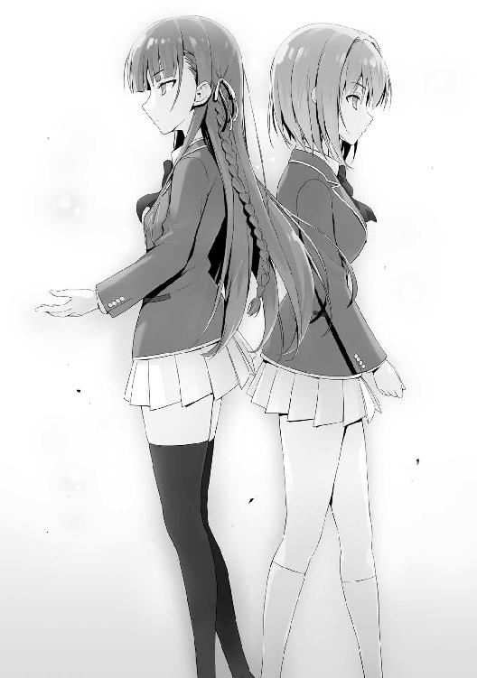

| ようこそ実力至上主義の教室へ 6 <ようこそ実力至上主義の教室へ> (MF文庫J) | |
| 衣笠 彰梧 & トモセシュンサク | |
| KADOKAWA / メディアファクトリー (2017) | |
ようこそ実力至上主義の教室へ６
衣笠彰梧

本作品の全部または一部を無断で複製、転載、配信、送信したり、ホームページ上に転載したりすることを禁止します。また、本作品の内容を無断で改変、改ざん等を行うことも禁止します。
本作品購入時にご承諾いただいた規約により、有償・無償にかかわらず本作品を第三者に譲渡することはできません。
本作品を示すサムネイルなどのイメージ画像は、再ダウンロード時に予告なく変更される場合があります。
本作品の内容は、底本発行時の取材・執筆内容に基づきます。
本作品は縦書きでレイアウトされています。
また、ご覧になるリーディングシステムにより、表示の差が認められることがあります。
○櫛田桔梗の独白
人は自分の理想どおりに生きているだろうか。私はそう。理想の自分になれている。
同性の中でも恵まれた容姿であることを、私は物心ついたときには理解していた。人よりも記憶力が良かったから勉強だって出来た。運動も得意だし、お喋りにも自信がある。
手先だって器用だし、とっさの出来事にも柔軟に対応する賢さも持っている。
じゃあ私は完璧な人間だろうか？
そう問われれば答えはノーだ。私より可愛い子は当然存在するし、頭が良い子や運動神経の優れた子はこの世に大勢といる。そんなのは当たり前。そう、当たり前のこと。
でも、人には大なり小なり、他人には絶対負けたくないことがあると私は思う。
外見でも勉強でもいい。テレビゲームや歌唱力なんかでもいい。
そんな自分の秀でたもので他人に負けた時、人には悔しいって気持ちが芽生える。
全てが平均より上の私には大きなコンプレックスがあった。
私は身近な誰かに負ける度、感情が大きく揺さぶられる人間だったのだ。一つ一つのことに負けるたび、私の心の中には闇が生まれた。激しいストレスで吐いたこともある。
現実は非情だ。私は凡人ではないけれど、けして天才じゃない。
小さい頃はまだ良かった。小さな課題をクリアするだけで周囲はちやほやしてくれた。
天才だ神童だともてはやしてくれた。気持ちが良かった。心が躍った。
何をやってもクラスで一番だった。ヒーローで、アイドルだった。
そんな私も中学に上がってから、各分野で私を超える人たちに出会い始めた。
勝てない相手には絶対に勝てない。その現実は重く深く私の心にのしかかってきた。
だから私は逃げ道を探した。この苦しみから逃げ出すために。
誰にも負けない物が欲しい。尊敬と羨望が欲しい。でも勉強や運動じゃダメ。敵わない。
そんな私が辿りついた答えは───誰よりも多くの『信頼』を得ることだった。
私は誰よりも好かれることで優越感を得ることにしたのだ。
見るのも嫌な気持ち悪い男子に手を差し伸べたり、腸が煮えくり返るほどムカつくブスにも手を差し伸べたりした。感情を押し殺して、偽りの笑顔、偽りの優しさを振りまいた。
そして私は人気者になった。同級生、先輩後輩、先生保護者、近所を歩く見知らぬ人間。
誰からも好かれる人間になって、他の人には負けない存在になれた。
正直、その日々は幸せだった。
同時に知ることが出来た。信頼とは何物にも代えがたい美酒であることを。
そして信頼という優越感の裏には『秘密』という存在があることも理解した。
人は心の底から信頼できる相手を見つけたとき、内に秘めたものを曝け出す。
クラスで一番モテる男の子が密かに想う相手も、クラスで一番頭がいい子の意外な悩みも、身体の重大な秘密から些細な秘密まで、私は全てを掌握した。情報を得た。仲良くなることで打ち明けられる悩みを聞くたび、私の心は躍った。
相手の命とも呼べる大切な情報を握り締めるたび、歓喜に震えた。
私は誰よりも信頼されている。そう思うことが私の存在意義になった。
けど私は気づいてなかった。
その信頼は噓の上に塗り固めた生活からでしか手に入らないことに。
心に莫大なストレスを抱えたまま私は日々を過ごした。
そして......あの事件が起こった。違う、起こしてしまった───。
でもそれは仕方がないこと。
だって、皆が私を拒絶したんだもん。
仕方がないよね。
人を傷つけたんだから、傷つけられても文句はいえない。
やられたらやりかえす。
当たり前だよね？
でも、それでみんなの中の『私』という理想の人間は一度壊れた。
尊敬と羨望が消え、怖れと憎しみに変わってしまった。
それは私の求めるものじゃない。
私が求めるのは唯一つ。
皆から信頼される存在になること。
もう一度あの『優越感』を得ること。
だからあんなことは二度と繰り返さない。そう誓った。
だから新しい学校生活に私は胸を躍らせた。
だから今度こそ成功させる。
だからそう決意した。
なのに......。
なのに、なのに、なのに......。
私にとって、その第一歩となるはずだった入学式は最悪の日になった。
学校に向かうバスの中で、堀北鈴音に再会したからだ。
あの事件を知るたった一人の存在。
あいつがいる限り、私に本当の平穏はない。
○変わっていくＤクラス
体育祭も終わり、肌寒くなってきた10月中旬。
次期の生徒会を担うメンバーを決める総選挙が行われ、早くも新旧生徒会の交代式がやってきた。全校生徒を体育館に集めた大々的なイベントだが、大半の１年生にはどうでもいい時間でもあった。眠たそうにしながらも、教師をはじめ上級生に目を付けられないよう息を殺している。
「それでは、堀北生徒会長より最後のお言葉を賜りたいと思います」
司会の言葉と共に堀北学が、ゆっくりとステージに用意されたマイクへと歩みを進めた。
以前の堀北......妹の方だが、であれば、兄の登場だけで萎縮していたかもしれない。
しかし、今は兄の勇退を見守るように、しっかりとした眼差しで見つめていた。
「約２年、生徒会を率いて来られたことを誇りに思うと同時に感謝します。ありがとうございました」
あまりにも短い挨拶が終わり、堀北兄は静かに後退し元の位置に戻った。
感動的な文言は一切無く、粛々と義務のように行った挨拶だったと言える。
しかし、どうやら引退セレモニーはこれで終わりじゃないらしい。
壇上の生徒会役員たちは固い姿勢を崩すことなく構えている。
「堀北生徒会長、今までお疲れ様でした。それではここで、新しく生徒会長に就任する２年Ａ組南雲雅くんより、お言葉を頂戴いたします」
そう呼ばれ、新たな生徒会長に就任した南雲が歩みを進めマイクの前に立つ。
その姿を壇上で温かく見守る生徒会メンバーの中には、１年の一之瀬の姿もある。
「２年Ａクラスの南雲です。堀北生徒会長、本日まで厳しくも温かいご指導のほど、誠にありがとうございました。歴代でも屈指のリーダーシップを発揮した最高の生徒会長にお供できたことを光栄に思うと共に、敬意を表したいと思います」
そう言い堀北兄の方に深々と頭を下げた。それから再び在校生に向き直る。
「改めまして自己紹介させて頂きます。南雲雅です。この度、高度育成高等学校の生徒会長に就任させて頂くことになりました。どうぞこれからよろしくお願いいたします」
体育祭で垣間見せた態度とは打って変わって、南雲は礼儀正しかった。体育祭で見せた表情、態度はなりを潜めている。そう感じたのも束の間のことだった。
穏やかな空気から一変するように南雲は薄く小さく笑った。
「早速ではありますが、まず始めに、私は生徒会の任期と任命、総選挙のあり方を変更することを公約します。堀北前生徒会長が、例年12月に行われていた総選挙を10月に変えられたことは一つの試みだったと思います。早い段階で次の世代に移れるようにした配慮は一定の効果を生み出しました。そこで新しい生徒会は新たなステップへと踏み出す時期と判断し、生徒会長及び生徒会役員はその任期を在学中無期限とし、卒業まで継続できるように変えていきます。同時に総選挙の制度と規定人数の制限を撤廃し、生徒会役員を常に受け入れられる体制を作り上げて参ります。つまり優秀かつ必要な人材はいつでも、そして何人でも生徒会のメンバーとして活動できるようにしていきます。万一任期中不適格だと判断された人材がいれば、会議にて多数決を行い、それをもって除名する規約も作ります。これを手始めとし、ここに集まっている生徒、先生方、そして前生徒会長の率いた生徒会の皆さんに宣言させていただきます。私はこれからの学校作りとして......まずは歴代の生徒会が守ってきた、こうあるべきという学校の姿を全て壊していくつもりです」
そう強く言い放つ。背後に立つ前生徒会の功績を全て否定するかのような発言だ。
「本来なら、今すぐにでも私の考える新体制として動き出したいところなんですが、残念ながらそうもいきません。新米生徒会長には色々としがらみも多いもので」
南雲は堀北前生徒会長を見た。だがすぐに在校生たちへと振り返る。
「近々大革命を起こすことを約束します。実力のある生徒はとことん上に、実力のない生徒はとことん下に。この学校を真の実力主義の学校に変えていきますので、どうぞよろしくお願いします」
その宣言に、一瞬体育館は静まり返った。だが直後、２年生のほぼ全員が歓喜の悲鳴を上げて盛り立てた。オレたち１年生は知らない上級生同士の戦いが、２年生と３年生の間にあったのかも知れない。そう感じさせるような出来事だった。
１
そんな１つのイベントが終わりを告げ、２学期も半ばに差し掛かったある日の放課後。
オレの周囲では少しずつだが小さな変化が起こり始めていた。無人島、体育祭と大きなイベントを越えて来たＤクラスは、スローペースではあるがクラスとしてのまとまりを持ち始めていたのだ。小さかった友人同士の輪は徐々に広がり、当初は打ち解けないと思っていた者同士も仲良くなり始める。
授業に対する取り組みも格段とマシになった。その大きな要因は、遅刻に居眠り、私語に暴力と様々な不安要素をもたらしていた問題児の須藤が、変化を見せたことだろう。
体育祭以降、まだ日は浅いものの、その態度の殆どに改善が見られていた。たまに眠たそうに授業を受けていることもあるが、それはバスケ部での激しい練習の影響だろう。授業中はたとえ眠くても必ずノートを取っている。後日まとめて堀北がチェックするという監視体制も影響しているかも知れない。
池や山内たち友人に対しても、手荒い暴力は鳴りを潜め接し方が優しくなった。
自分が好き勝手に暴れ回ることのみっともなさ、意中の人間である堀北の評価を下げたくない、そんなところだろうか。人が変わる動機なんてものは大抵そんなもの。
ともかく須藤は着実に成長し周囲の評価を上げ始めていた。
一方、そんな変化は須藤だけじゃなくオレ自身にも訪れていた。
これを良いことと捉えるか悪いことと捉えるかは非常に際どいラインだが。
「一人？」
近況を整理していると、真横から声をかけられる。
「一人で悪いか」
クスリと笑ったような気がした隣人である堀北を少しだけ睨み付けた。
「大切なお友達の池くんと山内くん。あなたを誘うことが極端に減ったわね」
「......そうか？」
いちいち『極端』と付けるところが意地の悪い性格を表している。
「あら、私の勘違いかしら。最近はお昼も一人のようだし。放課後もご覧の通り」
池と山内は博士を連れて教室を出て行く。ケヤキモールにでも向かうのだろうか。
釈迦のように冷静でいたつもりだったが、堀北は全て見抜いていたらしい。
そう。その点がオレの変化した部分の一つだろう。体育祭以降、一番友達に近い位置にいた二人からあまり誘いを受けなくなった。いや、全く相手にされなくなった。
「仕方ないわよね。全員同じ穴の狢、ダメな生徒の集まりで結束していたと思っていたはずなのに、実はあなたが高い身体能力を隠し持っていたんだもの」
「何が高い身体能力だ。たかが足が少し速いだけだろ」
「されど足の速さ。特に学生にとってはね。それに、改めて今までのことを振り返ったんじゃない？ 握力測定の数値だって平均より高かったことに着目しただろうし。それにあなたも分かっていたはずでしょう？ 人は秀でた他人を基本的に嫌う傾向にある。ましてあなたの場合は秀でた部分をこれまで隠していたのだから」
そんなことは言われるまでもなく分かっている。が、明確に理解していなかったと認めなくてはいけない。『たかが足の速さ』という意識を持っていたのは事実だ。
「それじゃ、ゆっくりとシングルライフを楽しんでね」
嫌味を言い残した堀北は、どこへ行くのか長い髪をなびかせ教室を後にした。
いつも一人の癖に、堂々としたその立ち振る舞いはちょっとだけ尊敬に値した。
その後姿を見送っていると、まだ教室に残っていた軽井沢が妙な視線をこちらに送ってきた。だが視線が交錯したかと思うと、別にこちらを見ていたつもりはないかのように自然と視線が外れる。明らかに意図のある目に見えたが、特に何かを訴えることもなく堀北から少し遅れて教室を出て行く。ひらりと舞ったスカートの丈の短さが気になる。他の生徒たちよりも少し短い。１センチ２センチなんて誤差の世界を全力で生きているようだ。
「なんだアイツ......まぁいいけどな」
「ねえ、綾小路くん」
どうしようか思案していると、オレのところに思わぬ来客があった。
軽井沢と同タイプのギャル系女子佐藤だった。下の名前は知らない。池や山内たちとも仲の良い女子でオレもグループチャットには参加しているが、接点は殆ど無い。
クラスメイトでありながら、ほとんど話したこともない相手だ。
男子と親しくしてくれる女子のため櫛田のように人気が出そうなものだが、異性としての人気はそれほどない。
池曰く、軽そうな外見で間違いなく男慣れしている。そんなビッチはお断り、らしい。なんとも複雑な男の心情だ。
来訪のタイミングから考えるにオレが一人になるのを待っていたのかも知れない。
どこか落ち着かない様子で佐藤はあたりを見回している。
「何か用か？」
珍しい状況にそう聞き返さずにはいられなかった。
「うん、まぁ。色々とね」
歯切れが悪い。だが残念なことにその話の内容を推測することは出来なかった。
佐藤という生徒に関して情報がなさ過ぎる。
「あのさー。なんていうかちょっと顔貸してくんない？ 話があってさ」
それはまた珍しい。少しだけ警戒心を強めたが、誘いを断れるほどオレの肝は据わっていない。断る勇気より受ける勇気の方が楽だ。
「ここじゃ何だから、いいかな」
こちらが返事をする前に、佐藤はオレが断らないと踏んだのか場所を変えることを希望してきた。それに従うようにしてオレは後を追う。
「あ......」
教室を出る際に佐倉が何か言いたげに声を出したが、結局その後声をかけてくることも後を追ってくることもなかった。
廊下に出て体育館へと続く渡り廊下までやって来た。昼食後の残り時間となると体育館を使用して遊んだり練習したりする生徒が移動で使うためごった返すが、皆が昼食を食べているだろう今のここは学校内でも屈指の人気のなさだ。話をするには打ってつけかもしれないな。
特に他の誰かと合流するようなこともなく、佐藤は立ち止まると振り返った。
「ちょっと変なこと聞くけどさ......綾小路くんって誰か付き合ってる人とかいるわけ？」
「えっと、それってどういう意味だ？」
「そのままの意味に決まってるじゃん。彼女はいるのかってこと。......どうなの？」
いるかいないかの２択で問われれば、いない以外の選択肢は存在していない。
モテなさをアピールするようで嫌だが噓をついても仕方が無いので素直に答える。
「いないけど......」
「ふぅん、そうなんだ......。じゃあさ、今彼女は募集中ってことでいいわけ？」
バカにするわけでも、哀れむわけでもなく佐藤は少し嬉しそうに口元を緩めた。
ここまで来ると、オレにも話の流れがどういうものか理解でき始めた。
オレをハメるための罠か？ 一応周囲を警戒するが、こちらが慌てふためくのを隠れて見ているような人の気配は無い。当然教室を出てから尾行されることもなかった。
なら、佐藤自身かその近しい友人にオレを彼氏にしても良いと思う生徒がいるということになる。このタイミングで、何故急に。
これも堀北の言う『されど足の速さ』ということなのだろうか。
「友達からでいいからさ───その、電話番号交換してよ」
どうやら佐藤の友人、というわけではなく佐藤本人がその希望者のようだった。
まさか女子にこんな提案を受ける日がくるとは思っていなかった。
これは───半ば告白手前のようなものだ。
「とりあえず分かった」
連絡先を交換するのを拒否する理由は特に見当たらない。
付き合うだの付き合わないだのはもっと飛躍した先の話だ。今オレは電話番号の交換を希望されただけに過ぎない。
「うん。これで完了、だね」
登録完了の文字が携帯に出る。やはり嬉しいものだ、女子の連絡先が増えるのは。
佐藤との短いやり取りの後、何故だか妙な静けさと空気が流れる。
「野暮なこと聞くけどさ、どうして急に連絡先を聞いてきたんだ？」
佐藤は少しだけ頰を赤らめ視線を逸らした。
「どうして、って......体育祭のさ、リレー。綾小路くん凄く格好良かったって言うか。今までこんな近くにいたのに全然ノーマークだったって言うか。クラスじゃさ、平田くんが一番かなって思ってたけど軽井沢さんの彼氏だからどうしようもないじゃない？」
そういった後、佐藤はオレのほうを見上げ、慌てて言葉を付け足す。
「あ、だからって綾小路くんが平田くん以下なんてもう思ってないって言うか。正直、良く見ると平田くんより格好いい気がするし、大人しくて優しそうだし......と、とにかくそういうわけだかっ！」
本人の中で羞恥心のようなものが膨れ上がったのか、最後の『ら』はよく聞こえなかった。風のように去って行った佐藤との出来事に思考がついていかず、立ち尽くすオレ。
思いも寄らぬ場所、思いも寄らぬタイミング、思いも寄らぬ相手に告白を受けてしまった。人生一寸先は闇というが、とんでもないことが起こってしまった。そもそも、オレはこの事態をどうすればいいのだろうか。佐藤に関しては良いも悪いも無く純粋にフラットにクラスメイトとしてしか受け止めていなかった。なら、告白を断るのが正解か？
いや、そもそも付き合ってとも好きだとも言われていない。ただ彼女がいるかを問われて連絡先を聞かれただけ。もう一つ付け加えるなら友達から始めて、連絡先を交換したいとお願いされただけだ。迂闊に断ったりしたら、何勘違いしてんのと突っ込まれるかもしれない。それは非常に格好悪い。
告白するもされるも傍観者として見ている分には良いが、いざ当事者になってみると対処に困る。佐倉が以前山内に告白を受けた時の気持ちが今ならよく分かる。
なんとも複雑な心境で校内へと戻ると、その途中Ａクラスの葛城と弥彦に遭遇した。
特に声をかける必要もないと思ったが、葛城は足を止めて弥彦に声をかけた。
「すまないが先に行っててくれ。少し綾小路に話がある」
弥彦は一瞬警戒心を強めたが、葛城の指示ということもありすぐに頷いた。
「堀北は一緒じゃないようだな」
「いつも２人ってワケじゃない」
なんというか、女子に比べると男子って話しやすいな。
そう考えると友達を作るのに苦労していた自分がバカらしくなってくる。
「それもそうだな。それよりも先日の体育祭、最後のリレーでは正直驚いた。恐らく他のクラスの誰も予想できていなかった事態だっただろう」
当然その手の話にもなるだろうな。こちらは驚くこともなく話す内容を淡々と口にする。
「Ｄクラスもやられっぱなしじゃないってことだ」
「なるほど。だがＤクラスの生徒も、その大半が驚いていたように見える。誰も彼もが千両役者というわけでないなら、おまえの足の速さを知っていた者は相当限られそうだ」
さすが葛城とでも評しておこうか。あの騒ぎの中、周囲をよく観察していたな。
普通は走者のオレや堀北兄に注目するくらいなものだが、自分たちを含め全てのクラスを良く見ている。
「何を想像しても自由だが、オレは何も話せないぞ」
「構わん。おまえから無理に聞き出そうと思っているわけじゃない」
「敵対するクラスなら少しでも情報が欲しいと思うんじゃないのか？ それとも、結局Ａクラスから見れば、Ｄクラスなんて相手にもしていないっていう証拠なのか」
少しだけ困った顔をした葛城は数歩足を進めると、窓際から外を見渡した。
「俺は今、色々と厄介な案件に追われている。他クラスに目を向ける余裕がないだけだ」
「堀北に言ってたな。龍園には気をつけろと」
見知った情報だけを葛城に向ける。
「ヤツは勝つためならなりふり構わず仕掛けてくる。時には恐喝や暴力行為というように手段を問わずな」
だが実際のところ葛城が警戒しているのは龍園だけではないだろう。むしろＡクラスに潜む坂柳にこそ警戒心を強めているはずだ。とは言えその話にはあえて触れない。
坂柳有栖はオレの過去を知る謎多き生徒だ。迂闊に藪を突けば蛇に嚙まれるだろう。
「恐喝や暴力か。学校に知られれば危なそうなものだけどな」
「それを巧みにやる男、ということだ。堀北には引き続きヤツを侮らないよう忠告をしてくれ。敵に塩を送る真似のようで警戒するかも知れないが、龍園はＡクラスやＢクラス、そしてＤクラスにとっても共通の敵だ」
全てのクラスを敵に回してＣクラスは戦っているのだから、事実そういうことなんだろう。しかし、葛城は一度龍園と手を組んでいた形跡がある。一概に信じていいかどうか。
そのことを考えていると、葛城はこちらの不信感を感じ取ったようだった。
「信じられないか？」
その問いかけに少しだけ踏み込むことにする。
「正直に言えば、信じられない部分もある。あんたの話をそのまま堀北に伝えるかどうか微妙なところだ。情報源は言えないが、葛城と龍園が手を組んでたって噂があるんだけどな。それはデマか？」
「......それをどこで知った。いや、深く詮索するまでもないか」
すぐにある答えにたどり着いたのか、葛城は取り乱すこともなく言葉を続けた。
「今は後悔している。一時気持ちに余裕が無かったとは言え、ヤツと関わり合うべきではなかった。だからこその忠告と思ってもらいたい。ヤツに触れれば呪いを受けるぞ」
どんなメリットデメリットがあったのかは知らないが、葛城もその身をもって体験したということだろうか。話の信憑性のほどは定かじゃないものの妙に説得力がある。
「最初から分かっていたはずなのだがな。ヤツと組むことの危険性は」
「それだけの提案があったってことだろ？ 組む上で」
自嘲するように葛城は小さく笑った。
余計なお世話だと思ったが、葛城の顔には全く余裕が無い。焦りや不安はないのだろうか。もう一度少しだけ踏み込んで聞いてみることにした。
「龍園を警戒するのは分かるけど問題はＡクラスとＢクラスの方じゃないのか？ 10月に公開されたクラスポイント表を見たぞ」
葛城の唇が強く結ばれる。そのことを気にしていないわけではなさそうだ。
Ａクラスは、無人島終了時点で１１２４クラスポイントにまで増やし快調さを見せていたが、船上特別試験、体育祭と大きくポイントを落とし８７４ポイントにまで後退した。対する追い上げのＢクラスは７５３ポイント。その差は横並びだったスタート時を除いて一番詰まっている。
補足だが、Ｃクラスは５４２ポイント。そしてオレたちＤクラスは２６２ポイントだ。
「確かに良い状態じゃないことは認める他無いな。学校の仕組みに振り回されている。クラスポイントの構造を完璧に把握できていないのも一つの要因だ」
やはり不用意に坂柳の話題には触れないか。
とはいえ葛城の言うように、この学校のポイントシステムに問題があるのも事実だ。
シンプルなようで、意外と分かりづらく不明瞭なところも多い。
振り返ってみると気づきやすいが、入学直後は遅刻欠席、授業態度に厳しい査定をしていた。事実オレたちＤクラスがその影響を強く受け、一度全てのクラスポイントを吐き出してしまったのは記憶に新しい。
ところが、現在その授業態度等がクラスポイントに反映されている気配は無い。
もちろん真面目に取り組んではいるが、マイナスが全く無くなったとは思えない。
今にして思えば、それが最初の『特別試験』だったのかも知れないな。
「俺は元々地方の中学出身だが、想像していた高校生活とはまるで違う場所だ、ここは」
そう話したところで葛城は少しだけ不満そうに腕を組んだ。
「分かってはいたことだが、この学校は理解に苦しむ不可思議な仕組みを持った場所だ。それをここ最近改めて感じている。本来同学年の生徒同士なら仲良くして然るべきもの。けっして敵対しあうものではない」
普通の学校生活と違うということだけは間違いない。生徒同士、和気藹々とすることが難しい仕組みが作り上げられている。競い合うルールが築かれているとも言える。場合によっては相手を蹴落とすほどの憎しみ合いが発生する。そういう学校だ。
ただその分、身内......自分のクラス内の結束は基本的に高まる。
まあ、そのクラスの結束も、Ｂクラス以外はどうにも怪しいものだけどな。
まとまりを欠く個人プレイが多いＤクラスに、独裁政権のＣクラス。そして権力争いで二分されたＡクラスと、どうにも微妙な状況だ。
「おまえは戸惑ったりしなかったのか？ 綾小路」
「正直全く。考え方の違いなだけで、この学校が良いか悪いかという判断には影響しない。Ａクラスを目指さなきゃいけない、そんな枠組みを取っ払えば感動的なほど魅力的な学校だ。ある程度頑張ってさえいれば衣食住に困らないどころか、支給されるポイントで娯楽に費やすお金も得られる。学校内のどの施設を取っても至れり尽くせりで文句のつけようがない」
その点はこの学校に住まう全ての人間が共通して思っている事柄だろう。仙人のように極端な山暮らしが好きな偏屈でもない限り、今の環境を歓迎しない者はいない。葛城も反論できない。
「同意だ。不満をぶつけることがあるとすれば、環境が完璧すぎることだろう。高校一年生が受けて良い待遇とは思えない。特別難しい試験を乗り越えてきたわけでもないのだからな。......無駄話が過ぎた。とにかく龍園のことは堀北にしっかりと伝達しておいてくれ」
寡黙な男のアドバイスを受け、オレは堀北に伝えることを約束した。
事実龍園は着実にＤクラスに攻撃を仕掛け、そして叩き潰そうとしている。
「穏やかに過ごしたいだけなんだよな、あんたも。苦労が絶えないな......お互いに」
そう呟かずにはいられなかった。
２
その日の夜、部屋でくつろいでいると軽井沢から電話がかかってきた。連絡先は交換していたものの初めて受ける着信に少し驚きつつ応対する。
「ちょっと聞きたいことがあるんだけど」
通話タブを操作して携帯を耳に当てるや否や、軽井沢がそんな風に言った。
「答えてやれるようなことがあると良いんだが」
「あんた、佐藤さんに告られたでしょ」
思いがけない質問に言葉が詰まる。何故そんなことを知っているのか。
「先に言っとくけど、クラスの女子数人は既に知ってるから」
「どんだけ伝達が早い情報網が存在するんだ。ネットより早いぞ。情報源は誰だ」
「誰も何も、佐藤さん本人。今日告白するってことは事前に知ってたし」
インサイダー取引みたいなもんか。......いや、なんか違うな。
「それで昼にオレのほうを見てたのか」
「......やっぱ気づいてた？」
「誰が誰に告白するのかはどうでもいいけど、なんでそれを報告しあうんだよ」
「女子ってそういうものだから。後で取り合いになっても面倒でしょ」
所有物に名前を書いておきたいみたいなことだろうか。
男子でも似たような現象はあるから、不思議でもないのかも知れないが......。
それでも腑に落ちない点はある。
「取り合いも何も、意中の相手が同じなら宣言してもしなくても似たようなものだろ」
「全然違うの。いきなり付き合ってますなんて宣言したら、それこそ大顰蹙を買うこともあるし。って別にそんなことはどうでもいいの。あたしが聞きたいのはその返事よ」
いや、そんなことを言われても困る。
「オレの返事がどうだろうとおまえには関係ないだろ」
「そりゃ関係ないけど......。でも無関係じゃないって言うか。あんたはあたしに脅しかけて色々させてんだからどうしても引っかかるのよ。女子はネットワークが広い分余計な噂が出回ったら困るわけ。こっちが面倒ごとに巻き込まれるリスクもあがる。分かる？」
つまりオレが佐藤と付き合うことで、軽井沢に関する余計な情報を話したりする危険性がある。あるいは佐藤を気にかけるばかりに軽井沢を守ることが疎かになる。そんなことを考えての電話ってことだ。どう考えても明らかに考えすぎだ。
筋が通っているようでそれほど通っていない。軽井沢は外見や言動に似合わず理論的な思考をする方だが、今回はちょっと無理矢理すぎるな。
「何にせよ心配は要らない」
「告白受ける気なんだ」
「そうは言ってないだろ」
「そう言ってるようなもんでしょ。ここで断るって言い切らないんだから。あーあ、あんたの底が見えたって感じ？ どうせ告白してきたのを良いことに、エッチなこと考えてたりするんじゃないの？ 男子ってそんな生き物だしさ」
物凄い発想の飛躍だ。運動会で一着を取った子供に将来はオリンピック選手になれるぞと持ち上げる両親くらい飛躍しすぎている。
「男がそんな生き物だとしても、少なくとも今のオレにそんな感情はない」
「だったら証明してよ。断らない理由」
「証明も何も、オレは告白されてない。ただ友達から始めて欲しいと言われて連絡先を交換しただけだ」
「......なるほど。そういう感じだったわけね」
何でこんなことを軽井沢に話さなきゃいけないのか。恥もいいところだ。
「これに告白を受けるも受けないもないだろ。連絡先を交換して終わりだ」
「ふぅん......。ま、とりあえず今日のところはそういうことにしておく」
なんとも上から目線な軽井沢の態度だった。
貰った電話ついでに確認しておくべきことを済ませておくか。
「ひとつ聞いておきたいんだが、Ｃクラスの真鍋たちからはあれから何もされてないのか？」
「......うん。それは今のところ大丈夫」
声のトーンが１、２段階下がる。軽井沢に取ってみれば触れられたくない案件だ。
「対策はしてるつもりだが、万一にも何かあればすぐに知らせてくれ。仮に他言無用とするような強烈な脅しだったとしても、オレに言えば必ず解決する」
電話の向こうで軽井沢が息を吞むのが伝わってきた。少し強い表現を使いすぎたか？
「......分かってる。というか、役に立ってもらわないと困るし......」
この学校で生き抜くため、軽井沢はどうしても今の地位を守っていく必要がある。
そのためには真実を知る人物を完全に封じ込めておかなければならない。
もっとも、真鍋たち程度の生徒には真実の何たるかが理解すら出来ていないだろうが。問題はそのバックについている龍園だろう。状況次第では、そこを叩かなければならない。
いや、恐らくその時は刻一刻と近づいている。
「それで話がズレちゃったけど、佐藤さんの件どうするわけ？ 連絡先を交換したってことはその次に進む可能性だってあるわけよね？」
「保留中、だな。少なくともオレは佐藤のことを何も知らない。これから先向こうから連絡してくるとも限らないしな」
「じゃあ佐藤さんからこれ以上食いついて来なきゃ、振るんだ？」
「振るも何も、ただ連絡先を交換しただけだし。自分から行くことはないだろうな」
堂々とデートに誘うような度胸は、まして告白する方向に持って行く自信はオレにはない。
「そう。分かった、じゃあね」
何かに納得したような軽井沢は通話を切ろうとする。
「軽井沢」
「なに」
間に合わないかもと思ったが、呼び止めると通話が途切れることはなかった。
「オレに対する携帯の発着信履歴は消しておいてくれ」
「それ、もうやってる。メールもね」
「流石だな」
指示せずとも、軽井沢は上手くやっているようだった。
「それだけなら切るけど？」
「ああ」
そんなやり取りを最後に付け加えて、通話を終える。
本当はもう一つ言うべきか悩んだがやめておいた。
今の段階で、先の想定を話しても、軽井沢の重荷になると判断したからだ。
その時が来ても、軽井沢なら最低限の対応はするだろう。
それに───『物理的』な対応が求められることは避けられない。
○ペーパーシャッフル
某日。クラス内は重い空気に包まれていた。
ただ、その空気はけして悲観するものではなく、程よい緊張感に包まれたものだ。
それを真っ先に感じ取ったのはクラスの担任である茶柱先生だろう。
「席に着け───随分と事前準備が出来ているようだな」
彼女が教室にやってくるなりその見えない空気は更に重たくなり急速に冷え固まる。
本来のあるべき姿。当たり前のクラス風景。その常識的な雰囲気に茶柱先生は驚きを隠さなかった。
「揃いも揃って真剣な顔つきだ。とてもあのＤクラスとは思えないな」
「だって今日は、中間テスト結果発表の日っすよね？」
やや緊張した面持ちで池が言う。それを見て茶柱先生はニヤリと笑った。
「その通りだ。中間、期末テストで赤点を取れば即退学。以前おまえたちに伝えたことは記憶にも新しいだろう。緊張や不安を抱くのは当然のことだな。だが、おまえたちは今までその当然の気構えすら出来ていなかった。成長した姿を見られたことは喜ばしく思う」
今まで見ることの出来なかった生徒の新しい一面に感心した茶柱先生だが、それでテストの点数が良くなるわけでもない。あくまでも心構えが出来たに過ぎない。
その当然のことを茶柱先生はあえて口にする。
「しかし結果は結果、赤点を取った場合には覚悟を決めてもらうぞ。ではこれから中間テストの結果を貼り出す。自分の名前と点数を間違えないように確認しろ」
その警告が本物だからこそ、念を押す。もし結果を受け入れず暴れれば、学校側は強硬手段も辞さないだろう。教室内に張り巡らされた鋭い監視のレンズが常にクラスメイトを見張っているのだから。
「やっぱりテストの点数は全部見られるんですかっ」
「もちろんだ。この学校のルールだからな」
個人情報を守りたい生徒の意思に関係なく黒板に貼りだされるＤクラスの生徒全員分の成績。そこにはプライバシーなど一切ない。包み隠さず明らかにされていく結果。営業マンのノルマ達成表が会社内に貼り出されるが如く、出来る人間と出来ない人間が露呈する。
こんな時、目立つのは飛びぬけて成績の良い人間と悪い人間だ。多かれ少なかれ苦しむのは下の人間で、周囲からの勝手なプレッシャーと侮蔑を受けることになる。
「全教科平均して合格点は40点以上が目安と思っておいて結構だ。それ未満の点数を取った者は必然的に退学処分となるだろう」
これまでのテストとほぼ変わらない赤点ラインだが、状況は少し異なる。
「今から発表する点数には体育祭での結果も反映されている。活躍した者の中には結果として点数が１００点を超えた者もいるが、等しく満点扱いだ」
先に行われた体育祭で結果を残せなかった下位10名には、中間テストにおける10点の減点措置が取られることが決まっていた。Ｄクラスの外村は体育祭で学年ワーストの一人であり、他の生徒よりあらゆる教科で10点多く獲得しなければならない。
とは言え、ペナルティを負っていない池や須藤たちの表情も強張る。赤点を取れば即退学という制度は、それだけ生徒の心身に強い負荷をかけるからだ。
ゆっくりと貼りだされていく試験結果を固唾を吞んで見守る生徒達。
しかし、隣人の堀北に焦りは全くなかった。
「お、おぉっ!? 噓だろ!?」
結果の並び順は、点数の悪かった者から記載されている。つまり１学期の中間テスト、期末テストで最下位を不動のモノにしていた須藤の名前が当然印字されていると多くの生徒が思っていた。しかしトップバッターにあった名前は『山内春樹』と各科目の点数。次いで『池寛治』。そこから井の頭、佐藤、外村と続いている。いつもはもう少し上にいる外村の順位が低いのは体育祭で受けたペナルティの影響と考えられた。
「危なっ！ 俺が最下位とかマジかよ！」
幸いどの教科も40点を超えているが、英語は43点とスレスレの低空飛行だ。平均点は50点に僅かに届かない。結果を受けて山内は一瞬生きた心地がしなかっただろう。相当な冷や汗をかいている。
それよりも驚いたのは須藤だ。今まで最下位が定位置だったのに、今回のテストでは下から12番目と大躍進だ。体育祭で獲得した点数があるとはいえ凄い結果だ。それは周囲の驚きが物語っている。平均点にして57点をマークしている。
「一気に自己記録大幅更新 見たか しかも平均60点まで後一歩だぜ！」
自らの名前と点数を見つけるなり須藤は喜んで叫び立ち上がった。更に小躍りまでする。
「その点数程度で騒がない、あなたの場合は体育祭の貯金もあった。みっともないわよ」
「ぐっ、お、おうっ」
ぴしゃりと放たれた堀北の一言で、須藤は気落ちするも冷静に座りなおした。
まるで忠犬だな。主人の命令には即座に反応しそれを遂行する。
「あの須藤が平均57点を取るなんてな。勉強会の効果は抜群だったようだな」
苦手な英語も52点と立派な数字をたたき出している。
この中間テストに向けて、堀北が須藤たち赤点組に勉強を教えていたことは耳にしていた。教え役として誘われることはなかったが、それも当然だろう。他の生徒からしてみればオレは頭が良い部類には見られていない。それに堀北自身もオレの学力には懐疑的なはずだ。
「確かに勉強会の効果は大きかったわ。もしぶっつけ本番で挑んでいたら、まず赤点だったでしょうし。けれど今回は他の要因が大きいかしら。中間テストそのものが比較的簡単な問題で構成されていたことも救いだったわ」
「そうかもな」
今回の中間テストは普段の試験と比べると少し低いレベルだったことは間違いない。オレも学校側が間違えて載せてしまったんじゃないかと疑うような問題が幾つもあったからだ。そういったことも踏まえ、赤点組が確実に赤点ラインを超えていたことを確信していたからこそ、堀北には焦りが無かったということだろう。対して最下位の山内は結構な差で須藤に負けたことに悔しさを隠しきれない様子だった。赤点に不安を抱える生徒に勉強を教えたのは以前と同じだが、須藤は更に休み返上で堀北に１対１で勉強を教わっていた。恋のパワーとは恐るべきもので、少しずつだが学力を向上させ始めているようだ。
「あなたは平均64点。なんとも絶妙に普通なラインね。いい加減本気出したら？」
「あれで精一杯なんだよ」
普段50点付近のオレがいきなり１００点を取れば新たな面倒に巻き込まれるのは必至。
こういう時は手堅く手堅くやっておけばいい、と勝手に思っている。
とはいえ須藤の躍進を考えるともう少し取っても良かったか。
「道化を演じていると知ってから、あなたの発言を素直には聞き入れられなくなったわ」
「おまえがオレの発言を素直に聞き入れたことがあったかは定かじゃないけどな」
「それもそうね」
そこは認めるんだな、素直に......。
それにしても今回の中間テスト、問題が簡単だったとはいえ、上位陣はちらほら１００点獲得者が出ている。これは他のクラスも中々に高い得点を出したに違いない。
「今回の中間テストによる退学者は見ての通り０だ。無難に試験を乗り越えたな」
素直に生徒を褒める茶柱先生。流石に叩くところもないようで態度も控えめだ。
「当たり前だ。おうおう、来月のプライベートポイントも楽しみにしてるぜ先生」
調子に乗った須藤は机に肘をついて、堂々とそんなことを言った。
そんな態度も茶柱先生は寛大に受け止め、笑顔を崩さない。
「そうだな。体育祭も特に問題は無かった。11月のプライベートポイントもある程度期待して良いだろう。それにしても、私がこの学校に着任してからの３年間、過去Ｄクラスからこの時期までに退学者が出なかったことは一度もなかった。良くやった」
褒めるように茶柱先生がクラスの生徒を評価した。今までそんな姿を見せることがなかっただけに、殊勝な姿に抵抗を感じる者も少なくないようだった。
「なんかムズムズするな、褒められるとさ」
普段から褒められることが少ない者ほどテレ臭そうだ。
ただ、堀北に気の緩みは一切ない。もちろん赤点が無かったことは喜ばしいことだが、茶柱先生が褒めただけで話を終わらせるような人物ではないと理解しているからだ。
態度が穏やかになればなるほどその不気味さは増していく。
結んだポニーテールが妖しく揺れる。歩く足音が静かに移動し始めた。
教室の中を一周するつもりなのか、机と机の間をゆっくりと抜けていく。
途中池の席の横に辿りつくと、茶柱先生は足を止めてこう言った。
「無事に一つの試験を乗り越えたが、改めてこの学校はどうだ？ 評価を聞きたい」
「そりゃ......良い学校ですよ。上手くいけばお小遣いも沢山もらえるし。飯とかだってどこも美味いし、部屋も綺麗だし」
それから、と指を折りながら追加していく。
「ゲームとかも売ってるし。映画とかカラオケもあるし、女の子も可愛いし......」
最後の一つだけはこの学校との関係性は怪しそうだ。
「あの......俺、なんか間違ったこと言いました？」
無言で話を聞かれていることに耐え切れなくなったのか、池がお伺いを立てるように茶柱先生を見上げた。
「いや。生徒にしてみれば間違いなく素晴らしい環境だろう。教師の私から見ても、この学校はあまりに恵まれすぎている。常識では考えられない好待遇が与えられているからな」
再び歩き出すと、一番後ろの席を通り越し今度はオレたちの方に歩いてくる。
授業中に問題を当てられそうな時の気分だ。オレには話しかけてくれるなよ？
その願いは幸いなことに通じたのか、茶柱先生が今度足を止めたのは平田の隣だった。
「平田、この学校には慣れたか？」
「はい。友達も沢山出来ましたし、充実した学校生活が送れています」
平田は模範的かつ堅実でしっかりとした受け答えをする。
「一度のミスで退学になるかも知れないリスクを負っているのに不安は感じないか？」
「その都度、全員で乗り越えていくつもりです」
常にクラスメイトのことを考えている平田に、迷いは見えなかった。
教室内を一周し終えた茶柱先生が壇上に戻ってくる。
彼女が何を確認したかったのか、それはよく分からなかった。
勝手に推測するなら、クラス内の士気や雰囲気をもっと細かく知りたかったのかも知れない。これから訪れる試練に立ち向かえるかどうか、その見定めというべきか。
「おまえたちも分かっていると思うが、来週、２学期の期末テストに向けて８科目の問題を散りばめた小テストを実施する。既にテストに向けて勉強を始めている者もいると思うが、改めて伝えておく」
「げえっ！ 中間テストが終わってホッとしたばっかなのに！ またテスト！」
寒い季節になり始め、勉強が苦手な生徒たちが苦しむ時期が立て続く。学生であり続ける限り逃れることの出来ないテストの嵐だ。特に２学期はテストの間隔が短い。
「つか小テストまであと１週間だったっけ！ 聞いてないッスよ！」
そう叫ぶ池だが、各教科の先生から、小テストが実施されることについては繰り返し告知されていた。その辺を学習しない池の言動に思わずため息が出そうになる。
「聞いていないは通用しない。そう言いたいところだが安心しろ池」
救いの糸を垂らすように、茶柱先生は笑みを浮かべる。
だがそれが単純に優しさによるものではないことをいい加減オレたちは学んでいる。
「マジっすか先生！ 安心していいんスか!? やったぜ！」
学んでいる......はずなんだがなぁ。茶柱先生は池から視線を外し言葉を続けた。
「まず第一に、小テストは全１００問の１００点満点となっているが、その内容は中学３年生レベルのものになっている。言わば基礎をきちんと覚えているかの再確認を兼ねたテストだということだ。更に１学期の小テスト同様に成績には一切影響しない。０点だろうと１００点だろうと取って構わない。あくまでも現状の実力を見定めるためのものだ」
「お、おぉっ。マジっすか！ やった！」
「だが───もちろん小テストの結果が無意味なわけでもないことを先に伝えておく。何故なら、この小テストの結果が次の期末試験に大きく影響を及ぼすからだ」
やはりというか何というか。
体育祭が終わって間もない中、次の課題が始まろうとしていた。
「何なんだよ、その影響ってのは。もっと分かりやすく言ってくれ」
須藤がそう突っ込みたくなる気持ちも分からなくはない。あえて茶柱先生はクラス内の不安を煽るような言い方をして本題に触れるのを先延ばしにしている。
「おまえに分かりやすく説明してやれると良いんだがな須藤。次回行われる小テストの結果を基に『クラス内の誰かと２人１組のペア』を作ってもらうことが決まっている」
「ペア、ですか」
テストとは無縁そうな単語に平田が疑問で返す。
「そうだ。そしてそのペアは一蓮托生で期末テストに挑むことになる。行う試験科目は８科目各１００点満点、各科目50問の合計４００問。そして取ってはならない赤点が今回は２種類存在する。１つは今まで通りに近いが、全科目に最低ボーダーの60点が設けられており、60点未満の科目が１つでもあれば２人とも退学が決定する。この60点とはペア２人の点数を足した合計点のことを指す。例えば池と平田がペアだとするならば、池が０点でも平田が60点を取ればセーフということだ」
生徒から驚きの声が漏れる。優秀なパートナーを得られれば相当楽な試験になるな。
しかし赤点が２種類あるとはどういうことだろうか。
それを無視し茶柱先生は更にもう一つの赤点を説明しだした。
「そして今回新たに追加される退学基準は、総合点においても赤点の有無を判断されるという点だ。仮に８科目全てが60点以上であっても、ボーダーを下回れば不合格になる」
「それに関してもペアの総合点ということでしょうか」
「その通りだ。総合点はペアの合計で定められる。求められるボーダーはまだ正確な数字は出ていないが、例年の必要総合点は７００点前後となっている」
一蓮托生ということは、点数を共有するペアが両方脱落することになるのか。
７００点ということは、２人合わせて全16科目だから一科目あたり平均43・75点は最低取る必要がある。
堀北や幸村といった学力に定評のある生徒も、組む相手次第では相応のリスクを負う。
「ボーダーがまだ不明確とのことですが、それはどうしてでしょうか」
「そう急くな平田。総合点のボーダーラインについては後でしっかり説明しよう。期末試験は１日４科目の２日間に分けて行われる。それぞれの科目の順番はおって通達する。万が一体調不良で欠席する場合には、学校側が欠席の正当性を問い、やむを得ない事情が確認できた場合には過去の試験から概算された見込み点が与えられるが、休むに該当しない理由であった場合には欠席したテストは全て０点扱いとなるので注意するように」
絶対に避けては通れない試験ということだな。体調管理も実力の内、規定路線だ。
「それにしても、おまえたちも少しはこの学校の生徒らしくなってきたな。以前であれば試験内容を聞いた段階で悲鳴を上げていただろうに」
「......そりゃ、慣れもしますって。色々やってきたんですから」
池が驚き少なく応える。そこには僅かながら自信も見える。
「頼もしい発言だな池。だが、恐らくこの中にも同じように考えている生徒は少なくないだろう。だから一つだけアドバイスをしておく。１年の１学期を終えただけでこの学校の全てを把握した気にならないほうがいい。この先おまえたちは今よりもずっと大変な試験を何度もクリアしていかなければならないからだ」
「こ、怖いこと言わないでくださいよ先生」
女子の一人が怯えたように言う。
「事実だから仕方がない。例えばだが、例年この特別試験......通称ペーパーシャッフルでは１組か２組の退学者を出している。そしてその脱落の大半はＤクラスの生徒だ。けして脅しではなく本当の話だ」
ここまでまだどこか楽観的だったクラスに、張り詰めた空気が流れた。
新たな特別試験の来訪。だが、ペーパーシャッフルとはどういう意味なのか。
「ボーダーを割ったペアは例外なく退学だ。私の発言が只の脅しだと思うなら上級生たちに聞いてみるといい。おまえたちもいい加減コネクションが出来始めただろうからな」
しかしこれだけ過酷そうな試験内容にもかかわらず、例年１組か２組の退学者で済んでいるのか。それはそれで少し奇妙な気もする。組み合わせ次第じゃ壊滅的な結果になりかねない。
つまりは『そういうこと』なんだろう。
「最後に、本番中のペナルティについてだ。当たり前のことだがテスト中のカンニングは禁止とする。カンニングした者は即失格とみなし、パートナー共々退学してもらう。これは今回の試験に限らず全ての中間、期末試験に該当することだがな」
カンニングイコール退学というのは、一見すると重い処罰だろう。普通の高校なら全科目０点や厳重注意、停学が関の山だ。しかし赤点を取ったら即退学である以上、必然的にカンニングが退学扱いになるのは避けられない運命か。ここでわざわざ警告する意味は焦って先走ったミスをする生徒を防ぐ、茶柱先生なりのアドバイスと受け取っておこう。
しかし問題はペア制度のテストということだ。
「肝心のペアの決定方法は小テストの結果が出た後伝える」
その言葉を聞いた直後、オレは静かにペンを握った。ほぼ同じタイミングで隣の席の住人もペンを握り、黒板に貼り出された紙と向き合いながら何かを書き始める。
その様子を横目に見て握ったペンを机に置きなおす。
自分の行動の不必要さを実感した。
「小テストの後って、んだよそれ。最下位と一緒になったら大迷惑じゃねえか」
「うげ、健に屈辱受けた！ 絶対勉強して逆転してやる！」
「無理すんなよ。口だけだろおまえは。俺はまだまだ勉強するぜ」
悔しさを滲ませた山内が悶えるように机に突っ伏した。須藤も口は悪いものの、堀北さえいれば本当にコツコツと勉強を続けていきそうなだけに多少の説得力があった。
まぁ大切なのはそこじゃない。学校側は現時点ではペアの決定方法を教えないという部分だ。即ち、教えることでペアの相手を変えることが出来る、という事実を内包している可能性が極めて高い。これまでの特別試験や筆記試験に挑んできた生徒のうち、何人かは気づいているだろう。隣でペンを走らせる堀北も含めて。
「それからもう一つ、期末試験では別の側面からも課題に挑んでもらう」
「もう一つ、まだ何かあるんですか」
クラスが僅かに動揺する中、取りまとめるように平田が応対する。
「そうだ。まず、期末テストで出題される問題をお前たち自身に考え作成してもらう。そしてその問題は所属するクラス以外の３クラスの１つへと割り当てられる。他のクラスに対して『攻撃』を仕掛けるということだ。迎え撃つクラスは『防衛』する形となる。自分たちのクラスの総合点と、相手のクラスの総合点を比べ、勝ったクラスが負けたクラスからポイントを得る。クラスポイントにして50ポイントだ」
学校が用意する赤点のライン各教科60点以上をペアで維持しつつ、例年７００点前後とされる総合点のボーダーラインを超える。更に、クラス全体の総合点で相手クラスの総合点を上回る必要がある、ということか。
「組み合わせによってはポイントに開きが出る可能性がありませんか？ ＡクラスがＢクラスを攻め、ＤクラスがＡクラスを攻める。そしてＡクラスが攻撃に成功したと仮定し、防衛にも成功したとすれば合計１００ポイントを得ます。ですがＡクラスがＤクラスを攻めＤクラスがＡクラスを攻めた場合は決着は一度でついてしまいますよね？」
「その点に関しては明白なルールがある。直接対決になった場合にはクラスポイントは一度に１００ポイント変動することになっているから心配するな。滅多にないことだが、総合点が同じだった場合には引き分けでポイントの変動は行われない」
「僕たちが問題を考え、他クラスの生徒に出題する......聞いたことがない話です。ですがそれは成立するんでしょうか。生徒が答えられないような問題を作れば、相当難易度の高いテストになってしまうと思いますが......」
「そうだそうだ。習ってないところとか、滅茶苦茶な引っかけとか！ 無理無理！」
お手上げだと池たちが万歳する。
「当然、生徒たちだけに任せたらそうなるだろう。そのため、作り上げた問題は私たち教師が厳正かつ公平にチェックする。指導領域を超えていたり、出題内容から解答できない問題がある場合には都度修正してもらうことになるだろう。そのチェックを繰り返し、問題文とその解答を作成し完成させていく。今危惧しているような事態にはならないだろう。池、しっかりと理解できたか？」
「うぅーん、何とか......」
あっさりと言いくるめられるが、そう簡単な話ではない。
「問題を４００問作成、ですか......結構タイトなスケジュールになりそうですね」
テストまで残り期間は１ヶ月ほど。１人で問題を作れば１日10問から15問作る必要がある。人数を増やせば増やすほど楽になるが、問題のクオリティにバラつきは出るだろう。問題を作り上げる猶予としてはそれなりに用意されていると見るべきだが、学校に提出後修正、変更があると見ればもっと早いペースで作っていく必要がありそうだ。更にＤクラスが抱えている『欠点』を考えれば作成は相当ギリギリになる。平田もそれが分かっているからか戸惑いを見せている。
「万が一問題文と解答が完成しなかった場合、救済措置も残している。期限終了後、予め学校側が作っている問題に全て差し替えることになる。だが気をつけておけ、学校側が用意しているテストの難易度は低めになると思ったほうがいい」
救済措置とは聞こえがいいが、実質敗北みたいなものだ。
何が何でも問題文を完成させる必要がある。クラスを率いる実力者は自らの勉強に加えて他クラスへの出題問題を考え作成しなければならない。非常にハードな試験になりそうだ。
「問題を作る際、クラス内だけで決めようと教師に相談しようと、他クラス他学年の生徒に相談しようと、あるいはインターネットを活用しようとソレは自由だ。特に制限は無い。学校側が容認できる問題であれば簡単だろうと難しかろうと、内容は問わない」
「僕たちが挑む期末テストも、当然他クラスが考えた問題になるということですよね？」
「その通りだ。気になるであろうところは、肝心のクラスがどこなのか───だが。それに関しては単純明快だ。希望するクラスを生徒側が１つ指名し私が上に報告する。その際に別のクラスと希望が被っていた場合には、代表者を呼び出してクジ引きを行う。逆に被っていなかった場合には、そのまま確定となりそのクラスに問題を出題することになる。どのクラスを指名するかは来週行う小テストの前日に聞き取る。それまでに慎重に考えておくことだ」
学校側と向き合うはずのテストだが、今回は実質どこかのクラスと１対１で闘うことになるのか。
こうなるとペアの総合点が何点求められるかの疑問に加えて、複雑な仕組みが絡み合うことになる。
「以上が小テスト、期末テストの事前説明になる。あとはお前たちで考えることだ」
そう茶柱先生は締めくくり、今日の授業は全て終了となった。
１
「作戦会議よ、綾小路くん。平田くんに声をかけてもらえるかしら」
次なる特別試験が発表されるなり、堀北は立ち上がりそう言った。
「了解」
短く答えたオレは、平田に声をかけに行く。その間に堀北は須藤の下へ歩み寄っていた。今、オレたちＤクラスは様々なクラスから注目を浴びつつある。
それは、オレ自身にも大きな変化をもたらし始めていた。
今まで昼行灯のような存在だったのが、体育祭のリレーで見せた走り一つで一気に知名度を上げてしまったのだ。無理もない。まず間違いなく、龍園や一之瀬からは堀北の裏にいる存在として、強く警戒されている。
なら、普通はどうするか？
堀北から距離を置く？ 突然いきなり距離を置けば怪しまれるのは目に見えている。
だったらいつも通り近くでやり過ごすか？ 堀北の傍にいれば疑われるのは避けられない。
言いたいことは、何をしたところで状況は変わらないということ。
相手はオレの真意そっちのけで、こちらの動きを勝手に深読みするだろう。
なら、オレはオレとして自分の立ち位置の原点回帰を目指す。
これまで堀北は友達の少なさから、隣人であるオレと接する機会が必然的に多かったが、これからは違う。須藤を始め平田や軽井沢たちと接点も増えていくだろう。
なら、そのぶんオレは距離を置かせてもらう。
別に馴れ合いたくないわけじゃないが、茶柱先生のいいなりになるつもりはない。
堀北たちが自分で自らの道を歩き出すようになれば、自ずと負担は軽くなる。
茶柱先生はＤクラスを引き上げる上で、特段オレにこだわる必要は最初からない、とオレは見ている。上のクラスに引き上げてくれる生徒さえ手に入ればいいはずだ。
何故オレを脅してまでＡクラスを目指すのか、茶柱先生の本意など興味はない。
もっとも、まだ堀北から手を放す時期でないことも確かだ。
今ここで手綱を放せば、Ｄクラスはコントロールを失い、最悪倒れてしまうことは目に見えている。まずは堀北の周りに人を集め、静かにフェードアウトしていく。
大切なのは手順、そして準備、結果だ。
「すぐ来るそうだ」
クラスメイトと話していた平田に声をかけ戻ってくる。
「こっちも似たようなものよ」
須藤はトイレにでも行ったのか、一度教室を出て行く姿が見えた。
「それでどう見ればいいかしら、今度の試験」
堀北は人が揃う前に、フライング気味にそう問いかけてきた。
「茶柱先生の言葉通りに受け止めるだけだろ。比較的難易度の高い試験になるだろうな。各科目の赤点ラインは低めだが、他クラスに勝とうとすれば必要総合点はそれなりに高くなるだろうし、ペアってシステムも厄介だ。オマケに他クラスが問題を作るとなれば二回りほど難易度が上がることも予想できる。特に厄介なのは、問題を作る人間が捻くれているほど難しくなることだ。同じ答えの問題でも問題文次第で正答率は大きく変わる」
「そうね......今回は勉強対策だけじゃなく、問題文を作る能力も試されるし」
前回のように赤点が不安な生徒に問題を教えるだけでは済まない。他クラスの得意不得意まで把握することが理想的だが、そう簡単に手の内を曝け出しはしないだろう。
しかしやることは今までの中間、期末試験と変わらない部分も多い。
そういう意味では無人島や船上よりも難易度は低いとも取れそうだ。体育祭のように積み上げてきた体力、今回は積み上げた学力が試される試験と言える。
「打てる手は打つべきだ。そのヒントはあったしな」
「ええ。気づいているわ」
そう静かに答えた堀北。
「あなたは普段、相手の言動に注視している。学校側はそのヒントを言葉の随所に内包しているから。茶柱先生の言い回し、その中で拾い上げるべきワードは、小テストの結果が成績には一切影響しないこと、総合点のボーダーラインがまだ確定していないこと、そしてペアの決定理由を小テストの後に話すということの３点」
その完璧かつ軽快な言葉の汲み取りに、オレは思わず心の中で笑みを零した。
程なくして呼び出していた平田が合流する。
「お待たせ。期末試験に向けての対策だね？」
軽井沢にも声をかけていたようで、面倒くさそうにこちらを睨みつけながらも、要請を受けて堀北へと近づいてきた。
「悪いわね。すぐに打ち合わせるべきだと思ったの」
入学当初であれば、堀北からの召集発信を誰もが驚いただろう。今は堀北がクラス内の参謀的立場になっていることもありクラスメイトたちは自然にそれを受け入れていた。
「問題なければすぐにでも始めたいのだけれど」
「えーそれってここで？ あたしはんたーい。どうせならパレットに行こうよ、ねっ洋介くん？」
平田の腕に抱きついた軽井沢が、グッと引くようにして自分の存在を強くアピールする。出会った当初からやっていた軽井沢のおねだり方法だ。ちなみにパレットとは学校の中にあるカフェで、昼休みと放課後、女子生徒を中心に活気に溢れるところだ。軽井沢の様子を見ていると一瞬目があった。オレは特に何かを指示したような覚えは無かったが、スッと平田の腕から離れ軽井沢の落ち着きが無くなる。
「どこに敵の目があるか分からないけれど───まあいいわ」
ここで反論して軽井沢の反感を買うよりも、移動した方が楽と判断したのだろう。この辺りも堀北本人に自覚は無いが確実に成長している部分と言える。
「あのっ、私も参加していいかな？」
そう話に入ってきたのはクラスメイトの櫛田桔梗だった。
「迷惑......かな？」
「僕は賛成だよ。櫛田さんはクラスのことを良く理解しているし。それに期末テストのことも考えれば、多くの人の意見を聞いておきたいところだしね」
軽井沢はどっちでも良いといったスタンスで何も答えない。さて、堀北はどうするか。
「もちろんよ櫛田さん。遅かれ早かれあなたには声をかけるつもりだったから」
声をかける手間が省けたというように、堀北は即時に賛同した。
「３人は先に行っててもらえるかしら。少し私用を済ませてから行くわ」
３人とも同意し、特に異を唱えることもなく承諾して先に向かった。
「良かったのか？ 櫛田を引き入れて」
櫛田桔梗はＤクラスにとっては貴重な戦力だが、堀北とは犬猿の関係だ。詳しいことは当事者たちにしか分からないが、邪魔してこないとも言い切れない。
しかも体育祭では櫛田の裏切りによって、Ｄクラスはピンチに陥った。
「あの場で拒否するのもおかしな話でしょう？」
それは確かにそうだ。堀北が素直に受け入れたのも、それを見据えてのことか。
「おう待たせたな鈴音」
「大丈夫よ。打ち合わせ場所も変わったし。平田くんたちともパレットで合流予定よ」
「おうそうか。悪ぃんだけどよ、ちょっと部活に顔出してきてもいいか？ 先輩に呼ばれてたのを思い出したんだよ。２、30分で終わると思うんだけどよ」
「構わないわ、用事が終わり次第合流して」
須藤はニカッと笑うと鞄を持って駆け足気味に教室を出て行った。
少し遅れて堀北も鞄を持つ。それに合わせてこっちも動くことにした。
「じゃあオレは帰る。精々頑張ってくれ」
「ちょっと待って。あなたにも参加してもらうわよ。平田くんと軽井沢さんの橋渡しにあなたは必要不可欠だもの。今の私じゃまだ彼らに対する影響力は高くない」
「......やっぱりそうなるのか。影響力は高くないって言うが、今のおまえならある程度上手くクラスをコントロールできると思うんだけどな。それに期末試験は予習の積み重ねだ。おまえは中間試験でオレの協力無しに、勉強会をやり遂げただろ」
事実、打ち合わせの取りつけや場所の設定までは一人で出来ている。あと一歩だ。
「その点だけを見ればそうかも知れない。だけど、櫛田さんがいるとなると話は別、例外よ。あなたには話しておかなければならないこともあるし、少なくとも今日の場には参加してもらうわ。それとも彼女の行動に興味が湧かない？」
なんともズルい言い方だ。ここは素直に答えておいたほうが得策か。
「興味がないと言えば噓になるな」
クラスの誰とでも分け隔てなく接する彼女が、何故ああも堀北にだけ敵意を見せるのか。
それはオレにとっても全く不可解な話だ。その部分には多少なり興味が湧いている。
「教えるわ。私が知っていることでよければね」
堀北はそう言いきった。このタイミングで話す決意をしたのには理由がありそうだ。
「正直、彼女の過去を吹聴して回る行為はしたくないけれど、あなたには伝えておく必要があると思うから話させてもらうわ。それが結果的に私のためになるだろうと感じているから」
「おまえは櫛田に関することをオレに話す気がないと思ってた」
「それはどういう根拠からそう思ったのかしら」
「今まで櫛田のことを積極的に話そうとしなかっただろ。というよりも、おまえたちが敵対し合う関係に陥った経緯が全く想像できない。いつ櫛田と揉めたっていうんだ」
横目で確認した堀北の顔は想像よりも硬かった。
「ここでは話せないわ。わかるでしょう？」
誰もオレたちの会話に注目していないとはいえ、教室の中には無数の目と耳がある。
「......分かった。付き合えばいいんだろ」
出向くだけの価値がある話を期待しよう。
廊下に出て、人がはけて来たところで堀北は小声で話し始めた。
「あなたにはどこから話すのが正しいのかしら」
「一番最初からだ。オレは２人の仲が悪いという今のことしか知らないからな」
あとは櫛田が抱える闇の顔。それが知りたい。だがそれにはあえて触れない。堀北がどんなことを知っていて、何を話そうとしているかがまだ分からないからだ。
「先に断っておくけれど、私は櫛田桔梗という人物を深く知っているわけじゃない。あなたと櫛田さんの最初の出会いはどこだったかしら」
それは確認事項のようなものだろうか。一応真面目に答える。
「バスの中、だな」
「そう。私もあなたも、櫛田さんを最初に見たのは入学当日のバスの中だったわね」
それは今でも覚えている。席に空きが無く立つことを余儀なくされていた老婆がいて、櫛田はその老婆に手を差し伸べ席に座らせようとしていた。それ自体は善い行い。誰も咎めることのない善に値するものだ。ただ残念なことに、席を譲る人間がすぐに現れず櫛田が苦労していたのを覚えている。オレも譲ろうとしなかった一人だから印象も深い。
「おまえに嫌われる要素があったとしたら、あの時しかないが......。けどそれなら直接席を譲って欲しいと申し出た時に断った高円寺はもちろん、席を譲ろうとしなかったオレも強く嫌われるはずだよな」
オレが好かれているというつもりはない。だが櫛田の敵意は堀北に対してだけ異様に強く向けられている。
「私はあの時点で櫛田さんのことは知らなかった。いえ、正確には覚えていなかったの」
「その言い方はつまり、堀北と櫛田にこの学校で会う以前から接点があったってことか」
「ええ。私と彼女は同じ中学だった。こことは都道府県が違うし、非常に特殊な学校だけど。だから、彼女も同じ中学の出身者がいるとは夢にも思っていなかったんでしょうね」
「なるほど、な」
この話を受けて大きな謎がひとつ解ける。オレが２人に出会う前から、堀北と櫛田の因縁は始まっていたのだ。
だとすれば納得がいく。オレが理解できないのも必然の流れというわけか。
「そのことを思い出したのは１学期の勉強会以降よ。私の中学校は全校生徒が１０００人を超えるマンモス校だったし、櫛田さんとは一度も同じクラスになったことがないから覚えていないのも無理ないでしょう？」
堀北が中学時代も今みたいな性格だったと仮定するなら、何の驚きも無い。
友達を作ることもなく日々淡々と、勉強だけに明け暮れていたはずだ。
「それで中学時代の櫛田は？ どんな生徒だった」
オレたちは一直線にパレットへと向かわなかった。多少話が長引くだろうと判断し、寄り道をしていくかのように、ぐるりと校内を一周していく。カフェから遠ざかるほど、人気が減って好都合だ。
「さぁ。さっきも言ったように私とは接点が無かったから。ただ、櫛田さんが今この学校で得ている評価と同じか、あるいはそれ以上の評価を受けていたことだけは間違いないわ。思い返せば様々な行事で、同級生たちの中心にいる彼女の姿を見かけていたもの。誰にでも優しく人当たりが良くて人気者だった。生徒会なんかには入っていなかったみたいだけれど、求心力は相当あったはずよ」
目立つ役職をやっていれば、堀北も同級生だと覚えていた可能性があるしな。確かにオレの知っている櫛田も、役職に付くようなことは一切していない。
恐らく堀北の証言通り、中学から変わらない櫛田の人当たりの良さが発揮されていたのだろう。
接点があるようでない２人。何故こんなにも堀北が櫛田に嫌われることになったのかの謎は解けない。恐らくこの話の続きにその秘密が隠されているのだろう。
「おまえと友達になれなかったから嫌いになった、ってわけでもなさそうだな」
友達１００人出来るかなじゃないが、さすがの櫛田も在校生全員と友達になれるわけもない。
「ええ。肝心なのはここから話す内容よ。だけどあくまで噂で聞いた範疇でしかないことを覚えておいて。本当のことは櫛田さん自身にしか分からないことだから」
そう改めて前置きした上で、堀北は粛々と話し出した。
「私が卒業を間近に控えた中学３年生の２月も終わりかけのある日、１つのクラスが集団で欠席する出来事があったの」
「インフルエンザが蔓延した、ってわけでもないよな？」
「ええ。情報は私の耳にもすぐ回ってきたわ。ある女子生徒が引き金となって、クラスが崩壊するほどの事件が起きた、と。そしてそのクラスは卒業するまでの間、原状回復することはなかった」
「その女子生徒ってのは、この場合考えるまでもないんだよな？」
「櫛田さんよ。でもどうして学級崩壊にまで追い込まれたのか、その詳細は分からない。おそらく学校側が徹底して情報を伏せたんじゃないかしら。明るみに出た場合、学校の信頼度が落ちて、多くの生徒の進学や就職にも大きな影響を与えかねないし。それでも臭いものに蓋は出来ない。生徒間では色んな憶測も踏まえて噂がたっていたわ」
「断片的にでも聞こえてきたことはないのか？」
どんな事件だったかの概要が知りたい。堀北は当時を思い返すように話し出した。
「事件が明るみになった直後に、その話をしている同じクラスの生徒がいたわ。何でも教室は滅茶苦茶にされて、黒板や机は誹謗中傷の落書きだらけだったとか」
「誹謗中傷の落書きだらけ。櫛田が虐められていた線も考えられるか？」
「どうかしら。本当に幾つも噂が飛び交っていたから。クラス内の誰かが虐められたとか、逆に虐めたとか。ひどい暴力行為を振るったなんて話もあったかしら。でも曖昧だわ」
とにかく無数の噂話が流れたようだ。
「でも、そんな噂も瞬く間に聞かなくなった。誰もそのことについて話をしなくなったの。クラスが一つ崩壊に追い込まれたのに最初から、全て無かったかのようにされてしまった」
どこかで圧力がかかった、ということだろうか。
「何にせよ情報統制されていたのなら、櫛田がクラス崩壊の原因だとおまえが知らなくても無理ないわけか。誰がどうなろうと当時の堀北は興味もなかっただろうしな」
「その通り。そして進学先に関しても受験する学校は元々ここに決めていたし、学力や試験には自信があったから、それほど気にも留めなかったわ」
こいつのことだ、学校の評判が落ちようと受かる自信があったんだろうな。
櫛田が引き起こしたと思われる事件が引き金で崩壊したクラス。その事件は進学や就職にも影響を与えかねない大きなものだったと考えられる。今の櫛田からは想像も出来ないような話だ。これなら、その事実を知る者を許せないのも納得だ。もし明るみに出れば今の櫛田の立場はほぼ間違いなく終わることになる。
「話を整理すると、櫛田が起こした事件があって、おまえはその事件のことを詳しくは知らない。だが、櫛田本人はおまえが知らないとは思っていない。同じ中学出身である以上、ある程度その内容を知っていると考えた。そういうことだな」
「実際、櫛田さんが事件を起こしたことは知っているわけだから間違いではないわね」
ため息をつく。これで堀北がどういう状況下に置かれているのかが見えてきた。
ようは櫛田の一方的な勘違いと敵対心が原因だ。それだけ過去の事件は櫛田にとって大きなものであり、絶対に隠し通したいものであるとも言える。
堀北が事件のことを知らないと言っても信じないだろう。中身をどこまで把握しているかは櫛田にとっては些細なことなのかも知れない。本来の意味では矛盾になるが『事件』に関連する話をした時点で、自分の過去を知られたも同然なんだろう。非常に厄介だな。
「それにしても───分からないな」
「事件の内容？」
「ああ。謎だらけで気持ち悪いくらいだ。問題のなかったクラスが突然、学級崩壊なんて簡単に起こると思うか？」
首を左右に振る堀北。
「櫛田が引き金ということは、あいつが一人で学級を崩壊させた可能性もある。どれだけ大きなことをすれば、一人の生徒がそんなことを起こせるんだろうな」
誰かが虐めたり、虐められたり程度ではまず成立しない規模の事件だ。その程度では精々一人か二人、クラスから消えるだけ。
「そう思うわ。どうやればそんなことになるのか、正直想像もつかない」
仮にオレが今のＤクラスを崩壊させようと思っても早々に出来ることではない。
「強力な武器が必要だろうな。クラスを崩壊させるには」
「そうね......」
ここで指す武器とは、物理的な意味合いだけではない。様々な方法を含んだ武器だ。
「あなたが学級崩壊させるとしたら、どんな手を使う？」
「質問に質問で返して悪いが、そこに正義があるかどうかは別として、この世で最も強い武器が何か分かるか。櫛田にも扱えるものに限っての話で考えてくれ」
「以前、あなたに言ったことがあると思うけれど『暴力』こそが、人間の持つ最も強い武器だと思う。正直に言って『暴力』は唯一無二の強さを持っているわ。どれだけ頭の良い学者も、地位の高い政治家も、結局目の前の強力な暴力には勝つことが出来ない。条件さえ満たせればクラスを崩壊させることだって不可能じゃないでしょう？ 全員を病院送りにすればいいのだから」
物騒な話だが、堀北の例えも事実だ。それも学級崩壊として成立する。
「そうだな。オレも暴力は最強の武器の一つだって話に異論は無い。とはいえ櫛田が暴力で全員を追い込んだってのは無理がある。それこそとんでもない大事件だ」
もし櫛田がチェーンソーで暴れ回りでもしたら、学校側の口封じで抑えきれるような事件にはなっていないだろう。テレビでも連日騒がれるような事態になっていたはずだ。
「その唯一無二の強さを持つ暴力に負けない、対抗できるものが他にもあるとしたら？」
「あなたには思いついているの？ 彼女がどうやって学級を崩壊させたか」
「オレが実行するなら、って前提で浮かんだものだけどな。それは───」
「待って」
こちらの言葉を遮り、改めて考えた後、堀北が言う。
「『権力』と言いたいところだけれど、学校生活で行使するのは難しいわね......」
思いついたものの自信は無かったようだ。
「振るうことさえ出来るなら、権力ってヤツは相当強いが、今回の件では除外だ。この学校の生徒会長でも無理な話だろうな。権力で学級を崩壊させるのは」
「なら何なの？ 誰にでも扱えて学級崩壊をさせるほどの可能性を秘めた武器って」
「櫛田だけに限らず、どんな人間にも扱えて強力な武器───それは『噓』だ。人は生まれながらにして噓つきな生き物だからな。誰でも扱える。ただ、『噓』は時と場合によって暴力すら飲み込むほどの力を持っている」
人間は１日に２回か３回の噓をつくというのが統計上、明らかになっている。一見そんなわけがないと思うかも知れないが、噓の定義は大きく広い。『寝不足なんだ』『風邪を引いてた』『メールに気づかなかった』『大丈夫』なんて様々な一言にも噓が込められている。
「噓......そうね、そうかも知れないわね」
それほどまでに噓は強い。噓ひとつで人間を死に追いやることも出来るものだ。
「なら、ここで仕上げだ。例えば、最強の武器『暴力』と『噓』の２つを全力で駆使したとして、今のＤクラスを崩壊させることがお前に出来るか？ 真剣に考えてみてくれ」
「絶対にできないとは言わない。でも、できるとも断言できないわ。仮想してみた場合、暴力で戦っても倒すのが難しそうな人は数人いるもの。素手で正面から須藤くんと高円寺くんを倒せるとは正直思えない。それにあなたのような実力が未知数な人もいるものね。仮に鈍器のような武器を用意して、闇討ちしていくにしても全員となると話は別。やはり不可能に近いわ」
想像以上に真剣に考えてくれているようで、堀北自身が自分に取り得る最大の方法をひねり出す。
「その結論で正しい。暴力は誰にでも使えるが、条件はかなり複雑だ」
「かといって噓をつくにしても、私には扱いきれない。それに暴力以上に噓が上手な生徒がクラスに多いから無理でしょうね。戦い方も私向きではないし」
幾つかシミュレーションしてみるが、堀北には答えられなかったようだ。
「どちらかに限定するのであれば、櫛田さんに暴力を振るうだけの力があるとは思えない。つまり『噓』を使って学級崩壊させたと考えるのが自然じゃないかしら」
「そうだな......」
「けれど───できるの？ そんなことが」
「どうかな。不可能ではないだろうが、少なくともオレにも無理だ」
一人の人間を追い詰めるだけならばそう難しいことじゃない。しかしクラス全体となると別だ。
「オレたちの想像も及ばない暴力や噓を櫛田には扱えるのか、それとも───」
そのどちらにも属さない強力な武器を、櫛田が有しているのか。
どれほど大掛かりな武器を用いたのか分からないが、いずれにせよ本当に櫛田は自身のクラスを崩壊させた可能性が高い。櫛田も学級崩壊の被害者であったなら、ここまで堀北を敵視しないだろう。
「私は櫛田さんに面と向かって言われたわ。過去を知る人間はどんな手を使ってでも追い出すと。彼女は必要になれば葛城くんや坂柳さん、一之瀬さんたちとも手を組んで私を追い込むでしょうね。事実龍園くんと手を組んで私を陥れようとした。Ｄクラスが窮地に追い込まれても、きっと彼女は私への攻撃の手を緩めない。私がこの学校に存在し続ける限り」
「厄介だな。自分の過去を隠すためならクラスを崩壊させる覚悟も持ってるってことか」
「そういうことで間違いないでしょうね」
既にそこまで堀北に宣言していたとは。中途半端な脅しと思わない方がいいだろう。
そして宣戦布告をした状況で、櫛田は堀北や平田の打ち合わせに出たいと進言してきた。クラスでの自分の立ち位置を保つためでもあるだろうが、敵対行動......スパイの線も濃い。ただ、スパイの可能性があってもオレたちは櫛田を排除することが出来ない。櫛田はこれまでＤクラスで信頼を築き上げてきた。急に除け者にすれば周囲は不信感を募らせる。
「一つだけ確認させてくれ堀北。櫛田に対する対応はどうするつもりだ」
「どうするつもり、とは？ 私に取れる選択肢はごく僅かよ。櫛田さんに『内容を詳しく知らない』ことと『事件のことを絶対に他言しない』こと。この２つを粘り強く話して納得してもらうことしかできない」
「それは簡単なことじゃないだろ。櫛田はずっと疑念を抱き続けるだろうし、そもそも学級崩壊させたという事実を知っているだけでも許せない可能性だってある」
こうして堀北がオレに相談していることも、櫛田は十分考慮しているはずだ。
そう考えていくと退学させたい対象にはオレも含まれてしまうわけだが......。
それはこの際置いておくとしよう。
「彼女と対話を重ねていく以外に方法はないわ。違う？」
「それは認める。この件は根回しだとか誰かに協力を依頼するとかどうこう以前の問題だ。おまえの言うように心から納得させることが唯一の解決策だろうな」
仮に外から櫛田を強引に押さえつけても、いずれ大きく反発して跳ね返ってくるだろう。
「なら考える必要は無いじゃない」
「オレは今の話を聞いていて、勝手だが結論を出した。櫛田の説得を諦めて強行手段に出るというのも、Ａクラスに上がるためには必要な行動かも知れない」
そう伝えると、堀北は怒ったような表情でオレを睨みつけてきた。
「それは───櫛田さんを退学させる、ということ？」
否定せず、オレは静かに頷いた。やられる前にやる。戦術の基本だ。
しかし堀北はオレの提案に同意するどころか、露骨に強い嫌悪感を見せた。
「あなたから誰かを退学にしろなんて言われるとは思わなかったわ。以前私が須藤くんを切り捨てようとした時、そうしないよう諭したのはあなたよ？ そして私は理解したの。誰かを切り捨てるような戦いをしてはダメだと。事実あの時須藤くんを見捨てていたら、私は前に進めなかった。体育祭だってもっと悲惨な結果が待っていたかも知れない。今回の中間テストで向上する須藤くんを見ることも出来なかった。違う？」
あれほど孤独を好み、友人を不要としてきた堀北がここまで変わるとは。自らの殻に閉じこもることで成長が止まっていた堀北の、急激な変わりように驚かされる。しかし前向きなのは結構だが、対応としては現実的じゃない。元々対話を苦手としている堀北に、櫛田を説き伏せることが出来るかは疑問だ。須藤を仲間に引き入れたことは素直に褒めたいところだが状況は大きく違う。
「勉強を教えて退学を未然に防ぐのとはワケが違う。正直櫛田の目的がここまで一方的な感情によるものだとは思ってなかった。おまえにも至らない点があって、それを改善していけばどうにかなると思って聞いていた。でもそうじゃなかった。櫛田はおまえがこの学校にいる限り邪魔を続けるだろう。ただそれでは一丸となって協力し合うＤクラス、そして学校の制度そのものが破綻する。早めに手を打たないと後で後悔することになるんじゃないか？」
そんな諭しに対して、堀北は全く同意しようとはしなかった。
それどころか更に意志が固くなったように見えた。眉が強く釣りあがる。
「彼女は優秀よ。周囲を味方につける能力の高さは言うに及ばず、人を観察する力に長けているし、味方になってくれればＤクラスにとって、確実に大きな戦力になる」
その点を否定するつもりはない。櫛田が確実な味方となれば確かに頼もしいだろう。
とは言え、本当にそんなことは可能なのだろうか。
「彼女との件は、今まで向き合うことをして来なかった私の責任でもある。見捨てるわけにはいかないわ。私は対話を重ねていく。そして必ず彼女に理解してもらう」
自ら苦しいルートを選ぶ、か。堀北は本気でクラスのため櫛田と向き合っていくつもりらしい。これ以上オレがとやかく言っても、何も変わらないだろう。
「分かった。おまえがそう言うならオレは見守ることにする」
こんな強い意志の瞳を見せられたら、その可能性を少しは信じてみたくもなる。
須藤を信頼できる仲間にできたように、櫛田も味方に出来るんじゃないかと。
「あなたにこの件で手を貸して欲しいとは言わない。それで解決する問題でもないから」
「そうだな。完全に蚊帳の外の問題だな」
長話も進み、広い校内もそろそろ一周だ。あと少しでパレットにたどり着くだろう。
「櫛田さんのことを話したのは、あなたなら誰にも他言しないと思ったから。そして理解してくれると思ったからよ」
「悪かったな。望む答えを返してやれなくて」
率直な意見を述べただけだが、全く同意は得られなかった。
「貴重な情報を提供したのだから私の質問にも少しくらい答えてもらってもいいかしら」
「何をだよ」
立ち止まった堀北は先ほどと変わらない強い瞳で見上げてきた。どうやら櫛田の話と並行して、もう一つ別の話があったらしい。
「体育祭で───あなたは龍園くんに何をしたの？」
「何をした、か」
その質問をオレにぶつけたということは、やはり堀北は龍園の術中に嵌っていたということだ。オレは龍園の体育祭での詳細な行動までは知らない。
頭の中で組み立てていた通りに物語が進んだと解釈するなら、答えは一つだろう。
「着地点だけ決めていた。最終的に龍園の考えていた計画を潰すということだけな」
「その手段が、龍園くんたちＣクラスの作戦を録音していたこと？」
肯定として軽く頷く。
「作戦会議の録音データなんて、普通手に入れられるものじゃないわ。そんなものどうやって手に入れたの？ 龍園くんはスパイがいると言っていたけれど、Ｃクラスの内情を暴露してくれるような人物との深い繫がりをあなたは持っていないでしょう？」
船上での軽井沢とＣクラスの真鍋たちのいざこざを堀北は知らないから当然だな。
「色々と手は打ってある。録音データがあるってことはそういうことだ」
「それともう一つ。私を勝手にフォローしたこと、腹も立ったわ。当然よね、私が失敗すること前提であなたは動いていたわけだもの。だけど実際その通りの結果になったから反論も出来ない。しかも、私はあなたに深く詮索することを禁じられているから強く答えを求めることも出来ない。厄介な状況よ。......だけど、あなたがいなければ私は今頃......ありがとう」
「物凄く回りくどい礼だな」
責め立てられていると思ったらまさか最後にお礼の言葉が出てくるとは。
「一応ある程度は協力する約束をしてたからな、それくらいはしておくさ」
「余計なお節介だと思うけれど、目立つ行動を取って大丈夫なの？ 今回の件で龍園くんはＤクラスの誰かが裏で動いていることに確信を持ったはずよ。綾小路くんもその候補に入っているはず。あなたが望んでいるであろう平穏な日々が脅かされる事態だと思うけれど」
堀北の言うことはもっともで、今の状況は本来のオレが望んでいることではない。
しかしその望みも今となっては怪しい。あの男の影をチラつかせる茶柱先生に、過去のオレを知るという坂柳の存在。結局のところ、最終的にどう転ぶかは誰にも分からない。後々になれば、堀北の存在が切り札となっているかも知れない。
とにかく何をすることが平穏に繫がるのか、今必死に探している。
どうなの？ と表情でこちらからの応対を待っていた。
「そうだな......保留」
「長考の末の長考ね。あなたという人間が良くわからなくなるわ」
「最初から分かってないだろ」
「それもそうね」
見せた覚えもなければ詮索させた覚えもない。
いずれにせよ、堀北はオレや龍園にかまけている暇は無い。
Ｄクラスの内側に潜む櫛田という毒をどうにかしなければ、スタートラインにも立てないのだ。
２
「あーもう何やってたわけ？ 遅すぎるんですけど。謝罪くらいないわけー？」
パレットに到着するなり、軽井沢は堀北を睨み付けて立て続けに文句を垂らした。
「すぐに始めるわ。平田くんは部活もあるでしょうし」
「うわ無視。流石......って感じ」
軽井沢の求めた謝罪をばっさりと無視して席に着く堀北。
「全然謝罪しないし」
これでこの場にはオレと堀北を始め、平田に軽井沢、そして櫛田に須藤が集結した。
確かに部活動の開始までそれほど猶予はなかった。
もう15時50分になる。この学校では部活の開始は16時30分からだ。一番焦るべきなのはサッカー部に所属している平田なのだが、落ち着き払っており終始笑顔を見せている。この会議の場を心待ちにしていたのか、まるで少年のような瞳が燦然と輝いていた。
席に着いた堀北は購入した飲み物には手もつけず、すぐに話を切り出した。
「それじゃあ、次回行われる小テストのことから話始めましょうか」
「あまり気にしなくてもいいんじゃないかな？ 中間テストから立て続けの勉強会は皆にとっても負担が大きいよ。幸い成績には一切反映されないことも保証されているようだしね」
中間テスト、小テスト、期末テスト。息つく暇もない勉強の嵐はそれを不得意とする生徒たちには耐え難いストレスとなっているだろう。
「そうね。私も無理に勉強をさせようとは考えていないわ。けれど、単純に生徒の実力を見るためだけに学校側が実施するとも思えない。直前で中間テストをやっているわけだし」
「中間テストが優しい問題だったからじゃないの？」
「だから小テストで難しい問題を出す？ それじゃ効率が悪いだけよ」
小テストの意義を出すために、中間テストの意義をなくすのは本末転倒だ。
「小テストそのものに意味があるってことだね？ 学力を見る以外の狙いがあるのかな」
「何々、どういうこと洋介くんっ」
堀北の発言にはあまり興味を示さないのに、平田となると軽井沢はテンションを上げた。
「小テストを行う理由が僕たちの学力を確かめるためでないなら、意味することは一つ。小テストの結果が期末試験でのペア選定に影響を与えてくる。そういうことなんじゃないかな」
平田と堀北の話し合いに耳を傾けている須藤の顔が険しい。
「理解できてるか？ 須藤」
「......ギリな」
どうやら現時点でかなり怪しいらしい。そんなことにはお構いなしで話は進行する。
「期末試験の鍵を握るペアの選定には必ず法則がある。つまり法則を見つけ出せば、期末テストに向けた有利な一手が打てるということよ」
「どういうことだよ、綾小路」
ボソッと耳打ちしてくる須藤。直接堀北に聞かないのは話しの腰を折らないためだろう。
「小テストを制することが期末試験クリアのための最低条件ってことだ」
「だろうな、そう思ってたぜ」
須藤の目が立派に泳いでいた。これ以上ないくらい見事に分かりやすく噓をついている。
堀北の読みは間違いなくあっている。小テストの結果を基にペアを決めると考えて間違いない。そしてそれには必ず見抜くことの出来る法則がある。
後日生徒に説明すると約束しているのだから、複雑怪奇な決め方には絶対にしない。
どこまで理解できているのか、堀北のお手並み拝見といこう。
「点数が近い者同士とか、そういうこと？」
きちんと話を理解して聞いていた軽井沢が、何となく法則を述べる。
「正解や不正解が似てるとかもあるんじゃねえの」
それを聞いて須藤も必死に知恵を振り絞って考えた法則を口にした。
「どちらの可能性も、否定できないわね」
そんな堀北に対して、平田はやや疑問を感じたのか笑みが消え真剣な顔つきに変わる。
「概ね理解できたんだけど、僕は少し法則性に対して懐疑的な部分があるんだ」
「何かしら。どんな意見でも貰えるだけありがたいわ」
平田からの進言に、堀北は歓迎する様子で視線を向けた。
「今言ったような法則があったとしたら、上級生に確認すればすぐに答えが出そうな気がするんだ。例年同じ試験をやっているのなら、その法則が同じである可能性も高いよね。わざわざ先生が隠すようなことなのかな？」
これまで静かに話を聞いていた櫛田も、その話を聞いて同調した部分があったようだ。
「私もそれは少し疑問かも。仲の良い先輩なら教えてくれそうかなって」
簡単な法則なら最初から教えてしまっても差し支えないはず。だから法則は存在しないか、あるいは複雑なものである可能性を孕んでいる。そう言いたいようだ。
「さっすが洋介くん。その通りだよねー」
平田からの意見を受け、考え込むように堀北が腕を組んだ。
「確かに平田くんの言うことも分からなくはないわ。でも学校側は法則を見つけ出すことに否定的ではないんじゃないかしら。むしろ見つけられることが前提だと思ってる」
「どういう意味だよ鈴音。分かりやすく説明してくれ」
考えすぎて頭から煙が出そうになったのか、堪えきれず聞いてしまう須藤。
「つまり法則を見抜くことがゴールじゃなく、法則性を知ることから試験が始まると？ だけどそれじゃ、万が一法則を見抜けなかったときは壊滅的な結果を招いてしまう恐れもあるよね」
平田はクラスの半数が退学してしまう最悪のシナリオを想像したのだろうか。
「それこそが今回の試験の核なんじゃないかしら。これは仮定の話だけれど、今平田くんが言ったようにもし私たちが小テストによるペアの選定、その法則性を見抜けなかったとして、安直に壊滅的な結果に繫がるかしら？ お世辞が含まれているにせよ茶柱先生は言ったわ。ここまで退学者を出さなかったＤクラスは初めてだと。例年でも１組か２組のペアしか退学者が出ていないのよ？ 何かがおかしいと思わない？」
「ダメだ全然わかんねえ」
ギブアップした須藤がテーブルに額を打ち付ける。
「話が見えてきたよ。堀北さんが言いたいのは『法則性を見抜けなかったとしても、期末試験への深刻な被害は出ないようになっている』ということだね？」
「正解よ」
「一応、根拠聞いてもいい？」
その自信を含んだ堀北の態度に軽井沢が問いかける。
「期末試験はペアで挑むこと、平均点が今までで一番高いこと、生徒が問題を作る難易度の高さを踏まえた上で、仮に法則性に気が付かなかったら......。法則性を見抜けず試験に挑めば悲惨な結果が待っているとしか思えないでしょう？」
「そうだね。赤点に近い生徒２人がペアになったとしたら、かなり苦しいと思う」
「それが怖いからペア決定の法則性を見つけ出すんだよね？ あれ？」
「そう。法則性は絶対に知っておきたい。そして平田くんの言うように赤点に近い生徒たちがペアを組む最悪の状況だけは絶対に避けたいと考える。けれど茶柱先生は、例年１組か２組の退学者が出ていると言った。１組か２組の退学者というのは少なすぎないんじゃないかしら？ 仮にうちのクラスで成績の悪い生徒たちが不幸にもペアを組まされれば、それだけで10人近い生徒が脱落することになるわ」
「......なるほど。そういうこと、だね」
「ねえ洋介くんどういうことなの？ ちょっとよく分からなくなったんだけど」
「えっと、そうだね。どう説明したらいいかな。じゃあ一度頭を空っぽにするために、法則を見抜く見抜かないの話は一度置いておこう。もし仮に、僕たちが『法則の存在を知らず』に試験に挑んだことを想定してみて欲しいんだ。どうなると思う？」
「えっ。ヤバイんじゃない？ 頭の悪い生徒で偏ったら凄い退学人数になるかも」
「そう思うよね。でも例年退学者が出るのはＤクラスのみで、しかも１組か２組」
「おかしくねーかそれ」
須藤もその点に気が付いたようだ。
「この話で大切なことは『ペアの組み合わせは必然的に、バランスの取れた組み合わせになるように出来ている』ってことなんだ。そしてそれが即ち『法則存在の証明』でもあるってことだよ」
この話を詰めていくことで『法則の証明』が成された。
「全ての過程と結果を踏まえて導き出される答え。それは『高得点を得た者と低得点を得た者がペアを組む』という法則。これ以外には考えられない。仮に私が１００点、須藤くんが０点であれば最大点と最小点の差が最もある２人が組む。こうすることでもっともバランスの取れたテスト結果がはじき出される」
納得のいった軽井沢だが、新たな問題が浮上してくる。
「なるほどねー。でもさ、それって平均点くらいの生徒が一番危ないんじゃない？」
「そうね。点数が中央に寄るほど様々な危険性が高まるわ」
点数の低い生徒は高い生徒と組めるが、中間層は同じ中間層と組む可能性が高くなる。
しかし裏を返せば、小テストの問題のレベルはある程度高いものだと予想される。
学力を正しく測るための問題が待ち構えているのではないだろうか。
それに事前の打ち合わせや対策である程度避けることも出来るだろう。
「上級生に法則の確認をして同じ答えが返ってきたのなら、法則性の問題はそれで解決。私たちは次のステップに進むことができるということよ。平田くんと櫛田さん、上級生への確認をお願いしても良いかしら」
「もちろんだよっ」
「サッカー部の先輩たちに聞いてみるよ」
二人が快く引き受ける。これでまず、小テストの対抗策が見えて来た。
「あともう一つ聞きたいんだけど」
「どうぞ」
軽井沢からの疑問に対しても、堀北は嫌な顔ひとつせず促す。
「ペアを組むって言うけどさ、クラスの人数が奇数だったらどうなるんだろ」
「気になるところではあるけれど、現状その心配は不要よ。ＡクラスからＤクラスまで入学時には全クラスが偶数の人数。退学者が出ていないから影響を与えることはないわ。ただ、勝手な推測だけれど......退学者が出ていた場合は苦しい戦いを強いられていたんじゃないかしら」
「そうなのかなぁ。一人欠けてるだけで損するなんて可哀想じゃない？」
櫛田としては学校側の優しいフォローがあるんじゃないかと思うようだ。
「元々入学時に必ず人数を偶数で揃えているということは、不測の事態で退学したり休学した場合も、それはクラスの責任として負わせるんじゃないかしら」
無人島の時も体育祭の時も、学校側は不参加の人間に容赦ないペナルティを科した。確かにその可能性は高い印象を受ける。退学者を１人でも出せば、今後の試験でも大きな不利を受ける可能性が高い。堀北も須藤を救ったことの大きさに気づいているだろう。
「解決したかしら？」
「ん、まぁね。考えるだけ無駄ってことだけは分かったかな」
軽井沢の小さな疑問が払拭され、次の議題へと移る。
「小テストの法則、その裏が取れ次第次のステップに進むとして、気になるのはもう一つの方......どのクラスを指名して戦うか。私の答えはシンプル。狙うべきはＣクラスただ一つ」
他の誰かの意見を聞く前に、堀北はまず自分の意見を述べた。そして根拠も続ける。
「理由は話すまでもなく総合的な学力の問題。ＣクラスはＡクラスとＢクラスに学力で劣る、それだけのこと。それはこれまでのクラスポイントを見ていれば歴然でしょう？」
基本的な考えとしては間違っていないだろう。わざわざ学力の高いクラスに挑む意味は殆ど無い。だが、平田もそれを理解しつつ少しだけ補足した。
「賛成だよ堀北さん。だけど、ＡクラスとＢクラスだって当然そこを突いてくる。Ｃクラスが学力で劣っていると仮定するなら、十分被る可能性もあるんじゃないかな。考えられる悪いパターンだと───」
平田はノートに組み合わせをイメージして書き表した。
ＡクラスがＤクラスを指名→どことも被らずＤクラスに確定
ＢクラスがＣクラスを指名→くじ引きに勝利→Ｃクラスに確定
ＣクラスがＢクラスを指名→どことも被らずＢクラスに確定
ＤクラスがＣクラスを指名→くじ引きに敗北→Ａクラスに強制確定
「悪いケースだけど、こんな形になることだって十分にあるんじゃないかな」
「うわ、こんなのになったら最悪じゃん。頭が良いＡクラスに問題文作られるし、Ａクラス相手の問題文を作んなきゃいけないんでしょ？ 勝てる気がしないんだけど」
「そうね。Ｃクラスを別のクラスが狙わない理由はないでしょうね。だけど恐れて避ける理由もない。勝てる可能性を下げる必要はないでしょう？」
くじ引きのリスクを負ってでもＣクラスを狙っていくべきと主張する堀北。
「ＡクラスとＢクラスには明確な学力の差はないのか？ Ｃクラスとどれだけ違うとかも気になるんだが」
素朴な疑問をオレはぶつけてみた。
「少なからずＡクラスのほうが上なのは間違いないね。だけど、露骨に違うってほどじゃないと思う。ＢクラスとＣクラスの総合学力には結構な開きがあるんじゃないかなぁ......。そのあたりにはしっかり探りを入れてみるよ」
オレたちはＤクラスの平均学力は理解しているが、他クラスについては深く知らない。
思い返せば学校側もそれを告知していない。唯一分かっているのはクラスポイントの差くらいなものだ。そこから学力だけを明確に推察できるわけじゃない。その点を見てもこういったテストを見据えてのことだったのかもな。クラスポイントの多寡が単純な学力の差でもない。もしＢクラスの方がＡクラスより学力で上だった場合には、手痛い結果を見ることにも繫がりかねないだろう。
それにしても───オレは堀北の隣に座る男にそっと視線を向けた。
ほぼ時を同じくして堀北も不思議そうにその男に声をかける。
「随分と静かね須藤くん。大抵こういう時、あなたは口やかましいはずだけれど？」
「俺が分かるレベルの話じゃねぇし、うるさかったら邪魔になんだろ？」
そんな当たり前のことを口にする須藤に、オレたちは全員息を吞むように黙り込んだ。
「んだよ、変なこと言ったかよ」
「当たり前のことを口にしたから驚いたのよ......この気分をなんて例えればいいかしら」
絶対に途中で口を挟んできて、話が混乱させられると思っていたんだろう。
意外な須藤の大人しさに例えようの無い衝撃が走ったらしい。
「まぁ一個言えんのは、俺らは１つ１つ相手を叩いてくってことだろ？ 一気にＡクラスになれるわけじゃねえんだから、一番差の詰まったＣを叩く方が分かりやすいぜ」
「なるほど。Ｃクラスを狙うのには、確かにそういう側面もあるかも知れないね。総合点で僕らが勝てばＣクラスとのポイント差は一気に縮まる」
「納得はいくんだけどさ、それならＡクラスがＣクラスを攻めた方が嬉しいよね？ 総合点じゃ間違いなくＡクラスが勝つだろうし。そしたらＣクラスのポイントが無くなってラッキーじゃない？」
「この試験でどこまでの結果を狙うかによるわね。でもやはり総合的に狙うべきはＣに変わりないわ。私たちとどこかが被って、その上で他クラスがＣを叩いてくれる、それに期待しましょう」
Ｃクラスのポイントを減らすためだけなら、確かに総合点が高くなるであろうＡクラスやＢクラスに攻撃を仕掛けてもらうのが良いかもしれない。だがＤクラスも勝ちを拾ってポイントを得たい。可能性を高めるには相手が弱い方が好都合だ。Ｃクラスを避けるということは強敵を倒さねばならないということ。結局のところ堀北のＣクラス攻撃案、要は弱いところを叩く作戦が一番手堅い。
「色々と勘案した上で、みんなも堀北さんの案で賛成みたいだね。なら僕も従うよ」
事を荒立てることを嫌うからこそ、様々な可能性を周囲に提示しただけだろう。
「ありがとう。これで次の段階に進むことが出来そうだわ」
ある程度打ち合わせで引っかかるところは出たものの、方向性はまとまった。
16時を過ぎたところで解散となり、平田や須藤は部活へと向かって行く。軽井沢も平田についてグラウンドの方へ。残ったのはオレと堀北、そして櫛田。
「じゃあ、私も先輩たちに試験のことを聞いたら報告するね」
「よろしく」
ここでは特に、例の話に触れることも無く櫛田は去って行った。当然か。
「あなたはどうするつもりなの、綾小路くん」
「どうするも何も、おまえと平田に任せておけば問題ないだろ。正直ここまでの流れはほぼ１００点だ。文句の付けようもない。おまえも今回の予測には自信があるだろ？」
「ここまではね。でも期末テストに挑むには正面から実力をつける必要がある」
「だな。とにかくクラス全体で学力を向上させなきゃ話にならない。だが言い方を変えればある程度学力を高めれば簡単にクリアできる課題でもある。必要ならおまえの希望通り点数を調整して適当なヤツと組んでもいい」
「その頭数に入れてもいいのね？」
「それくらいならな。必要なら勉強会に参加してもいい。だけど指導役はなしだ」
「あくまでもあなたは出来ない生徒を演じるわけね」
「事実を事実のままにしておくだけだ」
オレが堀北にしてやれる落としどころとしては妥当な線じゃないだろうか。そう思ったがこの女は一筋縄ではいかないようだった。
「考えさせてもらうわ。あなたもＤクラスの一人だもの、適した役割を与えたい。全員で勝ち抜くために」
「......考えとく」
オレはそう答えてはぐらかしておくのが精一杯だった。
○動き出すＣクラス
同日、同時刻の放課後、ある教室の空気は異常なほどに凍り付いていた。
その原因は一目瞭然。Ｃクラスの教壇に腰を掛けクラスメイトを見下ろす男から放たれる威圧感だった。
「これまでの試験を振り返れば、幾つも不自然な点があったんだよなぁ」
思い返すように話し出した男の名前は龍園翔。Ｃクラスのリーダーにして独裁者。その傍に姿勢良く立つのは山田アルベルト、石崎などの武闘派たち。万一龍園に歯向かう生徒が現れれば、鉄拳制裁も辞さない───という無言の脅しが感じられる。
「だが、こうなってくると偶然じゃ済まされない」
それは一見独り言のようで、誰かに聞かせているような曖昧さを持った言葉。
「無人島にしろ体育祭にしろ、Ｄクラスには俺に似た考えの人間が潜んでいる」
「龍園さんに似た、ですか。Ｄクラスにそんなヤツがいるとは思えませんけど......」
石崎が思わず発言する。龍園のようなタイプが他にいるはずもない、と。龍園は尊敬と軽蔑の両方を併せ持つ奇妙で不可解な存在だからだ。龍園が笑みを浮かべ石崎を見る。
「俺もそう思ってたんだけどな。どうにもソレが現実味を帯びだした」
「それが無人島と体育祭の結果に繫がったんですか」
「そういうことだ。だが安心しろ。相手のやり方には大体見当がついてる。いいかお前ら。今後は徹底的にＤクラスを狙って叩きに行く。ＡクラスとＢクラスのことは一度放っておけ。そして必ずＤクラスの裏で動いている人間を炙り出す」
龍園の方針に異議を唱える生徒は一人もいない。もし不服があっても、発言など出来るはずもない。既にクラスメイトは悪魔と契約をしてしまっているのだから。
「龍園さん......本当にＤクラスに裏で動いているヤツが存在するんですか。堀北や平田とは違うってことですよね？」
「そうだ。そしてその正体を摑む鍵は、このクラスにいる人間が持ってるのさ」
視線を石崎から再びＣクラスのクラスメイトに向ける。
「何が言いたいの龍園」
重苦しい空気の中、教室の隅に立つ伊吹が腕を組みながら龍園へと言葉を投げた。
「クク。伊吹、おまえは黙って聞いてることも出来ないのか？」
「私はそんなに暇じゃない。それにクラスメイトを威圧し続けたって得はないでしょ」
「権限の無いヤツがほざくなよ。おまえは失態を犯しただろ？」
「それは......」
その言葉に伊吹は言葉を引っ込めるしかなかった。特に体育祭での敗北が大きい。龍園が堀北潰しのために駆り出す予定だった生徒を押しのけ、伊吹は直接対決を申し出た。だがその結果は惜敗。僅かに堀北には届かなかった。
しかし伊吹にも反論の道筋は残っている。組んでいた腕を下ろし龍園を睨みつけた。
「あんたも似たようなもんでしょ。結局体育祭じゃ堀北を潰しきれなかったし、回収するはずだったプライベートポイントも取り損ねたんでしょ？ 一緒じゃない」
「一緒だと？ 笑わせんな。体育祭で俺が立てた作戦は完璧だった」
「だったらあの結果は何？ 説明もしないで、今になってあんたと同じ思考のヤツがいただなんて？ それで納得しろっての？」
伊吹の一連の発言に、クラスの生徒たちは戦々恐々としていた。龍園の逆鱗に触れることは避けたかったからだ。そんな心配を他所に龍園は薄い笑みを絶やさない。
「どんなに完璧な作戦でもそれが筒抜けじゃ意味が無いと思わないか？」
「......筒抜け？」
「Ｄクラスの中で暗躍する謎の存在Ｘは、こともあろうに俺の支配下であるＣクラスの生徒を味方につけて操ってやがるんだよ。要はこの中にスパイがいるってことだ」
その発言で教室内は小さな混乱に見舞われた。伊吹も目を見開き驚く。
「あんた、それ本気で言ってんの......？」
「事実だからな。俺の求心、いや支配力が足らなかったらしい。非常に残念だぜ」
スパイが紛れ込んでいるかもしれないという事実を、楽しむように龍園は笑った。
これから帰宅する者、部活に精を出そうとしていた者に等しく降りかかる厄災。
今この場にいる全員が、一秒でも早くこの時間が終わることを祈っていた。
「だが、そのふざけたスパイ活動もこの瞬間で終わりだ」
龍園は教壇を一度手のひらで叩き、混乱を制すると再び場を静寂の海に沈めた。
「まずは素直に聞いてやる。俺を裏切った人間は手を挙げろ」
迷わずストレートにそう告げる。当然のようにクラスメイトから手は挙がらない。視線を逸らし無関係を装う者、他の誰かだろうと視線をキョロキョロする者。あるいはジッと動かず目立たないよう気配を殺す者たちしかいない。
「だよな。簡単に名乗り出るならそもそも裏切ったりはしないだろうさ」
Ｃクラスを揺るがすかも知れないスパイの存在。だが、龍園は心を躍らせている。
「隠し通すつもりなのだけはよく分かった。なら名乗り出る必要はない。いや、名乗り出るな。意地でも隠し通せ」
本来すぐにでも見つけたいスパイに対して、龍園はにわかには考えられない発言をする。
「どういうつもり。まさか裏切り者を容認するわけ？」
「うるせぇな伊吹、俺の楽しみを邪魔するな。いい加減沈めるぜ？」
笑っていた龍園が一瞬表情を引き締め、伊吹を睨み付ける。
それは冗談のようで本気の言葉。龍園は男だから女だからとかいう性別の差で、不平等な扱いはしない。敵と判断し邪魔だと思えば、どんな手を使ってでも退場させてくるだろう。
「俺はこれまで、極力事を荒立てずにやって来たつもりだ。他の連中が聞けば噓だと思うかも知れないが本当のことさ。分かりやすく言えば手を抜いてきた」
バン、バンともう２回教壇を叩く。粛清の鐘の音。
「が───それが悪かったのかもな。だから裏切り者なんてものが出てきた」
更に鳴り響く、バン、という音。その度に臆病な生徒は肩を震わせる。
「今からちょっとしたゲームをする。何、大したことじゃない。隠れ凌ごうとするスパイを見つけだす、そんな他愛も無いゲームだ。この場にいる殆どの生徒にとっては意味の無いこと、全く怯える必要も無い。なに、30分もかかりゃしないさ」
龍園は、スパイ張本人以外には関係のない話だから楽にしていろと言う。
それほど単純な話でないのは、恐怖という空気が充満した、この空間が物語っている。唯一龍園に対して物怖じしない伊吹も、龍園の支配に飲み込まれ始めていた。
「さて、手始めにまずは今すぐ全員携帯を机の上に出せ。直々にチェックしてやる。この場に携帯を持ってないバカはいないだろ？ いたら今すぐ名乗り出ろ、そいつが犯人だ」
龍園のセリフを受け、生徒たちは疑われるのはごめんだと即座に机の上に携帯を置く。
「聞き分けが良くて助かるぜ」
置かれた携帯を、教室を回る石崎が一つずつ回収していく。誰の携帯か分からなくならないように、予め用意させておいたのだろう、名前の書かれた付箋を貼り付けながら。
伊吹もポケットから携帯を取り出し、不服ながらも石崎に渡す。
「龍園さん、全員分集まりました。俺たちの携帯もあります」
「ご苦労。それじゃ、一台ずつ徹底的に調べていくとするか」
「けど、どこを見ればいいですかね......着信履歴ですか？」
「正体を隠してるヤツが正体のバレやすい電話なんてするかよ。メールの履歴を見ろ。もちろんチャットもだ。誰と会話しているモノであっても全てに目を通すぞ。適当にでっち上げた名前でやりとりしている可能性も排除できないからな」
「ちょ、ちょっと待ってよ。プライベートなこともいっぱい書いてあるんだけど！」
女子の一人が叫ぶ。そう叫ばずにはいられなかった。
疑われるリスクよりも、個人的な情報の流出を嫌っての発言だった。
「西野。中を見られるのがそんなに嫌か？」
「当たり前でしょ！ いくら龍園くんだからって、それは嫌！」
「ふざけてんのか西野。船の上じゃ大人しく龍園さんに携帯を預けただろ。何を今更──」
「あ、あの時とは違うし。アレは、学校から来たメールをチェックするだけだった！」
龍園は驚くこともなく、淡々と西野の訴えを聞いていた。確かに夏休みの特別試験で、龍園は一度クラスメイト全ての携帯を集めその中身をチェックした。しかし、訴えの通りプライベートな部分には一切触れず、あくまでも学校から来たメール内容を確認しただけ。今回とは似て非なる状況だった。プライベートな内容ともなれば、例えば好きな相手、嫌いな相手の名前が羅列されていたりしてもおかしくはない。それらは絶対に他人には隠したいものだ。
「もちろん疑われるのを知ってのことだよな、西野」
「わ、私は基本的には龍園くんに従う、だけど納得できないことだってある！」
普段は強くモノを言わない西野だが、この場では引こうとはしなかった。
暗に見られたくないモノがあると伝えているようなものだ。
「もしかして西野、おまえか？」
クラスの中では西野を疑い始める生徒が出てくる。
その内の一人小田拓海が疑念を抱く。
「違う、私はスパイなんてしてない！」
「けど隠したがるなんて怪しいだろ......」
「私はプライバシーを守りたいだけ！」
そんなクラス内の会話に龍園は一切興味を示すことなく、集めた携帯に手を伸ばした。
「お前の携帯はこれだな西野」
「ちょっと！」
中を見られると思った西野が慌てる。しかし───。
龍園は西野の携帯を摑むと、それを石崎に持たせこう言った。
「西野に戻してやれ」
「い、いいんですか？ 中身をチェックしてませんけど」
「俺が戻せと言ったんだ」
石崎は小さく龍園に謝罪すると、携帯を持ち主である西野へと戻した。
その一連の流れに、プライバシーを言い出した西野も、そしてそれ以外の生徒も動揺する。
「別に不思議な話じゃない。おまえが白だと判断したから戻した。それだけだ。当然だろ、犯人じゃないヤツの携帯なんて、見るだけ手間と時間の無駄だ」
呆気に取られる西野たちを他所に、龍園は態度を変えることもなくこう続けた。
「納得のいかないヤツは西野のように挙手しろ。ただし、西野以上に疑われることを覚悟してな」
西野は携帯の中を見られることもなく『白』の扱いを受けたが、二番手三番手はそうはいかない。そんな含みを持たせた物言いだった。龍園に疑われることを取るか、プライベートを取るか。
その２択に対して、女子４人男子２人が恐れながらも手を挙げた。
「龍園さんにたてつくヤツが６人も......この中にスパイがいますよ、絶対！ 最後に挙げた野村なんか、便乗して助かるって思ったんじゃないですかね！」
声を荒らげる石崎に、龍園は薄気味悪く笑みを浮かべた。
「ち、ちがっ。僕はそんなことしないっ！」
疑われるのを恐れ野村が否定する。
「用意しろ」
「はいっ」
６人の携帯を石崎が集めると、すぐに龍園の手に渡した。
「おまえらは疑われても良いからこの中を見せたくない。そう言うんだな？」
それぞれが、言い方は異なるがそうだと答える。
「野村。おまえは挙手に時間がかかったが、まさかタイミングを計ってたのか？」
「え───いや、そのっ」
「随分と目が泳いでるな。それに汗もかいてるぜ？」
「っ!?」
元々気弱な性格の野村は、今にも卒倒しそうなほど苦しそうだった。
そんな様子を見て心底楽しそうに笑うと、龍園は石崎に再び指示を飛ばす。
「石崎。こいつ等も全員『白』だ。携帯を戻してやれ」
そう命じる。二度目の衝撃。中身を確認することもなく龍園は申し出た生徒たちの携帯を全て返却した。龍園以外の全ての生徒がその行動を理解できていなかった。
「どういうことか説明してよ」
「後でしてやる」
伊吹の希望に応えることなく、龍園は一度髪を搔き上げてから伊吹の携帯を手にした。
「残った連中の携帯は隅々まで調べさせてもらう。まずは伊吹、おまえからだ」
「......勝手にして」
１
全ての携帯を龍園１人が確認して行き、今、最後の１台の確認が終わった。
その時間は20分ほどで、１台に割いた時間は１分もない。とても全てを確認できたとは思えなかった。大半の生徒が疑問に感じたが誰も言葉にはしない。
しかしスパイにとっては、自らの携帯を見られる数十秒はとても長く強烈に緊張したことだろう。
「なるほど。携帯の中にそれらしい記録はなし、か」
「やっぱり白だと思った西野たちの中に、裏切り者がいるんじゃ......」
「それはないな」
そう言いきる龍園だが、伊吹の苛立ちと疑念は消えない。
「でも事実、スパイは見つからなかったでしょ。どういうことかちゃんと説明して。そもそも本当にスパイは存在するわけ？」
伊吹の中に、スパイがいるというのは龍園が自らの失態を隠すためについた噓ではないかというような疑問が浮かぶ。
龍園は無人島の結果を受けた時から堀北の後ろに見えない影を見ていたが、そんな黒幕Ｘが存在する確証は一つも無いのだ。
事実、他クラスは皆、堀北鈴音という少女に注目を置き始めている。
「論より証拠、ならこれを聞かせてやるよ。おまえらも良く知ってるよな？」
龍園は以前Ｘから送られてきた音声ファイルを再生する。それはこのクラスであれば、誰もが聞いたことのある声。龍園がＣクラスの仲間に作戦を語ったときの音声だった。
「鈴音を追い込んで、あと一歩のところでこれが送られてきた。お陰でポイントを得るどころか土下座を見ることも出来なかったぜ。これで理解できたか？」
「ちょっと待って。その音声ファイルがあんたの録音したものじゃなくてスパイから漏れたものだと仮定しても、おかしな疑問が残るわ。堀北を土下座させる詳細な時間までは話し合ってなかったでしょ。相手はその時間も全て読んでたってこと？ 無理に決まってる」
龍園の話を繫ぎ合わせていくとそういう結論に至る。作戦が漏れていただけじゃなく、堀北の土下座のタイミングまで読まれていたことになるからだ。
「それは偶然だ。単純に確率の問題に過ぎないんだよ。体育祭が終わった直後の放課後だ、釘を刺すにはベストな時間。それに俺は、相手は鈴音の土下座の有無には興味がないと見てる。音声ファイルと一緒に届いたメールには何も書かれていなかった」
「どういうこと───？」
龍園は送られてきた文章の無いメールを見ながら考察する。
「この音声ファイルを持っていたＤクラスの黒幕Ｘは、俺の考えた作戦がどんな内容かを把握していた。参加表の漏洩まで見抜いていたのなら、俺が体育祭で鈴音を狙い撃ちすることも回避できた。それによって鈴音が潰されることも、まして土下座させられる事態も防げただろう。だがあえてこのＸはそれをスルーした。俺の作戦を見抜きながら、泳がせて鈴音潰しを実行させたんだよ。当然鈴音は苦しんだ。想定外の自分の怪我と伸びない競技結果。そして他人を怪我させてしまった罪悪感で精神状態はかなり悪かったはずだ」
「龍園氏の作戦を実行させることで、音声ファイルに信憑性を持たせたんですね？」
メガネをかけたマッシュ頭の生徒、金田がそう思うのも無理はない。事前に立てた危険な計画ではあるが、計画通りの結果にならなければ、音声ファイルは証拠として成立しない。あくまでも『潰す計画があった』に過ぎないからだ。
「冴えてるな金田。作戦を黙認して実行させれば、音声ファイルが初めて意味を持ってくる。証拠として意味をなしたってことになるからな」
「凶悪ですね、そのＸの思考は。仲間が傷つくことがわかっているのに平気で見過ごす」
「そうだ。そんなヤツが鈴音の土下座ひとつにこだわるはずもない。それがこの何も書かれていないメールの理由だ。差出人にしてみれば鈴音のプライドが傷つき無くなることなんて屁とも思っちゃいないってことだ」
「理解できない。同じクラスの堀北が傷つかないよう手を打っておく方が得でしょ......？」
他の生徒も伊吹と同じ感慨を抱いただろう。龍園の堀北狙いは明らかだったのだから、体育祭が始まる前に対応出来たはずなのだ。Ｃクラスの作戦に合わせて参加表を変更するなり、事前に龍園に音声ファイルを送りつけて阻止する手もあった。そうすれば堀北は傷つかなかった。
「音声ファイルを学校側に提出するところまで、Ｘには考えが回らなかったのではないですか？」
事前に作戦の詳細を知ったなら、普通の思考ならクラスメイトを救うために利用する。しかし何もせずにあえてスルーした理由があるとすれば、それはＣクラスに多大なダメージを与えるため。作戦決行の後、その音声ファイルを学校側に提供するのが一番Ｃクラスの被害を広げられるからだ。意図的に堀北に反則を繰り返し、ポイントを搾取しようとしたことが知られれば、最悪龍園は退学にまで追い込まれていたかも知れない。
しかし10月も半ばを過ぎその可能性はほぼ消滅した。仮に今から過去を掘り返すとなると調査自体に手間もかかる上に、証拠の隠滅や逃げ道も出来始める。ならば、Ｘは何故こんなことをしたのか。
「偶然に助けられた詰めの甘い戦い方です。材料を活かしきれていないと言いますか。先に情報を手に入れておきながら後手後手に動いているように見えますよ。もし堀北氏が龍園氏にプライベートポイントを払い終えていたら勝つどころかＸの敗北でしたね」
金田はそう分析し結論付けた。
Ｘが体育祭前に作戦の音声データを手に入れていたのなら、体育祭で完勝できたはずなのだ。
「それは違うな。Ｘは音声データの有用な使い方が思いつかなかったんじゃない。意図的に使わなかったんだよ。もし鈴音が早いタイミングで詫びのプライベートポイントを振り込んでいたとしても、音声データを証拠として提示することで取り戻してただろうさ。プライベートポイントを戻さなければ白日の下に晒すと後からでも一文送ってくるだけでいいからな」
「脅しに使う方法を知っていながら、あえて脅さなかったと？」
「そうだ。そしてヤツは俺が鈴音に土下座させようとしていることも黙認した。土下座はポイントと違って、何か数字的な価値があるものじゃない。あくまでも形式上のものだ。後で取り消したり取り返したりなんてことは出来やしないよな？」
つまりこのことが意味するもの。
このＸが狙っていた唯一のもの。
「Ｘは鈴音が俺に弄ばれることを歓迎していたってことさ」
スパイを利用して得た貴重な情報を、そのためだけに惜しげもなく使った。
「そんなことって......理解できないんだけど。よく分からないＸにＣクラスは救われたってわけね」
伊吹と違い龍園は理解している。何故そんなことをＸがしたのか。
「クク......あくまでも表に出るつもりはないってことだよなぁ？」
龍園の下に送られてきた音声ファイルの出所を追及していけば、最終的にＤクラスのＸは強制的に正体を炙り出される。
もし龍園が追い込まれたなら、携帯を全て管理する学校側にメールと通話記録の開示まで要求し、徹底してＸまでたどり着かせただろう。
それに、このＸにはＡクラスに上がる執着心のようなものが感じられない。プラスにもって行こうという意志が感じられない。それが龍園の出した結論だった。
そして同時にもう一つの結論にたどり着く。
「さて、話は少し脱線したが元に戻そう。どんな方法を使ったかは分からないが『俺に似た思考のＸ』がこのクラスの誰かをスパイにしたてあげたってことは確定してる。そうじゃなきゃ音声ファイルを入手することは出来ないからな。しかしＸはスパイに対しても正体は絶対に伏せているということが大前提だ。もし正体を知られていれば俺にスパイを見つけられた時点でゲームオーバーだからな。とすれば、スパイ活動をさせるためにはメール等のやり取りは必須だ。古風に手紙でやり取りも出来なくはないが、状況が限定され過ぎるうえに非効率だ」
「でもみんなの携帯には何も証拠が無かったわけよね。つか、詳しく見てないでしょあんた」
「当たり前だろ。携帯の中身を見るのは建前。うわべだけだったんだからな」
「はあ？ あんたが携帯見ればスパイの正体分かるって言ったんでしょ」
「常識で考えろ。おまえがスパイなら、わざわざ怪しいメールを残したりするか？」
「それは───しない。だから私も内心チェックは無駄だと思ってたし」
「そうだ。俺が携帯を調べ上げることくらいはちょっと考えればわかる。証拠の隠滅は不思議でもない話だ。仮にスパイがそこまで頭が回らずとも、Ｘならそう指示する。つまり、携帯を見せることで白に繫がると安直に考えるヤツの中にスパイがいるってことだ。携帯を見せないってことは白になる武器を放棄するってことだからな」
だからこそ、携帯を見せることを拒んだ西野たちは龍園のマークから必然的に外れた。スパイではないのなら、疑われても問題ない。そう言い切れる者たちだからこそ出来た芸当。もちろん、僅かな可能性も排除せず中を見ることも出来たが、それは同時にクラスの反感を買うことにも繫がる。力によって支配することを前提にしているからこその配慮だ。多少のリスクを取ってでも要望を叶えた。
更に短時間しか携帯を見なかったことで、プライベートの細部までは確認していないとＣクラスの生徒たちにアピール。この携帯を確認することで龍園が知りたかったのは、メールの有無ではない。正体の見えない相手に対してスパイがどれだけ支配されているのか、恐れを抱いているのかを計った。そこから見えてきたものは───。
「改めてこの中にいるスパイに問うぜ」
一人一人の目を、仕草を見ていく龍園。
「おまえが恐れているのは正体不明のＸか？ それとも俺か？ どっちを敵に回すことが本当に恐ろしいか、それを履き違えてるんじゃないのか？ 入学式が終わった後のことは覚えてるよな？ 俺に歯向かって来た人間がどんな目に遭ったか。なあ石崎」
「は、はい......」
その言葉に石崎が僅かに身体を震わせる。常に冷静に龍園の傍に立つアルベルトも僅かに反応を示した。誰も彼もが、最初から龍園に従ったわけじゃない。石崎やアルベルトも当初は龍園に反発した人間だ。だが最終的には屈した。龍園の振り切れた『暴力』によって。喧嘩の場数なら石崎に分が、肉体の強さならアルベルトに分があった。
だが、地面に倒れたのはその二人だった。
「この世で最も強い力は振り切れた『暴力』だ。俺は権力には屈しない。たとえこの学校が俺を退学処分にしようとも、俺が本気を出せば学校から追い出される前に裏切り者を殺すことが出来る。言ってる意味は誰にでも分かるよな？ 裏切りのせいで俺が退学になったなら、虫を踏み潰すようにスパイの息の根を止めてやる」
体育館を支配した堀北前生徒会長や南雲生徒会長とは違う、異質な支配力。
有言実行する狂気の暴力を盾に龍園は突き進む。
「俺は今からでも裏切り者の自白を歓迎する。だがこれはラストチャンスだ。全員に宣言しておく。今ここで正直に認めれば、今回の裏切り行為を水に流すことを約束してやる。仲間からの責め立てもさせないと誓う。俺は最初に言ったはずだ、俺を信じてついてくるならこのクラスをＡクラスに引き上げてやると。付き従う限りは守ってやると」
教壇から降りると、龍園は一人一人の前に立ち、目と目を合わせる。
だがその言葉は相対する人物だけではなくクラス全体へと言い聞かせているようだ。
「分かるよな？ 俺を怒らせることがどういうことか」
一人、また一人と目を合わせていく。龍園にとって裏切り者を探し出すのに最も手っ取り早い方法。
そしてついに、一人の女子生徒の前にまで龍園は歩みを進め、そして止まった。
そうではない。もとより本命。龍園は最初から目星をつけていた。
「どうした。目を合わせられないのか？」
「っあ......ああ......わ......」
呼吸が乱れ、戸惑い、今にも泣き出しそうなほどに怯えた表情だった。
「クク。おまえだよな真鍋、このクラスの裏切り者は」
思いも寄らぬ生徒のスパイ疑惑に、クラスメイトの殆どの理解が追いついていなかった。
「そう怯えるな真鍋。お前は確かに自分から名乗り出なかったが、俺は最初からお前がスパイだと分かっていた。終始顔色が悪かったぜ？ 隠し事は出来ないもんだなぁ」
真鍋の耳にかかる髪を搔き上げ、顔に触れる。真鍋は極寒の中にでもいるように震えていた。
「ご、ごめ、ごめんなさい、わ、私───」
「気にするな。許してやる、俺の寛大な措置でな。だから聞かせてもらおうか。おまえを、いや、おまえらを裏切るように仕向けたＸの正体を」
龍園は真鍋志保とその友人である藪菜々美、山下沙希にも鋭い視線を向けた。
２
Ｃクラス全員に固い口止めをした後、龍園は人払いをさせた。
教室内に残ったのは龍園を始め石崎、金田、伊吹、そしてスパイ容疑の３人だけ。
「質問だ。おまえらに指示を出したヤツの正体は分かってるのか？」
その問いかけに真鍋たちは首を左右に振って否定する。
「なら次だ。おまえらがＣクラスを裏切った理由は？ それを聞かせろ」
「それは───」
「今更隠してもどうにもならねえよ。このまま黙秘して明日を迎えれば、おまえら全員は、永久にクラスメイトとして扱われない、虫けらのような存在にしてやる」
もはやどうにもならない状況に、真鍋たちはなす術も無く真実を話していく。
「Ｄ......Ｄクラスの、軽井沢恵、って知ってる......？」
「名前と顔くらいはな。平田の女だろ」
「あの子、その、今はあんな強気な態度だけど......昔虐められてたっぽくて......」
「ほう？ それで？」
「リカが、軽井沢にひどい扱いを受けてたから、仕返ししようって......」
真鍋は怯えながらも、夏休みの船上での出来事を龍園に話した。軽井沢と同じグループだったことで軽井沢が昔、虐められていたことを見抜いたこと、それが事実だったこと。そして仕返しとばかりに暴力行為をしたこと。その全てを話した。
そしてスパイをすることになった原因は、そのネタを基に脅されたからだということも。
事実が明るみになれば真鍋たちは停学以上の処分を受ける。当然、それで龍園にも叱責を受ける。学校と龍園、その両方から逃げるためにやむなく行ったことだと話す。
「なるほどな。そりゃまた随分と面白い遊びをしていたもんだ」
「ったくバカじゃないの。正体の分からないヤツに脅されたら、もっとひどい目に遭うかもしれないってわかるでしょ」
「責めるんじゃねえよ伊吹。人間ってヤツは追い込まれると弱い生き物だ」
既に真鍋たちを許すと決めた龍園は真鍋たちをこれ以上責め立てることはしなかった。
「肝心なのはここからだ。軽井沢を虐めてる現場を誰かに見られたのか？」
その問いかけに、真鍋たちはゆっくりと頷く。そして名前を口にする。
「その時、見られたの......Ｄクラスの幸村くんと、綾小路くんに」
浮上する二人の名前。
「後日写真が送られて来て。私たちが軽井沢に絡んでるときの写真......」
「なるほどな。脅されるようなネタがあるとは思ったが、その時に撮られたわけか。その写真は？」
「け、消したよ。もし見られたら、私たちっ......だから......」
「これで事態の把握は完了だな」
「幸村氏か綾小路氏で決定、ですかね」
これまで一言も発さず状況を見守っていた金田が口を開く。
龍園がクラス内で使えると思った数少ない人間の一人だ。
「待ってよ龍園。幸村ってヤツは良く分からないけど、綾小路が裏で糸を引いてるなんて思えないんだけど？ 何回かあいつと絡む機会があったけど、とてもそんな風には見えなかった」
「そういう意味じゃ幸村が少し怪しいよな。勉強もかなりできるみたいだし」
付け足すように石崎が言う。
「そうとは言い切れないのでは？ 綾小路氏は堀北氏といつも一緒にいるとか。それに、綾小路氏は体育祭まで運動ができることを隠していた。より怪しいのは綾小路氏かと」
「私はその二人は無関係だと思う。綾小路はただ足が速いだけだし、幸村も勉強が出来るだけなんだろ？ 黒幕はもっと他にいるんじゃないか？」
「他って誰だよ」
「Ｄクラスにもキレるヤツがいるだろ。それこそ平田とか」
「あいつが？ 俺は平田とよく話すが、そんなヤツとは思えないけどな」
好き勝手話すクラスメイトたちを、龍園は薄ら笑いを浮かべてみていた。
だが次の瞬間、バン、と手のひらで腰掛ける教壇を叩いた。
「少し黙れよ」
笑いを含んだ龍園の一言で、クラスは瞬く間に静寂と恐怖に包まれる。
「俺が一言でもおまえらの意見を求めたか？ Ｄクラスを裏で操ってるヤツは俺が見つけ出す。おまえらはその駒に過ぎないんだよ。雑魚は雑魚らしくしてな。今分かってる事実は、写真を撮ったのは幸村か綾小路で間違いないってことだけだ。だが、それで安直に黒幕だと結びつけるのは止めろ。そいつらが誰かの下で動いている手駒の可能性もあるんだからな」
そこが面倒なところではある。２人のどちらか、あるいは両方がＣクラスの弱みとなりうる写真を撮影し黒幕に意見を求めた、という筋書きは十分にあり得る。
「しかし龍園氏。特に綾小路氏は疑っておくべきでは？」
怒られることを覚悟し、金田はあえて進言する。そうするべきだと思ったからだ。
「そうだな」
綾小路に関しては堀北鈴音とかかわりもあるだけに元々臭いところだった。
だが、それゆえに生まれる疑念。
あまりに簡単に繫がりすぎることが気持ち悪い。
堀北鈴音の近くにいた男が、黒幕で鈴音を操っているという単純さ。
もし最初から鈴音を利用しようとしていたのなら、絶対にやらない戦法だ。
「灯台下暗しを利用した？ いや、それもどうにも腑に落ちない」
この絶望的なほどの気持ち悪さが不愉快だった。
「ヤツを利用させてもらうとするか」
ここまで状況が見えてきたのなら、後一押しであることは間違いない。
龍園は次なる一手を打つべく、携帯に登録されたある人物へとメッセージを打った。
○活路の兆し
６時間目のホームルーム開始後、茶柱先生は即座に教室を後にした。
不思議がる生徒たちを横目に、平田は立ち上がると教壇に立つ。
これからゲームに興じるわけではない。真剣な話し合いが幕を開ける。
「今日のホームルームは明日の小テストに向けての作戦会議を行いたいと思うんだ。茶柱先生には許可を得ている。ホームルームの時間は好きに使って構わないと言って貰えた。まずは堀北さん、いいかな？」
平田の言葉を待っていたのか、堀北は静かに立ち上がると平田の隣へと踊り出た。
一部の生徒は平田と肩を並べて立つ少女に小さくはない違和感を感じたことだろう。今まで実現しそうでしなかった『堀北』『平田』のＤクラス最強のタッグ。常に平田からの門は開かれていたが、それを堀北が受け入れることはなかった。常に一人で戦い、勝てると信じて行動してきた堀北。
だがそんな堀北も体育祭という舞台で大失態を犯し、一人で戦うことの限界を知った結果、生まれ変わった。
もちろん、全てが完璧になったわけじゃない。
スイスの生物学者、Ａ・ポルトマンは言った。人間は生理的早産の生き物だと。彼は人間という生き物は動物学的観点から見た場合、それ以外の哺乳類との発育状態を比べた時、おおよそ１年早く産まれると唱えた。大型動物に分類される人間だが、生まれたての赤ちゃんの時、感覚器官は既に発達しているのに対して、運動能力は未熟で一人で歩くことも出来ない。一方で他の大型動物、例えば鹿などは誕生時に成熟していて自力で動き回れる離巣性のものが多い。
その例をなぞるように、今の堀北はまだ自由に動き回ることも出来ない生まれたてだ。
だが、それは未熟であると同時に、無限の可能性を含んでいる。
これからどのようにも成長していくことが出来る。
恐らく堀北の中でも葛藤は続いているはずだ。懸命に足搔こうとしているだろう。
今は開かれている門に身を委ねていくことが最善であり唯一の策。
「......まず始めに。過ぎたことではあるけれど一つだけ謝罪させて欲しいの」
すぐに期末テストに向けた話が始まると思っていたが、そうではなかった。堀北の中では数週間心の中でくすぶり続けていたことがあったようだ。
「私は体育祭で不甲斐ない結果を出してしまった。強い態度で臨んでおきながら、Ｄクラスのために何もできなかったことを謝らせて」
そう言い、堀北は深々と一度だけ頭を下げた。その姿に、当然多くの生徒は動揺する。
Ｄクラスが敗北した原因の全てを、堀北が背負い込むような発言だった。
二人三脚以降、堀北と少し疎遠になっていた小野寺が慌てたように声をかける。
「べ、別に負けたのは堀北さんだけの責任じゃないし。頭まで下げるなんてらしくないって」
「そうだぜ鈴音。春樹や博士なんて何の役にも立ってねぇしな」
可哀想だが事実でもある。山内たちは須藤を悔しそう睨んでいたが反論は無かった。
「勝敗を決めるのはそうだとしても、謙虚な態度であれば許されることと、そうじゃないことがある。少なくとも体育祭での私に評価すべき点は殆ど無い」
そう言った後、堀北は一瞬だが須藤の顔を見た。それには恐らく『須藤という仲間を得たこと』以外には何も無かったという補足でもあっただろう。その気持ちを須藤が汲めないはずがない。少しだけテレ臭そうに頰をかきながら、須藤は白い歯をむき出しにして静かに笑う。
「けれど謝罪はここで一度終わり。次の小、期末テストに向けて私は全力で挑みたい。クラス全員が一丸となって闘わなければ乗り越えられないと思っているの」
「それは理解できるんだけどさ、対策とかの打ちようってあるわけ？ ペアの決め方とか、そういうのはわかんないんでしょ？」
「いいえ。ペアの法則は既に解明されたも同然。上手く運べばここにいる生徒全員に理想の相手をつけることも可能よ。平田くんお願い」
サポート役へと回った平田が合図を受け黒板にペアの法則を書き連ねていく。
ペア決めの法則
クラス全体で見たとき、最高得点と最低得点の所持者がペアを組む
次は２番目に成績の良い生徒と悪い生徒、次が３番目の～と法則に沿っていく
例・１００点の生徒は０点の生徒と。99点の生徒は１点の生徒とペアになる
「これが小テストが行われる意味とペアの法則。シンプルでしょう？」
「お、おぉーっ。これがペアの法則っ、良く見つけたな堀北！ すげえぜ！」
「これくらいは多くの生徒が気づいているはず。それに大切なのはここからよ。以上のことからもわかるように、成績下位の人はほぼ自動的に成績上位者と組むように出来ているの。だけど常に例外は起こりうる。そこで確実で的確なペア分けをするための戦略を今から説明するわ」
多くの生徒は気づいていると言うがそんなことはない。確かに以前に比べれば分かりやすいヒントだったが、これまでの失敗経験が生きているからこそ気づけたことだろう。
平田の横に自ら歩んで行った堀北が、教室の方へと振り返る。
人前で話すことを嫌だと思う気持ちや、恥ずかしいという気持ち。
そんな抵抗ある感情は一切含んでいなかった。ただがむしゃらに前を向く姿だった。
「これまでのテストの結果を踏まえて、点数に不安のある生徒たちを重点的にカバーしつつ、成績上位者と計画を立てて組ませたいと思ってるの。個人的に不安を抱えている生徒もいるでしょうけど、全員をカバーできないのが実情よ」
中間テストで満点を除いて平均80点以上だった生徒は11人。90点以上となれば６人と激減する。比較的簡単だったテスト内容を思えば喜ばしいことじゃない。好成績者はクラスの半数に届かない。
その逆に60点以下の生徒が多いことを踏まえても、全員を理想的なペア......つまり高得点保持者と組ませられないのは現実として見えている。
そこで堀北は上下の10人ずつを強制的に組ませることで安定を図る狙いらしい。
黒板に成績下位の人間の名前を記載していく。
「えっと、よくわからないんだけどさ。俺たちはどうすればいいわけ？」
名前を書かれることが分かっていた山内が質問する。
「ここに書かれた成績下位の10人は、小テストでは名前を書くだけでいいの。成績には反映されないから０点をとっても何のデメリットもないわ。逆に成績上位10人には必ず85点以上を取ってもらう。そして残った間の生徒20人も、同じように10人ずつに振りわける。成績上位の人には最大80点を目指してもらい、成績下位の生徒には１点取ってもらう。そうすることで、期末テストに向けたバランスの良い組み合わせが自動的に出来上がるはず。ただし後できちんと詳細確認をするわ。事故が起こる可能性もあるから」
ここで大切なのは０点を取る生徒と１点を取る生徒がペアにならないようにすること。
極力学力に差がある生徒同士を組ませなければならない。
「僕もその案がいいと思っているよ。何も対策せずテストに挑むべきじゃない」
予め打ち合わせていた平田から否定する意見が出るはずも無く、同調の流れを作る。
いつもなら従うことの無い高円寺だが、肯定も否定もしない。
というよりも、一連の全てのやりとりに興味がなさそうだ。堀北以上にクラスに馴染めていない。だが今回その態度を続けるのは最善策と言えるのだろうか。
いつも試験に対して真剣に取り組もうとしない高円寺だが、常に退学となるような結果だけは避けている。
しかし今回の『強制ペア』となれば、下手な点数は取れないだろう。確率はかなり低いが、パートナーの出来によっては満点をいくつか取っても失格となるかも知れないのだ。
そういう状況であれば関心がないフリをしながらも、この試験には協力的であってくれるのか。
いや───そういう意味じゃ高円寺はどう出るか逆に読めない可能性がある。
「高円寺くん。あなたも異論ないかしら」
「異論などありはしないさ。ナンセンスな質問だよ。試験内容も当然把握した」
机の上に長い足を放り出したまま、いつものように髪を搔き上げる。
「じゃあ、あなたは確実に80点以上を取ってくれると期待して良いのかしら」
「さぁどうだろうねえ。それはテストの内容次第だろう？」
「もしあなたが意図的に０点を取って、成績上位者と組むようなことがあればバランスが崩れてしまう恐れがある。その点だけは理解しておいてもらえるかしら」
小テストに向けて恐れるべきは、イレギュラーな得点だけ。高円寺のように学力が優秀な生徒がわざと手を抜けば、それだけでバランスは崩壊する。堀北と高円寺のような高学力ペアが誕生してしまうことは避けなければならない。
「じっくりと検討しておくよ。ガール」
なんとも怪しい高円寺の答え方だが、今はこれ以上詰めようも無い。
本番の期末試験の点数は操作のしようがないのだから。
１
そして翌日。小テストの時間はあっという間にやって来た。
すぐにテストを始めると思っていたが、担任である茶柱先生は先に１つ話を始めた。
「これから小テストを行うが、その前にひとつ報告しておく。今回おまえたちが希望してきた期末試験でのＣクラスへの指名だが───他クラスと被ることはなかったため承認された」
「ＡクラスもＢクラスも、私たちＤクラスを指名したということかしら？ なんにせよ学力の低いＣクラスを運否天賦に頼らず得られたことは大きいわね」
まずは第一関門を突破できたようで、堀北が安堵する。次はどのクラスがＤクラスを指名したかだ。
「そしてＤクラスに問題を出すことになったクラスだが───Ｃクラスで決定した。こちらも指名が被ることは無かった結果によるものだ」
つまり今回の戦いはＤクラス対Ｃクラス、Ｂクラス対Ａクラスという形式か。
「理想的な組み合わせになったわね」
「そうみたいだな」
指名が被らなかったということは、つまり上位クラスはそれぞれ直接対決で差を広げるため、詰めるために強敵を選んだ。そういうことなんだろう。
そこから透けて見えてくるのは、Ａクラスの相手の指定は坂柳がしたであろうということ。葛城ならば勝つ可能性が高い下位クラス、Ｄクラスを指名したであろう。
更に葛城の求心力が低下していることも予測できる。
堀北の希望通りＣクラスを指名していたことが生きた形になった。
「それにしても今からテストだというのに、池も山内も顔色が良いな。テスト前には目の下にクマを作ってくることも少なくないが秘策有りと言ったところか？」
「へへへ。まあ見ててくださいよ先生」
自信満々な池たちだが、それもそのはずだ。誰も勉強などしていないのだから。
このテストで恐れるべきポイントは中途半端に点数を取ってしまうこと。テスト内容は限りなくレベルが低いとのことだが、もし１問も分からなければ最悪名前だけ書いて白紙提出でも構わない。真剣に挑む方がリスクの高まる特異な小テストだ。
茶柱先生もそれを見抜いていないわけが無い。
「後で後悔だけはしないようにな。真剣にテストに向き合った方がいいぞ」
「な、なんすか真剣って。成績とかには影響しないんですよね？」
「もちろんだ。成績への反映は全くない」
「だったら点数取らなきゃ安泰っすよ」
「おまえの思い通りであるなら、な」
不安を煽るような言い方に、池たち勉強放棄組が一瞬静まり返る。
「点数とっておいた方がいいんじゃねえか......？」
その言葉に須藤も思わず落ち着きが無くなった。
「惑わされないようにしなさい。私たちの計画に間違いはないわ」
慌てる生徒たちを黙らせる堀北からの冷えた一言。瞬時に須藤は冷静さを取り戻した。
「......だな。鈴音を信じてやるだけだぜ」
それを見ていた茶柱先生も、クラスの空気が戻ったことを確認しプリントを手にした。
「さて、それでは小テストを行っていく。くれぐれもカンニング行為はやってくれるな？ たとえ成績に関係なかろうとカンニングすれば容赦ないペナルティを科すぞ」
列の先頭にプリントを渡し後ろに回させる。
テスト開始までは伏せるよう言われているので、手元に回ってきたプリントをすぐ裏にする。
「心配にはならないか？ ペア選定の方法が合ってるかどうか」
「ならないわ。今回に関しては確信を持っているもの」
茶柱先生の言葉に堀北が動揺した形跡は全くない。だからこそ池たちを一喝できた。
導く者に不安や恐れがあればそれも伝播する。
兆し、変化。以前までのＤクラスではない、変わり始めた生徒たち。
それはまだほんの少しだけだが、日々顔を突き合わせている担任なら色濃く伝わったんじゃないだろうか。
「始め」
合図と共に小テストが幕を開ける。
オレはゆっくりとプリントをひっくり返した。
「っと───」
思わず声が漏れてしまう。多分驚いたのはオレだけじゃないだろう。難易度が低めに設定されているのは想定されていたが、本当にレベルが低い。
小学生の高学年が解いても大抵の問題を正解するレベルだ。もちろん、中には多少難易度が高めの問題もあるが、慌てなければ池たちでも60点近くは取れる。
甘い罠だ。万が一不注意に飛び込んでいれば惨事も起こり得た。だがそれを堀北が制したことで、Ｄクラスが理不尽な結果に陥ることはないだろう。
２
小テストは問題なく終了し、翌日の４時間目に早くも返却日がやって来た。
これまで、Ｄクラスはどんな試験に対してもまとまりを欠いたまま挑んできた。
それに比べれば今回は上出来すぎるほどの一体感が生まれている。
ペア制度や問題作成、それに伴う競争などはあるにせよ、今回の特別試験のルールがシンプルなことも大きな好材料かも知れない。ただテストをして良い点を取る。
小学校に上がって高校に至るまでの９年以上にも渡って繰り返されてきたこと。
「出番がなさそうで何よりだ」
ありがたいことに、内から出た言葉は本音だ。
「それではこれより、期末テストに向けたペアの発表を行う」
返ってきた小テストの結果が貼りだされて行く。
堀北鈴音と須藤健、平田洋介と山内春樹、櫛田桔梗と池寛治、幸村輝彦と井の頭心。
ほぼ予定通りのペアが発表されていた。ちなみにオレはというと───。
綾小路清隆......佐藤麻耶
「悪い意味で神ってるな......」
なんてところを引き当てるんだ。そう思いたくなるようなパートナーだ。
佐藤もオレがペアの相手だと気づいたようで、振り返り視線を向けてきた。笑顔で。
一応ちょっとだけ手をあげて気づいていることを伝えておく。
「高円寺くんも、流石に今回は合わせてくれたみたいね」
高円寺のペアは沖谷だった。その結果を見るにしっかりと高得点を取ったらしい。
まああいつの場合は毎回テストで高得点を出しているから、いつも通りやっただけとも取れるが。結果には目もくれず腕を組んでニヤニヤと意味不明に笑っている。
「この結果を見るに、おまえたちの中には小テストの意図を理解していた者がいたようだな。そしてその理解をクラスで共有できていたことも確認できていた」
張り出したペアの一覧を見て茶柱先生が感心する。
「点数の最大点と最小点の差が広い生徒から順にペアを組む。点数が等しく同じ場合にはランダムで選ばれることになっている。もはや説明は不要だろうが伝えておく」
この点は驚く必要はないが、読みが当たっていて一安心と言うところだろう。
「組み合わせ、露骨に厳しいところはなさそうだな」
「ええ。ここまでは怖いくらいに順調ね。だけど本番はこれからよ。どうやって問題を作っていくか、どうやって期末試験を乗り越えるか。あなたのペアは佐藤さん。無難ね」
特に意図したわけじゃなかったが、元々上位と下位以外、つまり戦略外の点数を取る生徒は半数存在したため確率的には十分起こり得たことだ。好都合とも言えるか。
佐藤は赤点候補者だ。こちらが高めの水準で点数を押さえておく必要はあるな。
「あとはクラスの平均点を高めるために期末テストまでの間勉強会を開くわ。今回は平田くんや櫛田さんたちとも協力できるから、１日２部制にしようと思っているの。学校終了後の午後４時から午後６時までの２時間勉強する１部と、部活動組に配慮した午後８時から午後10時の２部。それぞれ持ち回りを決めてやるわ。よろしくね平田くん」
「僕は部活組だから、当然２部を担当するよ。協力して頑張ろう」
実に堅実だな。教えられる人間が増えたからこそ取れる戦略だ。
それから堀北と平田の話し合いで二度三度と勉強会の方式が揉まれ、細部が決まっていく。
１部の監督役に堀北。２部の監督役に平田が就任。勉強会の全体を支えつつ、得点に強い不安を覚える下位メンバーへの指導を徹底していくことが決まる。櫛田は１部２部両方に出席しつつ、特殊な立ち回り役で、50点前後で不安を覚える生徒たちに指導し勉強を教える役を買って出てくれた。中間層は小野寺や市橋といった女子が多い。
とは言え問題点が無いわけじゃない。
教わる生徒数は一学期の時と違い遥かに多い。対して教える役は現在３人。
当然人数に開きがあればあるほど、勉強の効率は落ちてしまう。
昼休みになるなり、堀北の下に平田や須藤たちが集まってくる。
「クソ、鈴音が２部じゃねえのかよ。やる気でねーな」
部活のため１部に出席することの出来ない須藤は今回堀北に指導を仰げない。
堀北が唯一のモチベーションでもあるだけに嫌そうだ。いつもならここで悪い癖が出る。
「誰が教師役でもやる気を出してもらわないと困るわ。大丈夫？」
「......やるさ。ペアだしな、俺が頑張らなきゃダメだろ」
巨体で暴れ馬な須藤を見事にコントロールしてるな。あっぱれ。
「あなたの頑張りが私の評価にも反映される。そのことを理解しているなら良いわ。それに極力夜の部のほうにも顔を出すようにするから頑張って」
最後の仕上げとばかりに堀北が須藤を軽く持ち上げる。
「おっしゃ。俄然やる気が出てきたぜ。よろしく頼むな平田」
「こちらこそ。一緒に頑張ろう須藤くん」
堀北とのペアが決まったことで、更に須藤の気合いは十分なようだ。
しかしここに来て、思いがけない問題も発生してしまう。
「......少し相談したいんだがいいか」
堀北たちの下にやって来たのは、オレとはほぼ会話したことのない生徒だった。
困ったような、申し訳ないような表情で話しかけてきた。
「三宅くん？ どうかしたの？」
Ｄクラスに在籍する三宅明人。それから美人と男子でも話題になる長谷部の２人だ。
この２人は日頃から物静かで誰かと絡む様子を殆ど見かけない。意外な来訪、意外な組み合わせだ。
「２人は確か───今回の期末試験じゃペアを組むことになってるよね？」
共通点を見いだした平田が聞くと、三宅が事の次第を話し始めた。
「俺たち試験でペアになったんだけどな、どっちもテストの得意不得意が被ってるんだよ。それでちょっと困ったからアドバイス貰いたくてな」
そういい、小テストの結果と中間テストの結果を平田に差し出した。
ペアを決める小テスト、その互いの平均点は対照的で三宅が79点、長谷部が１点と狙い通り離れている。堀北が目指していた成績上位と下位の生徒で上手くペアが組めているように見えた。だがここに誤算があった。２人の中間テストの平均点数は三宅が65点、長谷部が63点。学力に差は殆どない。クラスの丁度中央付近で上位と下位に振り分けられた生徒だ。一見どちらもそこそこのレベルで点数を取れそうだが、そこに落とし穴があった。
二人の不正解の傾向があまりに類似していた。つまり苦手な部分がそっくり一緒だということだ。期末試験では１科目60点が必須になる。危ない橋になるだろう。
「なるほど、それはちょっと想定外だったわね。他のペアの確認も後でしましょう」
「悪いな平田、また頼って。クルーズ船の時といい体育祭の時といい、面倒ばかりかける」
「謝ることはないよ。困ったときはお互い様だからね」
そう言えばそうだったか。三宅は体育祭の時、最後のリレー前に足を痛めて棄権したんだったな。既に怪我の方は完治しているのか動きに問題はなさそうだ。
ふとそんなことを思い出したが、詳細の程はオレには分からない。
三宅と長谷部、互いの答案用紙は正解と不正解が非常に似通っている。
どちらも同じ人物が解いたと思うほどに傾向が似ているのだ。
点数である程度、学力調整は出来ても、全ての生徒を完璧にペア分け出来るわけじゃない。イレギュラーなペアが生まれてしまうのは仕方がないことだろう。
「でも参ったわね。あまり勉強の範囲ややり方を複雑にはしたくないのだけれど......」
テストの内容を見るに、２人ともけして頭が悪いわけじゃない。得意不得意がハッキリしすぎているのが問題だった。全体的に勉学が苦手な須藤たちとは少し違う異色組。
こうなると教える側の手がますます足りなくなる。
本来ならマンツーマンで勉強を教えたいくらいなのだ。
「櫛田さん。あなたに追加で頼めないかしら。かなりの大人数になってしまうし、ちょっと勉強の癖が強い２人だけれど。総合点では見劣りはしないはずだし」
「うん。私のほうはいいよ？ 三宅くんと長谷部さんさえ良ければだけどっ」
櫛田はそう２人に問い掛ける。三宅は肯定も否定もしなかったが、長谷部は違った。
「私はパスかな。市橋さんたちとは相性良くないし」
そう応えて拒否した。幸い市橋たちは教室には残っていなかったので会話は聞かれていない。
「それに大勢で勉強会って柄でもないしね」
どうやら平田を頼ってきたのは三宅の意見らしい。
最初から長谷部は一歩引いたスタンスだと思ったが、三宅の意見に賛成していなかったようだ。
「けれど２人の不得意な部分は相当似ている。このまま期末テストに突入すれば総合点はクリアできても、各科目必要な最低60点を下回る可能性も出てくるわ」
「そうだけどね」
長谷部はやや不服そうに、堀北から視線を外した。そして背を向けて歩き出す。
「どこに行くんだよ」
「みやっちー。誘ってもらったとこ悪いんだけどさ、やっぱ私には向いてないやり方かな」
そう断り長谷部は一人教室を出て行ってしまった。
「悪いな堀北」
「私は構わないわ。あなただけでも櫛田さんに混ぜてもらう？」
最悪苦手な科目を三宅が補うことで、カバーは効くだろう。
「......パスだ。女だらけの中で勉強する気にもなれない。自分でやってみる」
そう言い三宅も引き下がった。そうして自分の席にある鞄を摑んだ。堀北にも他人を強制することは出来ない。自分の意思で勉強会に参加しなければ成果は殆ど得られないし、真剣に取り組む生徒たちの士気も下げかねない。
「どうしようか。出来ればあの２人はフォローした方が良いと思うんだけど」
「そうね......他に教えられそうな人がいればいいのだけれど」
チラリと堀北がオレのほうを見てきたので、しっかりと目で断っておく。教える技量があるかないかは別として三宅や長谷部とコミュニケーションを取れると思えない。
その時点でオレという存在は除外されるはずだ。
「私のほうで時間を作れないか調整してみるわ」
考えた末、自分が動くしかないと判断した堀北が話を締めくくろうとする。
「それは反対かな。これからの長期戦を考えれば間違いなくオーバーワークだよ。結果的に学習効率が落ちてしまうんじゃないかな。堀北さんにはＣクラスへの問題作成の仕事もあるしね」
「けれど他に手が無いのなら仕方のないことでしょう？」
それ以外に手はないと判断したからこその、堀北の強行発言。
平田はやめるようアドバイスは出来るが、それを止める手立ては持ち合わせていない。
堀北が三宅たちの面倒を見る。その流れで決まりそうな時だった。
「だったら俺が面倒を見る」
話し合いの輪にいなかった一人の生徒が近づいてきた。
そう話に入り込んできたのは幸村だった。
「幸村くん、あなたが協力してくれるなら歓迎するわ。勉強への取り組み方も、それに見合った学力も持っているし。でも構わないの？ こういった馴れ合いは好きじゃないと思っていたから」
「少なくとも、協力しなきゃ今回の試験は完璧には乗り越えられそうにないからな。堀北だってそうだろ。だから自分で全て引き受けようとした」
体育祭までと違う、変化した堀北を見ているからこそ、幸村も行動しなければならないと思ったのかも知れない。
「ただ一つ別の問題がある。俺は勉強は教えられるが三宅や長谷部との繫がりはない。さっきの２人の様子を見るに一筋縄じゃいかない気もする。２人を説得して勉強会に連れ出す方法はそっちで考えてもらいたい」
２人を連れて来ることが出来るなら引き受ける、という条件付きだった。
もちろんその条件はあってないようなもの。ありがたい助っ人の登場に堀北は喜んだ。
敵兵に追い込まれ、窮地へと陥った主人公に、上空からヘリで救援に駆けつける映画の仲間のようだ。
「わかった。２人を呼び出す方法はこちらで考えておくわ」
幸村は最低限の約束事だけ取り付けると、何事もなかったかのように教室から去っていった。
「ひとまず良かった、ってことでいいのかな？」
「そうとも限らないだろ。考えておくって、おまえもないだろ２人との繫がりは」
突っ込まずにはいられなかったので堀北に突っ込んでおく。
「......平田くん、彼らは幸村くんに素直に従うかしら」
「どうだろう......知ってると思うけど３人はそれぞれ一人が好きなタイプだしね。ただ幸村くんの性格とか考え方と合うかどうか、そこには少し不安があるかも」
それを聞いた堀北は少し考えた後、何を思ったかオレを見て来た。
「ねえ綾小路くん。あなたに幸村くんたちの管理を任せても構わないかしら」
「管理？」
「あなたは船の上で幸村くんと同室だったこともあるし、多少は融通が利くんじゃないかと思ったの。三宅くんや長谷部さんとの折衝は難があるかも知れないけれど、あなたが間に立ってくれれば私たちとも連絡が取りやすいんじゃないかしら」
そんなことを言い出した。そりゃ、消去法でいけばまだマシな方策だろう。その３人の中には堀北と都度連絡を取り合えそうな人間がいないからだ。
だからって何故オレに白羽の矢を立てるのか。折角出番がなさそうで喜んでいたのに。
「嫌そうね。あなたは私に協力してくれるんじゃなかったのかしら。あくまでも管理をするだけで勉強を教えて欲しいとも言わない」
管理するだけというが、その管理ってやつは一筋縄ではいかないだろう。
「頼めるわね？」
もはや脅しに切り替わり始めた堀北のプレッシャーを受け、オレは頷くことしか出来なかった。
ここは考え方を一新しよう。
この件を引き受けることで堀北の面目は立つし、角は立たない。
要はこれ以上何かをさせられるようなことにはならないはず。一番面倒なのは勉強を教えたり問題文を考えたりすることだからな。
「やれるだけやってみるさ」
そう答えて、堀北に見えないところでため息をついた。
３
放課後、早速行動を起こすべく準備を始めた。幸村に声をかけ、次に三宅に声をかけにいく。これから勉強会を開くためだ。予め平田に頼み２人には事前承諾をもらっている。
「あれ、長谷部は？」
授業が終わるや否や、長谷部は何故か教室の中に残っていなかった。
「逃げたのか？」
幸村がやや怒ったように呟く。
「長谷部はそういうヤツじゃない。多分先に行ってるんじゃないか？」
「なんで先に行く必要がある」
「色々あるんだろ」
三宅は長谷部のことをよく理解しているようで、特別心配してはいなかった。
ひとまず勉強会の予定地であるパレットへと向かう。
するとカフェに通じる廊下の途中で、長谷部の姿を見つけた。
「なんで先に行ったんだ」
長谷部の姿を見つけるなり幸村が詰め寄る。
「なんでって目立ちたくないから？ クラスの中だとちょっとねー」
曖昧に答える。それを幸村は屈辱と捉えたようだった。
「それは俺たちと話している姿を見られるのが嫌だってことか」
「そういうことじゃないって。私にも色々あるからさ」
「気にするなよ幸村。長谷部はいつもこんな感じのヤツだ」
「ここで立ち話してると席埋まりそうだし、とりあえず移動しないか？」
怒りたくなる幸村の気持ちも分かるが、ひとまず促す。
事実放課後を迎えたパレットには続々と生徒が集まり始めている。
「そうだな......席が埋まると面倒だ。行こう」
すぐに落ち着きを取り戻した幸村が先陣を切っていった。
「おまえももうちょっと発言に気をつけろよ」
「そんなに気に障る言い方だったかな。ちょっと反省」
どうやら長谷部も、悪気があったわけではないらしい。
何とか４人座れる席を確保することに成功し、改めて場を仕切りなおす。
「えっと、まぁ。とりあえずよろしく」
オレの隣に座る幸村、正面に座る長谷部。そして長谷部の隣に座る三宅。
どこをどう転べばこんな集まりが出来上がるのか分からないが、とにかく違和感だらけの４人組が出来上がっていた。
「一応何か質問があれば先に受け付けるけど」
オレがそう聞くや否や、紅一点の長谷部が軽く手を挙げてから言った。
「綾小路くんって喋るんだ」
「......いきなり出てきた質問がそれか」
長谷部は少し興味深そうにオレを見上げる。立って話すオレが不思議らしい。
「なんていうか、全然印象なかったから。休んでても気づかない生徒みたいな？」
日頃長谷部と会話することはないからな......そんな印象を抱かれても仕方がない。そんなコメントに対して、三宅は体育祭の話題に触れてくる。
「けどこの間のリレー凄かっただろ。アレで一躍綾小路は注目の的だ」
「みたいね。でも私お手洗い行ってて、綾小路くんの活躍する姿を見てなかったんだよね。だから不思議な感じ。前の生徒会長と競争したんでしょ？ 体育祭終わった直後は話題で持ちきりだったっけ」
「中学の時陸上部だったのか綾小路？ それに、あの姿を見たら陸上部とかのスカウトが来ただろ」
「あー、まぁ多少勧誘は受けたけど。でも断った」
結局あんなものは一過性のもので、いつまでも続くような熱じゃない。陸上部の連中ももうオレのことは話題にもしていないだろう。足が速くても部活に興味がなければ意味が無いわけだ。
「部活も、正直したことがないから、勝手も分からないしな」
「そうなのか。勿体無いな」
オレの話題が続く中、幸村は一言も発さずに会話を聞き続けていた。その様子を気にかけることもなく長谷部が話題を三宅へと移す。
「みやっちは弓道部だっけ。毎日弓飛ばして楽しいの？」
「楽しくなければやらない。ちなみに飛ばすのは弓じゃなくて矢な」
そりゃそうだ。
「私は部活に興味ないからなぁ。毎日楽しく過ごせればそれでいいし」
今まで感じていた印象とは２人とも随分違うな。思ったよりも良く喋る。
「ってみやっち、部活はいいわけ？」
「休んだ」
「あっさりしてんねー」
「優先するものがある時くらいはそうするさ。特にペナルティもない緩い部なんだよ」
「ちょっといいか。勉強会を始める前にひとつ言っておきたいことがある」
黙って話を聞いていた幸村が落ち着いた様子で口を開いた。その視線が捉えたのは三宅でも長谷部でもなくオレだ。
「体育祭のように隠し事は無しだぞ綾小路」
「え？ なんのことだ？」
「勉強の方だ。堀北からは結構出来ると聞いている」
「......あいつ」
オレの知らないところで、幸村に余計な吹き込みをしてくれたらしい。
「まあ暗記は比較的得意だ。集中的にやればある程度点数は取れると思う」
これくらいは言っておかないと、幸村の信頼を得るのは難しいだろうからな。
「やれるけどやらないタイプか」
「幸村には敵わない。あまり過度な期待はしないでくれ。教えるのも苦手だしな」
「分かった。おまえも１点でも多く取れるように真剣に取り組んでくれ。俺が教えるんだから中間テストより高い点を絶対取ってもらうからな」
早速というように、幸村が口を開く。
「指示していた通り、１学期と前回の中間テストのテスト用紙は持ってきたか？」
「一応ね」
長谷部が答え、三宅も頷いた。そして鞄からプリントを取り出し幸村に渡す。
オレは横目でプリントを見ながらその中身を同時に確認していく。そこから出る結論。
「２人とも見事な理系だな。文系教科の殆どが壊滅的だ」
２人とも数学の点数は70点ほどと比較的高得点だが、国語や世界史に関しては40点ほど。これなら２人が心配になるのも頷ける。
「２人とも仲が良いとは思ってなかったが、得意不得意が被ってると良く知ってたな」
「前に図書室で勉強してる時長谷部に声をかけられた。その流れだ」
「私もみやっちも比較的、孤独組だしね。クラスに馴染みきれないんだよねえ」
クラスと距離感を保つ２人は特定のグループに所属していなかった。それもクラスに馴染んでいなかった大きな原因か。
「そういう意味じゃ俺も同じだ。基本的に今存在するグループには違和感がある」
「じゃあなんで今回はグループ作ることに賛成したわけ？」
「別にグループってほどじゃない。ただの勉強会だ。それに少数なら静かだろ。自分自身が勉強するのに邪魔にもならない。そういうわけでこれから勉強方法を考えていく。悪いが少し時間を貰うぞ」
「了解。適当にお茶して待ってればいいんでしょ？」
早速というように携帯を取り出し寛ぐ長谷部。今の時代携帯さえあれば簡単に時間つぶしができるからな。オレも適当に携帯を弄ってるか、どうするか。
オレはふと視線を感じ、何となくその方向へと視線を送った。
すると数人の男子生徒がこちらの様子を窺いながらどこかへと電話していた。
見覚えのある生徒３人。全員がＣクラスだ。中心にいる石崎だけは名前が分かる。
面倒なことに巻き込まれなきゃいいんだが───。
しかし石崎たちはこちらに絡むことなく、時折視線を送りながらもパレットのレジ横に置かれてあるショーケース前まで足を運んだ。そこはドリンクと一緒に食べたり、持ち帰ることが可能なケーキが陳列、販売されている。特に苺のショートケーキとモンブランが人気なようだが、詳細のほどは分からない。購入希望者だと判断した店員は生徒に注文を聞くがどうにも難航しているようだ。一向にショーケース内に手を伸ばす気配はなく、段々と困ったような申し訳ないような表情に変わっていく。
「なんとかなんねーのかよ！」
痺れを切らした石崎が叫ぶと、騒がしかったカフェ内が一瞬大きくボリュームを落とす。
「そう仰られましても───そういった特注のケーキであれば、あと１週間は早めに言って頂かないと対応が難しく......とても当日では対応できません」
そんな対応の声が聞こえてくると共に、再びパレットは何事もなかったかのように騒がしくなる。
「なにあれ」
長谷部がペンをクルクルさせながら、石崎たちを少し気持ち悪そうに見る。
「さぁな。俺たちには関係ないことだ」
幸村は関心を示すこともなく、２人の中間テストを見て何かを書き出していた。苦手としている部分がどのあたりで、どんな対策をするべきか練っているところか。
「ケーキか......」
石崎たちの話に興味があるわけじゃないが、そう言えば明日はオレの誕生日だったな。
正直普通の人が抱くような誕生日の過ごし方のイメージは全く持ち合わせていない。ただひとつ歳を重ねた、というだけのものだった。
何も知らなかったわけじゃない。誕生日が家族や恋人、友達に祝ってもらう日だということは知っている。その時の感情が分からないだけだ。
「どったの綾小路くん」
「何でもない」
明日は10月20日。
この学校には数多くの生徒、従業員、教師等が在籍している。
同じ誕生日の人間が一人二人いてもけして不思議なことじゃないな。
オレとの違いは祝ってもらえる存在かそうじゃないかだけ。
来年の誕生日は、誰か一人にでも認知されているんだろうか。
４
「私コーヒーのお代わり貰って来る」
「俺も」
パレットで幸村が２人のテスト結果を確認し始めて30分余りが経過した。まだ幸村が顔を上げる様子はなく、今暫くチェックと方針を決めるのに時間を要しそうだ。
長谷部と三宅が空になったカップを手に取り店のカウンターへと向かう。パレットは同日に限ってだがレシートを持参することで２杯目を半額で飲むことができる仕組みになっている。安くて美味しく、そして量まで申し分なしのコーヒーを飲めると日に日に１年生の間でも人気を広げているようだ。長谷部と三宅の２人は既に３杯目を飲もうとしていたが、教える側の幸村は１杯目のコーヒーがまだ半分残っている。真剣な目を教科書とノート、そしてテスト用紙に順序よく落としどうやって勉強させていくかを考えているようだった。
「大変そうだ」
「人に勉強を教えるなんて殆どやったことがないからな。昔中学のバカな同級生に一夜漬けで勉強を教えたことがあったが、とても耐えられるものじゃなかった。そもそもそいつは勉強の基本が出来ていないから物事に集中することも出来なかった」
その時のことを思い返すように、幸村は一度ペンを置いて天井を向いた。
「俺はその時の無駄な時間が今でも忘れられない。人に勉強を教えるなんて、それこそバカのすることだと思ってた。１学期に堀北とおまえが赤点組を集めて勉強会を開いた時も、正直心の中では笑ってたんだ。平田たちの勉強会もそうだ。無駄なことをしてなんになるって。勉強の出来ないヤツはそもそも勉強が嫌いなヤツが殆どだ。一日二日勉強して、テストで赤点を免れて、それで勉強した気になる。そんな勉強、身に付くこともない無駄なものなのになって」
毒を吐くというより、幸村はただ純粋な本心を呟いているように見えた。
「じゃあ、何で今回教えることにしたんだ？」
それも今回の試験は、幸村が以前教えたという一夜漬けの時とは比べ物にならないほど内容的には大変だ。徹底的に勉強しなければ乗り越えられない、高い難易度が予想されている。幸村の背負うものはけして軽くない。万が一長谷部＆三宅ペアが退学することになれば幸村自身にも責任が重くのしかかる。その時には、２人の自己責任という事実を通り越し、もっと上手く教えれば良かったと後悔する。幸村はそういう人間だ。
「体育祭で俺は何も役立てなかった。不要だと切り捨てて来たものに足元をすくわれた。捨てたものが運動か勉強か、その違いだけしかないだろ」
勉強の出来ない池や山内、須藤たち。運動の出来ない幸村。それはジャンルこそ違えどこの学校ではイコールだと判断しての今なんだろう。
「この学校は勉強が出来るだけじゃダメだ。運動が出来るだけでもダメだ。そしてその２つを兼ね備えたとしてもまだ足りない。堀北や平田のような文武両道な人間でも、きっとそれだけでは乗り越えられない。勘、閃き、センス。とにかく人間社会において必要不可欠なものを次々と要求してくる。こうなると、もう個人じゃお手上げだ。必要になってくるのはそれら全てを補えるチーム。団結。それしかないだろ」
この学校に入学してからここまで幸村は様々な苦渋を舐めたのだろう。
「だから協力することにした。俺は俺に出来ることでクラスに貢献すると」
それがもっとも、自らが得意とする勉学ということだ。
「勉強だけ出来れば良いと自分勝手な感情を抱いていたことに気づいたのも理由だ。俺は身勝手だった母親を思い出すことで、それに気づけたんだ。だから自分を見つめなおすことが出来た......いや、今の話は余計だったな。忘れてくれ」
我に返った幸村はそう言って話を中断し、天井から視線を外した。
「多分、池たちを受け持っていたら俺はもっと苦労しただろうな。三宅にしても長谷部にしても、勉強に対して真面目に取り組む力は持ってるからやりやすい。それに理系を得意としてるだけに飲み込みだって悪くない。どこまで出来るようになるかは分からないけど、少なくともかなりの向上が見込めるはずだ」
前向き......いや、２人と接した上での手ごたえと見るべきか。傍目に観察していただけだが、確かに三宅にしろ長谷部にしろ勉強に取り組む姿勢は悪くない。着眼点や理解力も中々のものだ。だからこそ、幸村もそれに応えようと真剣になったんだろう。
「トイレに行ってくる」
長谷部たちもまだ戻らない。
勉強開始まで暫くありそうだったので、オレは一度席を立った。というのも、先ほど感じていた視線は石崎たちだけのものではなく、他にも感じたものがあったからだ。
はっきりとそちらを見ることが出来なかったが、ある人物からの密かな視線があった。幸村は席を立つオレに目をくれることもなかったので、そのまま隣の席へと移動する。そいつはオレに気づかれているとは思っていないのか、気配を殺すように背中を丸めた。
「ずっと一人で何をやってるんだ、佐倉」
「ひゃうっ!?」
びくっと背中が跳ね、恐る恐るオレを見上げる佐倉。
「ぐぐ、偶然だね、綾小路くんっ」
「そうか偶然か」
「偶然、だよ」
「時折こっちを振り返って直視してたように思ったんだけどな」
「それは───その......ごめんなさい......」
佐倉には噓を貫き通す自信は最初からなかったのだろう、すぐに自白した。
「何かオレに話があった、ってわけでもないよな」
それならここに来る必要はないし、緊急なら電話なりメールなりを入れてくるはずだ。
他の連中に用事が、ってタイプでもないところを見ると───。
「おまえも勉強会に参加したいのか？」
「なな、なんで、なんでっ!?」
「まぁ言ったらシンプルな理由だが、鞄から勉強道具が見えている」
いちいちノートを持ち帰る必要がないのに、それらがあるってことはそういうことだ。
一人で勉強する生徒も大勢いるが、佐倉はこんな人ごみを絶対に選ばない。
「あうあう......」
しまったと鞄を閉じるが、もう遅い。その態度自体がイエスと言っているようなものだ。
「ウチの勉強会でよければ参加するか？ 声をかけてみるけど」
「で、でも私......他の人たちと殆ど話したことも無いから......」
佐倉がオレたちのテーブルに近づけないでいるのは、人と接することを苦手としているためだ。聞かなくても分かる。
「自分なりに何か思うことがあってここまで足を運んだんだろ？ 今までの佐倉だったら、このパレットに来て機会を窺うことも出来なかったはずだ」
大小さまざまなグループが混在するような場所で、一人顔を伏せ続けるのは簡単なことじゃない。何度も逃げ出そう、帰ろうとしたはずだ。
それでも今、まだここに残っていることが、佐倉の心理状態そのものを表している。
「どうするかは佐倉が決めろ。オレがいるから大丈夫、大丈夫じゃないを物差しにして計らない方がいい。幸村、長谷部、三宅たちがどう感じるか、どう思うかを想像するんだ」
その言葉に佐倉は落胆したかも知れない。
どうして私を受け入れる態制を作ってくれないのかと、恨んだかも知れない。
しかし、その佐倉の待ちのスタンスは良い時と悪い時がある。
佐倉のステップアップを思えばこそ、今回は距離を置いて見守るのが最善策だ。
もちろん、それにはある程度の根拠もある。
まだ接したばかりではあるものの、幸村たちは他のクラスメイトに比べて接するハードルが低いように感じるからだ。オレ自身が実際そう感じている。佐倉も似た感覚を覚えてくれるに違いない。
「どうするかはおまえがゆっくり考えればいい。オレたちはあと１時間はここに残って勉強してるだろうし」
少し冷たいようだがそれだけ言い残し、佐倉から離れた。あまり長い間佐倉の席の傍で話していると、人の行き来が多いカフェとはいえすぐに長谷部たちに気づかれる。
自然な流れで席に戻る。幸村はオレの方を一瞥しただけで特に何か言うことはなかった。
それから２分ほど待ったところで声がかかる。
「おまたー。それでチェックは終わったんかな？」
「もう少しだ」
幸村は作業ペースを上げる。
「あ、そいえばさ綾小路くん。ちょっと聞きたいことがあったんだけど」
「やめとけ長谷部」
何かを質問しようとする長谷部を止める三宅。
「いいじゃん。聞いたって減るもんじゃないんだしさ」
「そういう問題かよ。時と場所を考えろよ」
「今は放課後で、ここは学校併設のカフェ。話を振るには絶好のポイントだけど？」
長谷部の引こうとしない態度を見て、三宅はどうなっても知らないと首を左右に振った。
一体オレに何を聞こうというのか。
「綾小路くんって堀北さんと付き合ったりしてんの？」
「してない」
「即答？ なんか随分手馴れた模範解答って言うか、逆にちょっと怪しかったり？」
「色んなヤツに聞かれるからだ。堀北とは常に一緒に行動してるってワケじゃない」
「そうかもしれないけどね。恋愛の噂は半分は真実で半分は噓だったりするからなぁ」
長谷部のように一人を好むような女子も、こと恋愛話には強く興味があるらしい。
ここで気の利いた男なら、そんな長谷部に彼氏がいるのかのチェックも忘れないだろう。
もちろんそんなことをオレがするはずもなく（出来るはずもなく）話は流れた。
「よし───」
突如、幸村が勢いよく顔を上げる。どうやら全ての確認が終わったらしい。
「何となく２人の苦手な部分が把握できた。でも、詳細はここから詰めていきたい」
そう言って色々と書き連ねていたノートをひっくり返し三宅に向ける。
「文系問題をいくつか作ってみた。後で長谷部にもやってもらうから俺のノートには直接答えを書かず、自分の方に書いてくれ。制限時間は10分。全10問だ」
即興で出された問題に、三宅は文句を言わずにノートを取り出した。自分が教わる側だとしっかり認識しているからこそ、大人しく従うのだろう。三宅が10分奮闘した後は、バトンタッチする形で長谷部が挑む。苦手とする傾向をより探るための問題だろうか。
それから合計20分の試験が終了すると、幸村はすぐにノートを採点し始めた。
「全くお前らは......」
全ての採点を終えた幸村は、どこか呆れるようにため息をついて二人の答えを返す。
互いに正解していた問題数のマルは３つ。バツが６つ。そしてサンカクがひとつだった。
テストなら同じ点数だが、驚くべきは正解も不正解も全て同じであるということ。
「得意な科目が似ていることだけじゃなくて、覚え方や傾向まで同じだ」
「すっご、なんか運命感じるくらいじゃない？ みやっち」
「感じねえ」
「あ、っそ。なんかノリ悪ーい。でもこれってピンチってヤツ？」
我に返ったように焦る長谷部だが、それは逆だ。
「この場合は好都合と取るべきだろうな。労力は半分で済む」
ほぼ完璧に同じ学力、傾向であるなら幸村の言うように負担はかなり楽になるだろう。
教える人数を実質１人にすることが出来る。
もちろん、限りなく似ているだけで些細な違いは必ずあるだろうが、そこは都度フォローしていく形を取れば思ったよりもスムーズに運べるか。
「楽勝な感じ？」
「それはこれからの努力次第だ。難易度の低い順に問題を作ったものの、やはり不安の残る正答率だ。定期的にこの場......つまり勉強をする機会を設ける必要があると俺は考える。期末テスト当日から逆算して、７、８回は集まりの場が欲しい。短期集中よりも、間を置いて勉強するのが理想的だ。その辺３人は大丈夫なのか？ 三宅は部活の問題もあるだろ」
「期末が近づいたら部活も休みになるだろうけど、時間の相談はさせてくれ」
当然の要請に幸村は頷く。後は長谷部の方だが───。
「あー答えるまえに一つ聞かせて。普通どおりに勉強する感じなわけ？ 私勉強は好きじゃないけど一人で予習復習くらいは出来るつもりだし。こうやってグループで勉強するメリットはあるの？ もちろん頭が良い人に教えてもらうことが効率化に繫がることは承知してるんだけどさ。みやっちの進言でついてきたけど、ちょっと半信半疑なんだよね」
「俺の教え方に不安がある、ってだけじゃなさそうだな」
含みのあった長谷部の言い方に気づいていた幸村が方針を説明する。
「普通の勉強会をするつもりはない。その理由としては、本来なら学校側が作る試験問題を、今回は他クラスが問題文を作ることになってる。普通学校が作る問題というのは先の大学進学を見据えての問題だったり、基本を抑えることに特化している分予習しやすいのが特徴だ。当たり前と言えば当たり前だけどな。だから正直、生徒が問題を作る部分に関しては未知数。傾向と対策を立てにくい。だからこそそれを考慮した勉強が必須になる」
幸村の説明に納得する三宅。
「そうだよな。Ｃクラスなんて絶対捻くれた問題出してくるだろ」
「ああ。だけど全く傾向と対策が立てられないわけでもない。Ｃクラスが問題文を作ると考えるとまず想像できないかも知れないが、個人にまで特定できたらどうだ？ 俺の予想じゃ問題を作るのは『金田』だと思ってる」
あまり聞きなれない名前だが、全く聞いたことが無いわけでもない名前だった。
「なんかあのメガネかけた気持ち悪いヤツだよね？」
「その言い方はどうかと思うが、多分それだ。Ｃクラスじゃあいつが一番勉強が出来る」
幸村のもたらした情報が正しいとするなら、当然勉強のできる生徒が問題を作ると考えるのが妥当だろう。
「けどよ、捻くれた問題を作るなら龍園とか石崎が作ることもあるんじゃないか？」
「それはないな。どんな引っ掛け問題を作るとしても、地力がなければ問題は作れない。二人の苦手な文系で想像してみてくれ。簡単には解けない引っ掛け問題が浮かぶか？」
「......いやさっぱり。そもそも問題すら浮かばない」
「私も同意。社会とかどんな問題がテストで出るっけ？」
「そういうことだ。浮かんでも精々当たり前の問題文が頭を過ぎるくらいで、難しい問題や引っ掛け問題というのは作ろうと思って簡単に作れるものじゃない。仮に教科書を適当に見て難しい穴を狙ってもそれは問題として成立しないとして、学校側が弾くだろうしな」
その推察は良いところを突いてる。ただ、確信を持つには少しだけ弱いか。
「問題が成立するか成立しないかは最終的に学校が決めることだよな？」
オレは幸村の話に少しだけ割り込んでいく。
「なら、学校側が問題として成立すると判断している明確なラインを知る必要があるんじゃないか？」
「それはそうだが、それが分かれば苦労しないだろう」
「分かると思うぞ。要はＤクラス側から幾つかの際どい問題を用意して、それを学校側に審査してもらえばいい。その問題が受諾されるかどうかで明確な答えが見えてくるんじゃないか？」
「なるほど、な。それは確かに良いアイデアだ」
「やるじゃん綾小路くん」
「とするなら、１日でも早く仮問題を出して学校の基準を見極める必要がありそうだな。俺からも幾つか問題を考えてみるけど、堀北や平田は動いてくれるのか？」
「どうかな......今は完全に別行動をとっているからな。詳細は不明だ」
「それじゃ困る。向こうのグループと連絡を取り合えるのは綾小路だけだからな」
三宅と長谷部もほぼ同時に頷く。
「わかった、やれる限りの確認はしておくけど......期待しないでくれ」
堀北も幸村も、オレを便利な橋渡し役にしたい思惑は一緒って事か。
「うん。なるほどね」
長谷部の抱えていた疑問は解決したのか、表情は笑顔だ。
「私のほうは部活もしてないし、いつでもいいよ。みやっちを基準に決めて」
そう言って決定権の全てを譲った。
それを見ていた三宅が驚いた様子で長谷部を見た。
「長谷部はてっきり断ると思ったぜ。珍しくないか。男子とは普段絡もうとしないだろ」
「今回は結構勉強しないとやばそうだし。私が退学する分には仕方がないけど、みやっちまで巻き込むわけにはいかないじゃない？」
自分のことよりも、友人である三宅のことを思って承諾したようだった。
「それじゃあ今日のところは解散だ。１回目の勉強会は明後日からするつもりだ」
そう締めくくる幸村。今日と明日で問題の傾向を探り、対策を立ててくる予定か。
そして、解散が宣言されパレットを後にしても佐倉が声をかけてくることはなかった。
５
「それは有益な情報ね。確かにどこまでのレベルの問題を学校側が認めるのかは試しておきたいところ」
３人と別れ帰宅した後、オレはすぐに堀北へと連絡を取った。
幸村からの情報を堀北に伝え、これからの指示を仰ぐためのものだ。
「既に私と平田くんとで対Ｃクラス向けの問題の作成は進めているけれど、どこまで引っ掛け問題が作れるかは知りたいと思っていたの。そちらにも情報はしっかり共有させてもらうわ。でも万事上手くいったみたいで良かった、だけどＣクラスで問題作成をするのが金田くんというのは信頼してもいいのかしら」
「絶対の保証はないな。ただ勉強会で、金田を意識した問題の傾向と対策を練るのはひとつの手だ。やっておいて悪いことはないだろ？」
「そうね。そうさせてもらう。今回のテストが仮に全て難易度の高い問題で埋め尽くされた場合、私たちでも80点から90点を取るのが精一杯になってしまうかも知れないし」
学校が出すテストより一癖二癖ある上に難しいとなれば、それが点数の限界値だろう。
「ところで今日の勉強会はどんな風に進んだのかしら。差し支えなければ聞かせてもらってもいいかしら」
特に隠すことでもないため素直に今日の出来事を話した。ただし、ちょっとだけ誇張した。友達が出来たことをアピールして見せたのだ。ところが耳を傾けていた堀北はその点には一切触れることなく聞き流してしまう。
唯一気に留めたのは、三宅と長谷部の学力に類似点が多かった部分。
「意図したものでは全くなさそうだけれど、なかなかの偶然ね」
「だろ？」
得意不得意が被ることは間々あっても、そのレベルまで似るのは珍しい。
「一応それなりにやってみる。コントロールしやすそうなメンバーだしな」
「よろしく。それからあなたにはもう一つ頼みたいことがあるの。幸村くんの勉強会が休みの日、こっちにも顔を出してもらえるかしら」
「それは最初に言ってた約束と違うんじゃないか？」
「何も違わないわよ。勉強を教える必要は無い、みんなを管理してほしいだけだもの」
その管理って言葉が曖昧だ。曖昧すぎて何を指しているのかさっぱりだ。友達以上恋人未満くらいという言葉の定義くらい分からない。
「......なんだよ管理って」
そう問い返すと、わざとしい深いため息が聞こえた。
「教える人間に対して教わる人間が多すぎるのが問題よ。どうしても目が行き届かないの。きちんと勉強しているかどうかを見張ってもらいたいの」
「学校は教師一人で何十人って生徒に勉強を教えてるだろ、甘えるなよ」
「随分と偉そうに言うけれど、教師も一人じゃ目が行き届いていないの。だから池くんたちのような勉強が苦手な生徒を生み出しているのよ。この学校のように監視カメラを設置してもね。授業態度だけは誤魔化しても、結局集中して勉強していないから今みたいな窮地に追い込まれているわけだし」
勇猛果敢に反論したつもりだったが、一気に反撃にあって撃沈した。
「幸村くんも他人に教えるのは不慣れで苦戦しているでしょうけど、こっちはこっちで人数が多いから制御が難しい。特に池くんと山内くんが問題ね。彼らは幼稚園児より集中力が欠如しているから」
池と山内は勉強会そのものには顔を出しているようだが、好き放題やっているようだ。
「反論があるかしら？」
「ありません」
「よろしい」
「夜は出なくてもいいんだよな？」
「大丈夫よ。昼より全然マシだから。だけど男子とは逆に女子の一部がうるさいわね」
なるほど。あの場では参加予定のなかった女子たちが平田目当てで参加したか。軽井沢って彼女がいてもイケメンと接するのは悪い気がしないだろうしな。そして、そのイケメンを御する軽井沢のＤクラス内の株も必然あがるなら、悪い流れではない。
その場に参加したわけじゃないが、何となく向こうのグループの情景が頭に浮かぶのが面白い。
そういえば騒がしいという話の中に須藤の名前がない。
「須藤は大人しくしてるのか？」
「ええ、真面目に取り組んでいるわ。レベルの方はまだ中学生に達してないけれど」
勉強内容のほどはともかく、態度の方ではしっかり頑張っているようだな。
「明日からよろしく」
少なくとも良い予感がしないことだけは確かだ。
「そうだ。勉強会のことも含めて確認しておきたいんだが、櫛田はどうだった」
「どうだった、とは？」
「特に変わりは無かったのか？」
「もちろんよ。出来る範囲で手伝ってもらえてたと思うわ。毎日勉強会に出てもらう約束も取り付けられたし」
こちらが聞きたいのはそういう部分ではないが、堀北としてもまだ特段話すような出来事は生じていないようだった。初日も初日、深いところまで切り込む機会がなかったのだろう。ただ、こちらとしてはその問題を悠長に静観していられないのも事実。
「対Ｃクラスに向けた問題作りは始まってるんだろ？」
「もちろん。基本方針としては私と平田くん、それから幸村くんの意見を交えて問題を作っていくつもり。本来ならもっと大勢の手を借りたいところだけれど、人が増えれば増えるほどＣクラスに問題が漏れる危険性も増すから悩ましいところね」
そう。問題文とそれに付属する解答はＤクラスの守りの要。攻めである勉強を頑張っても守りがやられたらひとたまりも無い。万が一にもテスト問題は漏れてはいけない部分だ。誰かに接触してきて情報を探ってくることも考えられる。
「それでも完璧にシャットアウトするのは難しいだろ。櫛田の性格と今までの行動を考えれば、夜の部の勉強会にも参加してるんじゃないのか？ 平田との打ち合わせもしづらいだろ」
「そうね。確かにそれは否定できないわ。だけど彼女も迂闊には行動できない。私たちから問題作成の手伝いでもお願いしない限りは、下手なことを言ってこないと思う」
こればかりは互いに推測の話でしかない。櫛田が次にどんな行動に出るかは、本来どちらにも読みきれない話だ。
「問題文とその解答はＤクラスにとって生命線。もし情報が流出すればＤクラスの敗北は確定的だってことは忘れないようにな」
櫛田を仲間に引き入れたい気持ちとは別に、考えておかなければならないこと。
目の上のタンコブを放置することは許されない。
「情報の開示は避ける。けれどそれだけで解決することではないんでしょうね」
「オレが恐れるとすれば、問題作成中じゃなくその後。学校側に提出した後だ。最終的にテスト前日、茶柱先生に問題文と解答を確認すればその内容を知られてしまう」
体育祭の時に参加表を見る目的で櫛田にその手を使われている。
龍園が櫛田に依頼をかけて来ることは十二分に考えられるだろう。
「言葉で語りかける以外に打てる手立てはないということね」
「それでも、もし情報がＣクラスに漏れたならどうする」
「その場合は───考えたくないわ」
「考えないわけにはいかないだろ。Ｄクラス全体にかかわることだ。どれだけ勉強して点数を高めたとしても、相手側が１００点に近い答えを得られるなら勝ち目は無い」
向こうに丸暗記されるだけで、敗北だ。
「そうね。あなたが不安視するのもよく分かる。だけど私なりに対策を考えているから。もう22時を回るわ、寝る前に問題文を１つでも作りたいから切ってもいい？」
その断りを承諾し、通話を終える。オレは残りのバッテリーが少ないことに気づきベッドに併設されたコンセントに繫がれた充電器と繫ぐ。
今回の課題は、体育祭の時と流れが似ている。体育祭で使った参加表が命綱だったように、期末テストでは問題文が命綱の役目をしているからだ。龍園や櫛田は、同じ手が通じる相手じゃない。必ず考えてくるはずだ。
対策を考えているとは言ったが、それがどれほどのものかは分からない。
堀北はあくまで正面から櫛田を説き伏せるつもりだろう。
堀北の作戦をあざ笑うつもりは毛頭ない。というより、それより他に打つ手は殆ど無い。
もし、という仮定だがオレが櫛田を仲間に引き入れるとすれば、そのときは軽井沢にしたような脅し行為、いやその先のやり方で櫛田を屈服させにいくだろう。だが、櫛田の過去の細部までオレが知らない今の状況では、その手も使えない。オマケにオレの覚悟の決め方が櫛田と違うことも考慮すれば、実際に脅しきれる保障もない。似ているようで違う。
「......どうしたもんか」
残念ながら、他の手立ては今のオレには浮かぶことは無かった。
通話を切り一息付いているとメールが届く。龍園からのメールだった。
体育祭の後、オレはＣクラスの生徒である真鍋たちから龍園のメールアドレスを聞き出し、メールを送っていた。龍園は今になってそれに返信してきた。
『おまえは誰だ？』
内容は、そんな風に書かれたたった一文。
「また無意味なメールを......」
龍園に返事を返すほどお人よしではない。そして、こちらはフリーアドレス、追跡のしようはない。そんなことは分かりきっているはずだが、龍園の遊びだろうか。
オレはメールを無視して眠ることを決めた。
６
放課後の図書室は、まだ早い時間にもかかわらず多くの生徒で賑わっていた。
賑わっていたといっても、学生達がお喋りに夢中でうるさいというわけでもない。
普段は１割も埋まらない席の半数近くが生徒たちで溢れていたからだ。もちろん、その殆どの生徒たちは読書や友人とのお喋りではなく、試験勉強に明け暮れている。
「へー。図書室ってこんな風になってんだー」
傍で興味深げに呟く一人の生徒。
そうなのだ。少しだけオレの傍で問題が起こっていた。
佐藤が勉強会に参加することを決めたらしく、図書室までついてきてしまったのだ。
先日連絡先を交換してから、佐藤には一度も連絡をしていなかった。とても気まずい。
「私図書室って入るの初めて。綾小路くんは？」
「......オレは何度か」
「そうなんだ。意外と勉強とかしてるんだ」
「勉強っていうか、暇つぶしみたいなもんだけどな」
「暇つぶしで図書室に？ 変なの」
一応の受け答えはするものの、どこか上の空みたいな態度になってしまう。
今どんな気持ちで佐藤が接してきているのか、オレには全く分からなかったからだ。しかし、佐藤も女の子。こちらの細かな感情の機微を見逃さない。
「あのさ。綾小路くんは......迷惑だった？」
「なにがだ、佐藤」
「ほら、私、急に勉強会に参加するって言っちゃったし」
「オレは別に。教える堀北や櫛田たちも迷惑っていうよりは嬉しいんじゃないか？」
同じクラスから退学者が出て、基本的に喜ばしいこと、メリットは何もない。なんとか論点のすり替えを狙う。
「そうじゃなくって......」
もちろん、それは佐藤の望む解答じゃないだろう。少し落ち込んだ様子を見せる。
しかし図書室というのは厄介だ。他の生徒の邪魔にならないよう小声で話す分、佐藤との距離が思いのほか近い。佐藤の細かな息づかいも感じられる。
ひょっとしたらこれも貴重な青春の一コマというやつに分類されるのだろうか？ だとしたら意外と青春とは過酷なものなのかも知れない。この状況がオレにとっては全く楽しくないからだ。無意味に緊張してしまうし佐藤に気を使ってしまう。相手の感情を探り探りして、言葉を選んでいる。
オレが今一番切に願っていることは『早く帰りたい』。その１点のみ。
いや───そうじゃないのか？
僅かに冷静になり、改めて今の状況を考えてみる。
確かにオレは、かつて経験したことの無い事象に困惑している。『恋』にカテゴライズされるのはあまりに抽象的で、明確な答えが存在しない。０か１の世界で生きてきた自分からすれば、拒絶反応が出るのは自然の流れだろう。
だがオレは、そういう０か１以外のモノを求めて、この学校にやって来たんじゃなかっただろうか。
「皆真面目だよね。図書室とか使うんだもん」
「毎度の恒例みたいなものよ。ここで勉強会を開くのは」
そんな佐藤がオレへと向けた言葉を、偶然拾い上げた堀北が答える。
そこでオレは落ち着きを取り戻す。一度頭の中を空っぽにした。今はまず、この勉強会を無難に乗り越えることだけに集中しよう。
既に昨日図書室を訪れている堀北は、この光景に驚きはなかったようだった。
「あなたたち、昨日のように騒ぐのだけは勘弁してね。次は厳重注意だけでは済まないかもしれない。追い出される可能性もあるのだから」
「わ、わかってるってー」
池と山内、２人の問題児に注意しつつ、空いている席を確保する堀北たち。空いた席だけでいえば半分以上空いているが、だからといって空いていればどこでもいいというわけではない。
どの学校にでもあるものらしいが、先輩後輩で使っていいスペースというものが別れている。カフェであれば景観のよい窓際の一部が、この図書室であればフリードリンクの傍が、学年が上の先輩の優先的に使うスペースであると、暗黙のルールになっている。
そんなテリトリー分けの中、１年生が使用を許されている部分は入り口に近い騒がしい部分だったりする。だが、それ以外に気をつけなければならないことが今回はある。
Ｃクラスの生徒がいる近くは出来れば避けたい。
「堀北はどうするつもりだ？」
「綾小路君が危惧している点なら心配無用よ。手は打ってあるから」
視線を向けた先、１年生が使用しているエリアで人が動いた。堀北を見つけた１人の生徒が立ち上がる。ゆっくりと手を振ってから手招きをした。
１年Ｂクラスの生徒、一之瀬帆波だ。一之瀬の回りにはＢクラスの生徒たちが合計８人。
男女がそれぞれ４人ずつに、一之瀬を足した９人のようだった。
隣の住人の横顔を見るに、偶然ではなさそうだ。引き合わされたように近づいていく。
「待たせたかしら」
「ううん全然。私たちも今来たところだから。ねっ皆」
「昨日図書室で一之瀬さんに会って、合同で勉強会をする提案をしたの。この試験ではＢクラスと勝負することはないし、助け合える部分もあると思ったから」
あの堀北が、自ら大勢の他人とかかわっていくような提案をしていくとは。昨日オレに見せたいと言っていたのはこのことだろう。
好事魔多し。だがその結果、図書室に入るまで大人しかった池たちのテンションがおかしな方向に高くなっていた。
「池くん。さっき注意したばかりでしょう......？」
堀北がグッと池の腕を摑むと、ヘビに睨まれた蛙のように池が怯えた。
池たちが勉強会で騒いでいた理由はここにあったか。Ｂクラスの女の子と一緒にいれば、有頂天になるのも分からなくは無い。
「今日は綾小路くんも来たんだねー」
「元々赤点寄りの生徒だからな。暫くの間、世話になるかもしれない」
「それはこちらこそだよ」
静かな空間とは言っても、全く会話が出来ないほどじゃない。もちろん、ある程度小声で話すことは必須だが。一之瀬たちがしっかりと隅の席を確保してくれていたのため、それほど会話も目立たない。また室内を流れる音楽も、その小声を見事にかき消してくれていた。ベートーヴェンの交響曲第６番『田園』。
誰の選曲か知らないが、リラックス出来る中々良いチョイスだ。
しかし合同勉強会とは堀北も考えたもんだ。確実に協力し合える前提なら、この試験じゃ効率化を図れる可能性が高い。互いにクラスの持つ情報を交換し合えたり、人数が多い分、着眼点も増えて問題作成にも役立つ。
ただしリスクも同時に抱えることになるだろう。ＢクラスにＣクラスと繫がりを持つ生徒がいる場合、それらの情報が筒抜けになってしまう恐れがある。当然堀北もそれを理解したうえで、メリットのほうを取ったからこその共闘なんだろうが。
それぞれのクラスの生徒が好き勝手に空いた席に座る。
「ここ座ろうよ綾小路くん」
「あ、ああ」
催促されるまま、オレは佐藤に手招きされ、佐藤の隣の席に腰を下ろした。
「んだよ佐藤。今日は随分綾小路の近くにいんじゃん」
「当然でしょー。ペアになったんだし」
一之瀬から下手にマークされるわけにもいかず、オレは席につくと適当に教科書とノートを取り出した。形だけでも勉強しておく必要があるだろう。
「ねえ綾小路くん。私どうやって勉強すればいいかな？」
「......そういうのは堀北たちに聞いてくれ」
「いい機会じゃない。ペアを組むんだし、綾小路くんが佐藤さんの面倒見てあげたら？」
人の気など知らず堀北はそんな無責任なことを言う。
「オレは佐藤とテストの点数が少ししか変わらないんだ、教えるも何もないだろ。こっちが教わりたいくらいだ」
一之瀬の手前もあって急ぎフォローしたが、それは失敗だったかも知れない。
「そう。分かった、私があなたたちにしっかり勉強を教えてあげるわ」
言質を引き出すためだったのか、そんなことを言って来た。
「一緒に頑張ろうね綾小路くん」
「あ、あぁ......」
何とも気を使う勉強会が始まりそうだ。
その予感はほぼ的中してしまう。
「綾小路くんっていつも落ち着いてるよね。ちょっと大人びてる感じする。中学生の時ってどんな子だったの？」
グイッと近づいてきた佐藤が前かがみ、上目遣いでそう聞いてきた。やや胸元が開いた制服の着こなしをしているため、若干だが胸の谷間が視界に入ってしまう。それに気づいてか気づかずか少しだけ佐藤の吐息が激しい気がした。
「別に普通かな。特に目立つことも目立たないこともなく。今と変わらない。こういうのを根暗って言うんだよな？」
自分を下げていくスタイルで佐藤に距離を取らせようとする。
いや、別に佐藤に好かれるのがダメなわけじゃないが、オレたち２人を見ている痛い視線が幾つかあったのが我慢できないのだ。
特に池や山内は露骨に怪しむ目を向けてきている。
「綾小路くんは根暗じゃないよ。クールって言うか冷静な感じ？」
「クールとかとは無縁だと思うぞ」
「そうかなぁ？ 他の人はわかんないけど、私はいいと思うな」
どうやら何を言っても佐藤には面白いようにプラスに受け取られてしまうらしい。
ならここは正当な方法で切り抜けることにしよう。
「......じゃあ、苦手なところから聞こうか。中間テストのプリントは？」
「あるよ」
くしゃくしゃになったテストの用紙を鞄から取り出して広げる。どのテストも点数は50点付近を推移している。数字上は赤点ゾーンをクリアしてはいるが、その内容はかなりお粗末なものだった。簡単な問題は正解しているものの、中難度以上が壊滅的だ。
佐藤が今までそれほど勉強せずに、試験を乗り越えられてきたのが不思議なくらいだ。
「どう？ ちょっと悪いかな」
「そう......だな。オレも似たようなもんだから、一緒に勉強するか......」
「うんっ！」
高いテンションで頷く佐藤だったが、その声が大きいのは勘弁して欲しい。
「なんかおまえら、ちょっと仲良さ気じゃねー？」
遠目にやり取りを眺めていた池が突っ込んできた。怪しむような目を向けている。
「ペアなんだから協力し合うのは当然のことでしょ」
悩んでいるうちに、佐藤が試験を盾にして堂々と答えた。
「訳のわからないことを言ってないで準備を始めて」
誰が誰と仲良くしていようと気にしない堀北が、池に注意を飛ばした。
「ちぇっ。わかってますよっと」
不満そうにしながらも、池はいそいそと勉強の準備を始める。
教育の賜物だな......。しっかりと躾けられていた。
７
勉強会が無事終わり、生徒達はそれぞれ帰り支度を進める。
「あー疲れたっ！」
普段の授業でも集中力が続かない池たちにしてみれば、放課後の勉強会は地獄。
教師の目こそないものの、自由のない時間は耐え難い時間だっただろう。
池たちは晴れやかな表情を浮かべているが、それを見る堀北の目は冷たい。
「今日で終わりじゃないのよ。明日も勉強会があることを忘れないで」
「わ、わかってるって。でもいいだろ？ 少しくらい喜んだって。お疲れっ！」
脱兎の如く、池たちは図書室を後にしていく。
「賑やかだねーＤクラスは。ちょっと分けて欲しいくらいだよ」
「悪い方向にね。落ち着きのあるＢクラスが羨ましいわ」
互いに、ないものねだりするが、羨ましいのはＢクラスの環境だろう。
勉強会に参加する生徒のレベルもＤクラスより高い上に集中力もある。
何より静かで落ち着きがあり、クラスで連携する意思が強い。
「それじゃさようなら。堀北さんも、さようなら」
櫛田たちも女子数人を連れ図書室を出て行く。
「ええ、さようなら」
そんな短いやり取りをして何事もなく去って行った。今のところ櫛田からの目立ったアプローチはない。どちらも探り探り牽制しあっているようにも見えた。
「一之瀬さん。少し質問しても良いかしら」
「ん？ 何かな何かな？」
「出来ればあなたの耳にだけ入れたいことなのだけれどダメかしら。数分で終わるわ」
一之瀬と共に帰る予定であろうＢクラスの生徒たちに目線を送る。
「数分だね？ じゃあ皆、悪いけど廊下で待っててもらえるかな？」
「うん大丈夫、適当におしゃべりしてるね」
Ｂクラスの生徒たちは快く引き受けたようで、一之瀬はその場に残ることを承諾した。
ＤクラスとＢクラスの生徒全員が切り上げる。
「オレは残ってていいのか？」
「あなたはいてもいなくても同じ存在だから、どちらでも」
一瞬嫌味かと思ったが、そう伝えることでオレを残りやすくしたのだろうと思った。
「それで話って何だろ？」
こうして２人きり（オレもいるが）になると妙な感じだ。
一之瀬と堀北、対照的な性格の２人が肩を並べている。
「当たり前のように受け取るかも知れないけれど、一之瀬さんは仲間が困っていたら助けるわよね？」
「んんっ？ 困ってたら助けるのは当然じゃないかな？」
「そうね。Ｂクラスが今、勉強会を開いているのもその一環でしょうし。でも、助ける内容は一口に言っても様々あるわ。学力向上のため、虐め問題だったりお金の問題、あるいは友人関係や先生との関係。人は様々なところに悩みの問題を抱えるものよ。その全ての事柄に対して、困っている仲間が助けを求めてきたら一之瀬さんは手を差し伸べるのかしら」
「それはもちろんだよ。私に出来ることは全てするつもり」
難しい質問だが一之瀬は即答した。その目は迷いを感じていないようだった。
「じゃあ、あなたに取って仲間かそうでないかの基準というのは明確にあるのかしら」
今自分自身が櫛田との対立で答えを見つけられていない。
だからこそ救済を求めるように一之瀬へとそんな質問をぶつけたのかも知れない。
「んー......ちょっとよく分からないんだけど、どういうことなんだろうなぁ」
「例えばの話だけれど、Ｂクラスの生徒であれば誰でも無条件で助ける？ それが普段深く話すことのない生徒であったとしても」
「向こうが私をどう捉えているかはさておき、Ｂクラスである以上仲間だもん。困ってたら絶対に助けるよ」
「愚問だったかも知れないわね」
またも迷わず即答した一之瀬に、堀北は自分がした質問の愚かさにため息をついた。
「愚かついでにもう少し聞かせて。仮に、あなたを生理的に嫌う存在がＢクラスにおて、日頃から仲が悪かったとしましょう。あなたはその人を好きになれる？ それとも嫌いになる？」
「どうかなー。それはちょっと難しいかも。生理的に嫌いって、相手に思われてたら多分自分ではどうしようもないから、極力嫌われないように接触を控えるしかないよね」
「じゃあ、そんな人が困っていたら......あなたはどうする？」
「助けるよ。絶対に」
最後の質問にも、一之瀬は即答した。
「生理的に嫌われるにしても、それは私の問題だけ。Ｂクラスの人は全員仲間だもん」
「それほどにあなたにとってＢクラスは大きな存在なのね」
「うん。皆良い子ばっかりだよ。一番初めはＡクラスじゃなかったことに落胆したこともあったけど、今では最高のクラスに配属されたと思ってる。堀北さんは違うの？」
「そうね......住めば都。Ｄクラスも案外悪いものではないわ」
「......へぇ」
「何よ綾小路くん。あなたのその目は気に入らないのだけれど？」
Ｄクラスを褒めた堀北に感心しているとちょっと睨まれた。
「２人の話に割って入るのは野暮なんだが、オレからも一之瀬に一つ聞いていいか」
「なんでも聞いてっ」
「Ｂクラスのクラスメイトは無条件で仲間ってのは理解できた。その考えはオレも堀北も何となく分かる。同じ釜の飯を食った人間と仲良くなるのは必然みたいなものだと思うし。けど、友達って呼べる存在はＡクラスやＣクラス、Ｄクラスにだっているだろ？」
「綾小路くんや堀北さんも、私にとっては大切な友達だよ」
「なら、そんなオレたちが困っていたら？ おまえに泣きついて、１００万ポイント貸してくれって泣きついたら？」
「正当な理由があるなら私は助けるよ。金額に関係なく出来る限りのことはするかな」
「全く......どこまでお人好しなのあなたは。誰でも助けてしまうんじゃない？」
「うーん、理想を言えばそうなんだけど、現実はそんなに甘くないしね。私個人に出来ることなんて限られてるし、弁えてるつもりだよ。龍園くんが困ってても皆と同じようには助けられないかな。んーでもまぁ、大したことなければ助けるけど」
付け足すように言う。普通はその『大したこと』も出来ないものだ。
「多分そうだなぁ。私が友達だと認めた人なら、大小は関係ないんじゃないかな」
「ありがたい話だけれど安易にそんなことを言っていいのかしら。私が困ったときに泣きついて助けてもらうかも知れないわよ？」
「歓迎だよ。私が友達だと認めた人は全員、同じ『仲間』のカテゴリにいるんだから」
そこまでの善人ぶりを見せられ、堀北は少し意地悪なことを思いついたらしい。普段のクールさに似合わずこんなことを言った。
「なら───私と神崎くんが同じように困っていたらどうするの？」
「両方助ける、って選択肢は当然禁止？」
「それを認めてしまったら、あなたは両方助けるもの」
「にゃはは、参ったなぁ」
ある意味不条理な二択を突きつけられ、想像の話とは言え戸惑う一之瀬。
「ごめん。多分それは答えが無い選択肢だよ。与えられた情報から判断できるのは２人の友達が同じ問題で苦しんでいて、同じように助けを求めてきてることだけ。この場でどちらかを取っても、それは真実であって噓でもあるんじゃないかな」
悩みぬいた末にたどり着いた答えは、実に一之瀬らしいものだった。
それを聞いて、堀北は心底驚いたと同時に感心した。
「私は純粋な善人を信じない。人は少なからず見返りを求める生き物だと思っているわ」
堀北の持論、抱いて信じてきたもの。それが音を立てて崩れていく。
「だけどあなたを見ていると───本当に善人がいるのかも知れないわね」
素直な思いを口にするが、何故かその言葉を一之瀬は正面から受け止めなかった。
いや、受け止められなかったと言うべきか。
「それは......それは、買いかぶりすぎだよ堀北さん」
どこまでも真っ直ぐ、どこまでも実直に答えてきた一之瀬の瞳が初めて泳いだのをオレは見た。席を立つと図書室の窓際へと足を運ぶ。
「そんなことは無いわ。少なくとも今まで見てきた誰よりも、そう思ったもの」
「私はそんな立派な人間じゃないよ」
堀北の顔を直視できないほど、動揺しているように見えた。
「ほんと、大したことないって言うか......」
ここで堀北も、変に一之瀬を持ち上げすぎたことに気づき謝罪する。
「ごめんなさい。善人善人と言いすぎたわ。あなたを不快にさせる意図はなかったの」
「大丈夫。別に不快になんて感じてないよ」
明らかな動揺。
一之瀬の見ている先には一片の曇りもないと思っていた。
だが、もしかしたらその部分をオレは勘違いしていたのかもしれない。
「話ってそれだけかな？ 千尋ちゃんたちを待たせてるから、もういいかな？」
まるで逃げ出すように席を立つ一之瀬。
「ありがとう。こんなよく分からない話に答えてくれて」
「ううん。それじゃ、また明日ね」
一之瀬が図書室を出たことで、いよいよ残った生徒は僅かになった。３年生数人と、図書委員と思われる生徒のみ。
「帰りましょう。今日まだやることがあるから」
「繰り返しの確認になるんだが、櫛田のことはどうするつもりなんだ。おまえに考えがあるような口ぶりだったよな」
堀北も何度も聞かれるのは嫌だろうが、確認せずにはいられなかった。
「彼女は特別なの。どうしても説得に慎重になってしまう」
「特別？」
「色々考えたわ。もしも私がこの学校に進学しなかったら、櫛田桔梗という生徒はどんな学校生活を送っていたんだろうと。そしたらすぐに見えた。今のようにクラスの誰からも信頼され、頼りにされる、勉強も出来てスポーツも出来る何ひとつ欠点のない存在。そんな生徒のまま卒業したでしょうね。だけど、そんな彼女の未来を私は摘み取ってしまった。彼女は今、敵である龍園くんと手を組んでまで、私を追い出そうと躍起になっている。それが自らのクラスに敵対する行為でも躊躇いがない。もちろん私のせいじゃないわ。不幸にも同じ学校になった運命が悪いだけ。だけど、それでも私にとっては無関係じゃない」
だから櫛田を説得する、か。
オレが感じている以上に堀北は今責任を感じている。
いや、責務を果たそうとしているのか。
「少しだけ提案があるんだがいいか」
「どんな提案かしら」
「櫛田をおまえと和解させるためのピースを見つけた気がするんだ」
「どういうこと？」
「一之瀬は善人だ。純粋かどうかは別としても、並の善人じゃないことは認めるだろ？」
「ええ。少し悪く言うならお人好しであることは疑いようが無いわね」
「そのお人好しの力を借りて２人の間に立ってもらうのはどうだ。正直１対１で話そうと思っても成立しないだろ。だからといって、Ｄクラスの誰かじゃ櫛田は絶対に本性を現さない」
「それは一之瀬さんでも同じじゃないかしら。この学校に在籍する以上誰でもね」
「なら、他に間に立てそうな生徒が１人でもいるか？」
「それは......」
「校内で１人だけ指名しろといわれたら、一之瀬を指名するんじゃないのか？」
「否定はしないわ。でも、だからってそれが正解とも思えない」
「解決するとまでは言えない。あくまでも解決へのピース、欠片だ。今は２人で話すこともままならないんだ。一之瀬に間に入ってもらった方が会話も弾むだろ」
事実、オレは一之瀬の存在が問題解決の糸口であると考えている。
あとはその使い方の違いだけ。
「痛いところを突くわね。でもそのプランには乗れないわ。私には今から待ち合わせをしている人たちがいるの。それに櫛田さんの件は私が解決することだから」
そこに一之瀬まで巻き込めないということか。
８
廊下に出ると予想外の人物が待っていた。こちらを見つけるなり小さく手を振り笑顔で近づいてきた。堀北に驚きは無い。それどころか姿を見つけるなり自ら積極的に声をかけていく。
「櫛田さん、お待たせしたわね」
「大丈夫。約束の時間までは少しあるし。さっき帆波ちゃんと何を話してたの？」
「他愛もない話よ」
「興味あるなぁ。それとも私には教えられない？」
変わらない口調と笑顔だったが、堀北に向けた重い圧のようなものを感じた。
「そうね。あなたには無関係な話じゃないもの。話そうかしら」
あえて会話を誘ったようで、堀北は一之瀬との会話を変化を加えて話し始めた。
「どうすれば誰とでも分け隔てなく接することが出来るのか質問していたの」
「へえ......？」
「誰かを遠まわしに言うつもりはないわ。あなたのことよ櫛田さん」
「あのね堀北さん。確かに私とは仲良くなってもらえてないかも知れない。だけど、そういう話は綾小路くんのいないところでして欲しいな」
これ以上自分の秘密を知る人物を増やしたくないのが、櫛田の本音だろう。
「それとも───綾小路くんも一之瀬さんも、何か別のことを知ったとか？」
鋭い眼球が堀北を射抜く。それを堀北は真っ直ぐに受け止めた。
「それもそうね。悪いけれど綾小路くん、帰ってもらえるかしら」
「......オレは邪魔みたいだな。先に帰るわ」
立ち止まる二人を置いて、オレは一足先に玄関へと向かった。靴を履き替え一路、寮を目指す。その途中堀北から着信があったので電話に出る。
『私とあなたは同じ中学の生徒。そしてあなたの過去を知っているから退学させたい、という事実は正しいのよね？』
すると、くぐもったような音でそんな声が聞こえてきた。
どうやらポケットの中に携帯を入れたままオレに電話を掛けたらしい。話の内容を聞かせてくれるという堀北なりのサービスのようだ。
『急な話だね。どうしていきなり過去のことなんて？ 私その話は好きじゃないな』
『私も過去を振り返りたくなんてないわ。けれど私たちにとって避けて通れないことよ』
『そうだね。私たちが２人きりになる機会も滅多にないもんね。うん、確かに私は堀北さんがこの学校からいなくなって欲しいと思ってるよ。同じ中学で、同じ学年。あの事件のことを知っている人だから』
『何度も考えたわ。確かに私は事件を耳にしたことはあるけれど、元々友達のいなかった私には興味のあるものじゃなかった。聞こえてきたのは噂程度で真実のほどはハッキリしていないの』
『事実を知らないって保証は無いよね？』
『ええ。あなたとの溝が埋まらないのはそのせい。どれだけ私が否定しても、あなたは私が噓をついている可能性を否定できない。それだけじゃない、事件の存在を知っていることが許せないから学校から出て行って欲しいと思ってる』
否定しない櫛田。そこに堀北が続けていく。
『私と賭けをしない？ 櫛田さん』
『賭け？ どういうことかな』
静まり返る電話の向こう側。
２人は足を止めて話をし始めたようだ。堀北は櫛田に対して賭け事を提案する。この場で突然思いついたわけでなはく、前々から考えていたもののように思えた。
『あなたは私の存在が気に入らない。これはどうにもならない問題なのよね？』
『そうだね。堀北さんがこの学校にいる限り私の考えは変わらないよ』
『でも、私たちは共にＤクラスの生徒。これから先、協力し合わなければＡクラスには上がれないわ』
『それは考え方次第だよ。私か堀北さんが退学すれば、解決する問題だと思うな』
『あなたに退学する意志があるのかしら』
『まさか。退学するとしたら堀北さんの方だよ』
曇った声で、はっきりしない部分も多いが、どちらの声も落ち着いている。
『私も退学する気はないわ』
『じゃあ仕方ないよね。私たちはどうやっても仲良く出来ないんだと思う』
『そうね......そうかも知れないわね。あの日から今日までずっと考えていたの。どうすれば共存できるのかを』
その解決策はオレにも浮かばない。今でもそうだ。
『そして結論に至ったわ。どう足搔いても無理だということにね』
『私もそう思うよ堀北さん。どちらかがいなくならないと終わらない話だもん』
『でも私たちも子供じゃない。そうやって反発しあうだけじゃ前に進めないわ。だけどあなたは私を信用しない』
僅かな沈黙が訪れた後、櫛田は聞き返す。
『じゃあ、どうするの？ 賭けって何？』
『今度の期末テストで私があなたより高い点数を取ったら、今後敵対することなく私に協力をしてもらいたいの。いいえ、協力なんて贅沢は望まないわ。ただ、今後私への妨害行為をやめて欲しい。それだけ』
『それってペアの総合点に関係なく、個人戦がしたいってこと？』
『ええ』
『それは無茶な賭けだよ堀北さん。私テストじゃ堀北さんに勝ったことないし。それが総合点ならなおさら難しいよ。それに私が勝ったときのメリットがあるようには思えないからなぁ』
『そうね。だからその分オッズが違って当然だわ。だから───』
ここで堀北は、自らの身を削る発言をする。
『総合点ではなく、期末テストで行われる８教科の内１つで勝負しましょう。自由に得意科目を選んでもらって構わないわ。そして、もしあなたの点数が私の点数を上回ったら、その時は私が自主退学を申し出る、という賭けなら成立しないかしら』
まさか、という賭け内容を堀北は口にした。
本来実力差がある２人なら、勝負は成立し難い。
しかし堀北の自らの退学を賭けた申し出とあれば話は変わってくる。
それも櫛田の得意科目を選んで良いという好条件までセットだ。
仮に櫛田が敗北したとしても退学の必要性はなく、あくまで堀北の邪魔をしないことが課されるだけ。一方で櫛田が勝てば邪魔な堀北が退学する。
『ただの口約束だけになる可能性もあるんじゃないかな。堀北さんが負けた後で勝負をなかったことにしたりさ。もちろん私が約束を守らないことだってあるよね。そんな話を信用して勝負が成立するかな』
『そうしないよう、確実な証人を用意したつもりよ』
『確実な証人？』
『お願いできますか───兄さん』
『っ』
その人物が現れた時、櫛田は正直、驚いたようだった。そしてオレも同じだ。
電話越しに聞こえてきた堀北兄の言葉。
自らの申し出の信憑性を高めるためとはいえ、とんでもないヤツを証人にしたもんだ。
『申し訳ありません兄さん。どうしてもお力をお借りしたくてお呼びしました』
そう、やって来た証人は堀北学。元生徒会長にして堀北鈴音の実兄。
『久しぶりだな櫛田』
『......私のことを覚えていたんですか？』
『一度見た人間のことは忘れない』
恐らくは中学の時のことを言っているのだろう。堀北兄妹は同じ中学だった。だが、兄貴は卒業していたため、櫛田が起こした事件については全く知らないはずだ。
『この学校の中で、私がもっとも信頼できる人。そして櫛田さんにとってもある程度信用のおける人なんじゃないかしら。もちろん事の詳細は兄さんにも話していない』
『俺はただ証人として呼ばれたに過ぎない。その詳細にも興味はない』
『いいんですか、堀北先輩。もしテストで妹さんが負けたら───』
『賭けを持ち出したのは妹なのだろう、なら俺が口を挟むことではない』
『私が負けたからといって不用意なことを一切他言しないことも誓うわ。約束を破るような人間が妹だと知れ渡れば兄さんの名にも傷がつく。そんな真似、私は絶対にしない』
これ以上無い、絶対的な信用取引だ。
『本気なんだね、堀北さん』
『私はいつまでも立ち止まっていられないもの』
『いいよ。その勝負乗ってあげる。希望科目は数学。賭けの内容はさっき堀北さんが言った通りで大丈夫だよ。同点だった場合は無効ってことでいいのかな？』
頷く堀北。これで堀北兄の前で賭けが成立する。どちらも後には引けない。
『証人としての役割は果たそう。万一どちらかが約束を違えた場合には覚悟してもらう』
兄貴の権限は生徒会長を退いた今でも大きいはずだ。
少なくとも兄貴が卒業するまでの間は、櫛田も約束を守らざるを得なくなる。
『ありがとうございました兄さん』
そのお礼の後、暫くその場が無言になった。その場から堀北兄が立ち去るのを見送っていたと思われる。
『期末試験が楽しみだね、堀北さん』
『全力を尽くしましょう。お互いに』
『そうだね。それから綾小路くんにもよろしくね』
『......どうして彼の名前がここで出るのかしら』
『私だって間抜けじゃないからさ。話したんでしょ？ 私の過去のこと』
『それは───』
『あ、別に答えなくてもいいよ。どっちにしたって私は堀北さんを信用してないし、影響はないから。賭けを無効にするような真似はしないから安心して。綾小路くんには、前にちょっとまずいとこ見られちゃってるからさ。平気だよ』
鋭い指摘を受け、通話越しに堀北の動揺と焦りが伝わってきた。
『それでもあえて答えさせて。確かに私は綾小路くんにあなたのことを相談したわ』
『だよね。何となく見てたら分かるし。今も携帯で繫がってるよね？ だって私のほうで堀北さんに何度電話をかけても、ずっと話中になってるみたいだから』
ただの勘ではなく、櫛田なりに根拠と確信を持って、矛を突いてきた。
『すぐに合流できるかな？ 綾小路くん』
そう遠くから響いてくる櫛田の声。
どうやらお呼びらしい。ここは素直に応じた方がよさそうだ。
９
階段を下りて、堀北たちがいる階層へとやって来たオレは合流を果たす。
「やっほー」
いつもの櫛田のようにも見えるが、その表情の下に隠された本心を窺い知ることが出来ない。
「参ったわ櫛田さん。やっぱりあなたの洞察力と行動力は凄いわ」
「ありがとう。これでも普段からたくさんの人を観察してるからね」
「綾小路くんをどうして呼び出したの？ 話はもう終わったと思うけれど。勝手に話を聞かせていたことに対して不満があるなら私に言って」
「不満は別にないよ。一応面と向かって直接言っておこうと思っただけだから。この賭けにひとつだけ条件を加えてもらえないかなって」
「条件？」
「もし私が点数で堀北さんに勝ったら、綾小路くんにも退学してもらいたいの」
やはり櫛田は提案してきた。賭けの話が出たときから、その可能性もあると思っていた。
「それは乗れない相談ね」
「私としては、私のことを知る人にはまとめて消えてもらいたいんだよね。堀北さんがいなくなっても綾小路くんが学校に残ったら私の悩みの種は残ることになっちゃうし」
「そうなのかも知れない。でもこれは私個人の賭けだから綾小路くんは巻き込めないわ。もし彼を加えることが条件なら、残念だけどこの賭けは不成立ね」
オレが答える前に、堀北は元々結論を用意していたのか、要求を突き返した。
だからこそ、この賭け話を一度もオレに聞かせて来なかったのだろう。オレに片棒を担がせる真似を避けていたのだ。
「そっか残念。それなら一石二鳥で手間が省けたんだけどなぁ」
「オレも退学の対象なんだな」
気づいてはいたことだが、非常に残念ではある。
「あははは。残念がる必要はないよ。綾小路くんが悪いんじゃなくて、私の本性を知ってしまったことが悪いだけだからさ」
「他言しなければ問題ない、そう単純に片付くことではないの？」
「片付くことなら堀北さんだって賭けをしようなんて言わないよね」
「やっぱりあなたはＤクラスに必要な人だわ」
確かに櫛田は相手をよく観察している。堀北が認め、欲しくなる人材なのも当然か。
「変わったね堀北さん。前はそんなこという人じゃなかったのに」
「いつまでも仲間内で揉めていたら上のクラスに上がれないもの。永遠に悪循環ね」
２人がこれほど饒舌に話し合ったことが、今まであっただろうか。
互いにガチンコで敵対しあって初めて通じるものがあるというのも、悲しい運命だな。
同じ中学という共通点さえなければ、櫛田はきっと素直に堀北に協力しただろう。そうなれば平田と軽井沢の影響が及ばないクラスメイトにも手が伸び、もっと早い段階でＤクラスは一丸となることが出来ていたかもしれない。
「その賭け、オレも乗ろうか？ もちろん堀北が勝つ方にだ」
「ちょっと。何を言ってるの綾小路くん、これは私と彼女の勝負、あなたは関係ないわ」
「確かに元々はそうだな。けど結果的にオレも関係者だ。話を盗み聞きしていた事実もあるんだ、無関係じゃないだろ」
堀北は自らの責任が大きくなることは避けたいようだが、勝手に好都合だと解釈しておく。もし堀北がテストの点数で勝って櫛田の攻撃対象から一時的に外れたとしても、今度は櫛田がオレに対して攻撃を仕掛けてこないとは言い切れない。
それなら、今ここで全てをハッキリさせて置いたほうが後々楽だ。
「そうしてくれると嬉しいな」
「けど賭けに加えられるのなら、ひとつだけオレにも条件がある」
「ん？」
「おまえが堀北を、そしてオレを追い出したいと思うようになった『中学時代の事件』の詳細をおまえの口から教えてもらいたい」
絶対に堀北が踏み込まない領域に、オレが足を踏み入れる。
「それは───」
櫛田に遠慮はしない。動揺を見せても関係ない。
こちらは賭けに巻き込まれる被害者だ。権利を主張して、立ち振る舞うことで優位性を確保できる。
「本来それくらいの権利はあるはずだ。こっちは詳細を知らないのに敵視されて退学させられそうになってるんだ。納得いかないのも理解できるよな？ 櫛田は堀北が事件の詳細を知っている前提で動いてるんだろ？ だったら、今ここで話したところで何も変わらない。テストで勝てば堀北もオレも退学していくし他言される心配もないんだ」
「私は彼女の過去に興味はないわ」
「おまえはなくてもオレはある。勝手に学校生活を脅かされるのはごめんだ」
詮索させまいとする堀北の言葉を遮る。
「確かに綾小路くんは、完全に巻き込まれた形、それは否定できないね。堀北さんが詳しく話してないんだとしたら、理不尽に感じるのも頷けるかな。だけど知っちゃったら完全に後戻りできないよ？」
「もう戻れないところまで来てるだろ。それとも知らない聞いてないと言えば許してくれるのか？ 絶対に敵として扱わないと言い切ってくれるのか？」
もう櫛田の中ではオレは敵だとカテゴリ分けされてしまっている。処理する対象になっている。
返事を待たずに返事の内容は分かりきっていた。
「無理、だね」
「だったら退学を賭けるに値する理由を聞かせてくれ」
どうしてそこまでと堀北は思うだろう。わざわざ賭けに加わって退学になるリスクを背負わなくても良いと。櫛田の手前言葉にはしないが視線はそう訴えていた。悪いがその願いは聞けないんだよ。折角の機会を貰ったんだ、櫛田桔梗の過去を丸裸にする。
「綾小路くんって、誰かに負けない得意なことってある？」
「人並みにしか出来ない器用貧乏だからな。強いて言うなら足がちょっと速いくらいか」
「じゃあ分かるんじゃないかなぁ。他人にはない自分だけの価値を感じる瞬間って最高だと思わない？ テストで１番を取ったり、駆けっこで１番を取った時、皆が注目してくれるよね。凄い、格好いい、可愛い、そんな視線を浴びる瞬間があるじゃない？」
もちろん分かる。人は褒められたい生き物だ。友人や親に褒められ、尊敬されることを嫌う者はそういない。褒めてもらうために頑張るのは立派な動機付けになる。俗に言う『承認欲求』と呼ばれるものだ。社会形成の基本、必要不可欠なもの。
「私は多分それが人よりもずっと強くて依存してるんだと思う。自己アピールをしたくて仕方がないの。目立ちたくて仕方がない、褒められたくて仕方がないの。それが叶った瞬間に自分の価値の高さを実感する。生きてるって最高だと感じる。けど私は私の限界を知ってる。どれだけ頑張っても勉強やスポーツでは１番にはなれない。２番や３番じゃ欲求を満たすことが出来ないの。だから考えたんだ、誰にも真似できないことをしようって。誰よりも優しく、誰よりも親身になれば、その分野では１番になれるって気づいたの」
それが櫛田の優しさの根源か。だが、裏表が無いと自負する善人よりよっぽど好感が持てる。どこまで行っても善人ぶろうとする噓つきよりは、正直者だ。
当然、口で言うほど櫛田の実行していることは簡単じゃない。優しくしようと思って誰にでも優しく出来るわけがないのだ。
「そのお陰で私は人気者になれた。男の子にも女の子にも好かれた。頼りにされる、信頼されることの快感を覚えたの。小学校や中学校は楽しかったなぁ......」
「やりたくもないことをやり続ける。それはあなたにとって苦痛じゃないの？ 私ならとっくに心が持たない、壊れていると思うわ」
そう聞きたくなるのも無理はない。普通では出来ないことを櫛田はやり続けている。
「苦痛だよ。苦痛に決まってるよ。毎日ハゲそうになるくらいストレスを溜め込んでる。苛立ちから自分の髪の毛を毟ったり吐いたりしたこともある。だけど『優しい私』を維持し続けるためにはそんな姿を誰にも見せるわけにはいかない。だから耐えて耐えて耐え続けた。けど心は限界を迎えた。溜め込み続けることは不可能だった」
毎日巨大なストレスを受ける櫛田の心労は察する。
しかし、それを今尚どうやって維持し続けてきたのか。
「そんな私の心を支えてくれたのはブログだった。誰にも言えない内に秘めたストレスを全部吐き出せるのは、そこしかなかった。もちろん全て匿名でやったよ？ だけどありのままの事実を書き綴った。日頃のストレスを全部そこに吐き出した。そしたらスッと溜飲が下がって行ったんだ。ブログのお陰で私は私を維持することが出来た。私のことを知らない第三者からの励ましの言葉が嬉しかった。だけどある日、私が書いていたブログをクラスメイトが偶然見つけてしまった。幾ら登場人物の名前を伏せてても、書いてる内容が事実だから気づかれても無理なかった。クラスメイト全員の無数の悪口を見つけられちゃったんだから、嫌われちゃうのも仕方ないけどさ」
「それが事件の発端なのね」
「翌日にはクラスメイト全員にブログの内容が拡散しててさ、全員が私を責め立てた。今まで散々私に助けられてきたのに、全部手のひら返しして。身勝手だよね。私のことを好きだと言ってた男の子が肩を突き飛ばしてきた。ブログで告白されたことを気持ち悪い、死んで欲しいって書いてたから無理もないけど。彼氏に振られて慰めてあげた子が私の机を蹴り飛ばして来た。その子が振られた原因を事細かに書いて笑ってたからだけど。とにかく私は身の危険を感じた。30人以上いるクラスメイトが全部敵に回っちゃったから」
本来なら絶対に勝てない戦い。櫛田がクラスから弾き出される姿しか見えない。
「あなたはどうやってその状況を乗り越えたの？ 暴力？ それとも噓？」
以前堀北と話をして結論が出なかった謎だ。
「私は『噓』も『暴力』も使ってないよ。ただ『真実』を振りかざしただけ。クラスメイト全員の秘密をぶちまけただけなんだよ。誰々は誰々が嫌いだよとか。ずっと気持ち悪いと思ってるみたいだよ、とか。ブログにも書いていなかった真実をね」
分からないはずだ。信頼を積み重ねることでしか得られない『真実』という武器。それはオレや堀北の中には存在しないもの。殺傷力は低いように思えるが、信頼を失うと引き換えに得ることの出来る強力な諸刃の剣だ。
「そしたら私に向かってきていた刃の殆どが、憎い相手に向けられるようになった。男子は殴り合いを始めたり、女子も髪を引っ張ったり張り倒したりで、教室の中はもう大騒ぎになっちゃって。あの時は本当に凄かったなぁ」
「それがあなたの起こした事件の真相......」
「クラスの人間関係の内情を全部暴露されたんだから、そのクラスはもう機能しなくなっちゃうよね。私も当然学校に責められたけど、やったのは匿名でブログに悪口を書いただけ。それにクラスメイトに真実を話しただけだから学校も処分には困ったみたいだね」
淡々と語るが、言葉ひとつひとつには言い表せない重みがあった。
「中学の時とは違って、まだＤクラスの仲間のことは詳しく知らない。だけど数人を破滅させるだけの『真実』は握ってるの。今の私の唯一の武器」
これは脅しだ。他言すればどうなるか覚悟しろということ。
必要に応じてその真実を利用すれば、結束し始めたＤクラスに亀裂を入れることも出来る。そうなれば今の追い上げムードも消えてなくなってしまうだろう。
「自分のストレスの吐き出し口をインターネットにしてしまったのは失敗だね。不特定多数の人が見るし、情報は永遠にデータとして残ってしまうから。だからブログはやめた。今はストレスを言葉で吐き出すことで何とか我慢してる状態」
オレが以前見た、櫛田のもう一つの顔。暴言を吐いていたあの時のことだろう。
「そうまでして、あなたは今のあなたでありたいの？」
「それが私の生きがいだもん。皆から尊敬され、注目されることが何より好き。私にだけ打ち明けてくれる秘密を知ったときに、想像を超えた何かが自分に押し寄せてくる」
他人が自分の胸の内にだけ抱える不安や苦しみ、恥じらいや希望。それを知ること。
櫛田にとっての禁断の果実。
「つまらない過去でしょ？ だけど私にとってはそれが全て」
櫛田から笑顔が消える。過去を話し終えたことで、目の前のオレたちは確実な敵になった。ここから先、僅かな同情すらなく、櫛田は勝ちに来ることだろう。
「忘れないでね。数学の点数で私が勝ったら堀北さんと綾小路くんは自主退学するって」
「ええ。約束は守るわ」
一通り話し終えた櫛田は、満足したのか帰って行った。
「本当に良いのか堀北。櫛田とあんな賭けをして。あいつは龍園と繫がってる。つまり交渉次第じゃ問題文とその解答を引っ張り出すことも出来る」
「あなたこそ、それが分かっているならどうして賭けに参加したの？ 私が負けないと信じてくれたからじゃないの？」
「まあな」
信じてなどいない。オレはオレなりに考えがあって賭けに乗っただけだ。
「龍園くんから問題文を手に入れるかも知れないと言ったけれど、それはどうかしら。私はその心配はないと思ってるの」
「どういうことだ」
「確かに問題文を手に入れることが出来れば櫛田さんの勝ちは揺るがない。だけど、それは私の退学が確定することにもなる。龍園くんは私を退学させたいと思っているかしら」
「......それは怪しいところだな」
あいつは堀北を陥れようとはしているが、退学を狙っている風ではない。どちらかと言えば堀北に負けを認めさせたい気持ちが強いように見える。こんな形での決着は理想とするところではないだろう。それに裏にいるオレの正体がわからないうちに、鍵を握る人物でもある堀北を切るかどうか。
「だが噓をついて入手するとしたら？ 個人の成績向上のために欲しいとでも言って賭けの内容を伏せるかも知れないぞ」
「龍園くんが見抜けないはずないもの。櫛田さんが数学の問題文と解答を欲すればその理由を追及するはず。違う？」
「ま、確かにな」
だがそれでも、絶対の保障はない。上手く言いくるめるかも知れない。
そこまで考えて貰いたいが、そのレベルまで堀北に求めるのは酷というものだ。
「絶対の保証はない危険な賭けだぞ」
「それは常にそうよ。どんな試験でもね。だけど自分の身を切るだけなら楽なものだわ」
そこにオレが加わったのは堀北にとっては想定外だっただろうな。
しかし、どうやらこれが堀北のたどり着いた櫛田との戦い方らしい。
元生徒会長の証人を立てることで、自らの退学の約束と、そして櫛田の過去は他言しないという約束を取り付け信憑性を持たせた。
「後には引けないぞ。やる以上は絶対に勝てよ」
「当然の話ね」
自らの退学を賭けた堀北の戦いが始まる。
○結成・綾小路グループ
早いもので、幸村たちと勉強会を共にするようになって５度目の機会が訪れた。
２回目から４回目までは学校併設のパレットで勉強会を行ってきたが、今日はケヤキモールの中にあるカフェに集まることを決めた。今日からは期末試験に向け全部活が休止することも相まって、学校併設のパレットは大混雑すると予想したのだ。
「やっぱりな。想像以上に騒がしい」
カフェに着くなり、その生徒数の多さに圧倒される幸村。オレたちは何とか席を確保したがカフェはほぼ満席状態で、全学年が入り混じっての勉強会が始まっていた。静かに取り組む生徒も多いが、やはり数が集まると静かな図書室のようにはいかないらしい。
「図書室か俺の部屋にすればよかった」
「そんなことないって。こっちの方がやり易いやり易い。ねえみやっち？」
「そうだな。静かな張り詰めた空気は、弓道の時だけで十分だ」
幸村の想像とは裏腹に、二人はこちらの方が落ち着くらしい。
部屋に閉じこもって机に向かう時代は終わった。
仲間と語らいあいながら学ぶのが現代の勉強法なんだろう。退化のような進化だ。
「勉強をするのはお前らだ、集中できると言うなら信じるさ。今日の課題を用意してきた」
淡々と準備をはじめた２人に渡されたノートには、弱点を狙いすました文系問題がびっしりと並んでいる。花火大会の日のテキ屋の出店のようだ。幸村は相当気合いが入っているらしい。これは解きがいがあるな。
「うわぁ、今日も文系問題びっしりじゃん......ゆきむー容赦ないねー」
好きじゃない勉強、しかも苦手な科目となれば長谷部が苦悩するのも頷ける。三宅は吐き気を覚えたのか、ノートを見ながら胸のみぞおち辺りを手で押さえていた。
「始める前から怖気づいてどうする」
「そりゃ、まぁそうなんだけどねー......。明らかに前回より多いし難しそうだし」
「やる前から決め付けるのは難易度を点数を取れない生徒にありがちな思考パターンだ。まずは出来ると思って挑むことが基本中の基本なんだよ」
教えることに熱の入る幸村が語る。
「んなら、この問題は前回より簡単なの？」
「もちろん難しい」
「......やっぱ難しいんじゃん」
そりゃそうだろう。いつまでも簡単な範囲では留まってくれない。
しかし幸村の出題、そして解説は見事なものだ。表現は悪いかもしれないが、教師の真似事が出来るくらいの実力はあるんじゃないだろうか。
叱りつつも見放さず、それでいて相手が理解できない時に声を荒らげない。堀北が成長していた陰で幸村も成長していたか。こんな風に変わってきているとは。
一学期のころ堀北と一緒になって自分は優秀だ、Ｄクラスにいるのは間違いだと吠えていたのが遠い昔のようだ。
「やるぞ長谷部」
いつまでも不満を垂れていても意味がないと悟ったのか、三宅が覚悟を決める。
「やる気じゃんみやっち。どうしたの、熱血系？」
「折角部活が休みなのに何時間も勉強で時間を失いたくない。終われば帰れるんだろ？」
「もちろんだ」
幸村と堀北たちには教え方にも違いがあった。決められた時間をきっちり勉強する堀北と違って、幸村は時間を定めていない。用意した課題が終わるまで続ける。だから予定より早く終わることもあれば逆に長引くこともあった。
どちらが良いかは人それぞれだが、長谷部と三宅がある程度出来るからこそのやり方だろう。
池たちのように基礎の出来ていない生徒がこれをやれば大変だ。
早く終わらせるためによく考えもせずに答えを書き殴る可能性もある。
まぁ、そうなったらそうなったで理解するまで教え込まれるだけなんだが。
「時間が無いなら部活もやめればいいのに」
「部活はやりたいんだよ。でも自由な時間も欲しいんだ」
「わがまま～」
何にせよ二人のモチベーションが回復したのなら言うことはない。もしどちらか、あるいは両方が離脱してしまったら、後日堀北にどんな難癖を付けられるか。
この数回の勉強会で幸村が着実に培ってきた信頼が２人に良い影響を与えているように見えた。今の２人に幸村のやり方への疑いは感じられない。
「それから綾小路。今日からはおまえにもやってもらうぞ」
「......うん？」
「おまえはある程度点数が取れるんだろうが、ペアの相手は佐藤だ。しっかり予習復習しておかないと。二人で退学なんてことになったら取り返しがつかないからな」
「いやオレは───」
「やりなよ綾小路くん。そして一緒に死のう？」
長谷部が幽霊のように俯いて前髪を垂らし、井戸にでも引きずり込むような手でオレを摑んだ。
「いらっしゃ い」
い」
背筋がゾクッとするような冷たい声に引きずられるように、オレも文系問題の闇に飲み込まれた。
１
「そう言えばさ。Ｃクラスに吉本くんっているじゃない？ みやっちわかるよね？」
「吉本功節のことか？ 弓道部の」
「そうそう。その吉本くん。２年生の先輩と付き合い始めたんだって。知ってた？」
勉強に疲れてきた長谷部が、雑談しだした。
「知らなかった。ただ最近妙に帰るのが早いと思ってた。そういうことか」
１つでも年上と付き合うのは、高校生の中では結構ハードルが高い。これが30歳くらいの大人になれば１つや２つの年齢差など関係なくなっていくらしい。まだ十代の自分には想像もつかない話だが、きっとそうなるんだろう。
「吉本くん、将来結婚するって息巻いてるみたいだよ。男って単純バカよねー」
長谷部と三宅の中で話が脱線していく。
「誰が誰と付き合おうと関係ないし将来を語るのも自由だが、最低限手は動かしてくれ」
「分かってるってば。ちょっとした息抜きのお喋りじゃない」
慣れてきたもので、幸村からの指摘にも長谷部は動じなかった。
「どうだかな」
「わ、なんか嫌味な感じ。お代わり取って来ようかな」
「また砂糖マシマシか？ あんな激甘よく飲むよな」
「私からすれば、ブラック飲む方が理解に苦しむけどね。わっと」
長谷部は空になったプラスチックカップを持って立ち上がろうとするが、足元に置いていた鞄に少し躓き、手に取りかけていたカップを床に落としてしまう。
コロコロと回転して転がるカップを、何となしに目で追う。
すると、そのカップが歩いていた生徒の足元まで転がって行った。
「あ、ごめ───」
謝ろうとする長谷部。しかしそのカップが直後に踏み潰されたことで、謝罪の続きは喉の奥深くに飲み込まれることになった。
「随分と楽しそうだな。俺らも混ぜてくれよ」
「何よあんたら......」
警戒心を一気に強め、鋭く睨み付ける長谷部。
それも無理のない話だろう。カップを踏み潰したのはＣクラスの龍園だったからだ。そのすぐ後ろには石崎に小宮に近藤と、よく見るＣクラスのトリオの姿も。
何が面白いのかニヤニヤと笑みを浮かべている。
そしていつもは見かけない女子生徒も一人、石崎たちの隣に立っていた。
この場に似つかわしくない緊張感のない表情をしている。
「ちょっと。なんで私のカップ踏んじゃったわけ？ 事故じゃないよね？」
「足元に転がってきたから捨てたと思ったんだよ。手間を省くために踏んでやったのさ」
そう笑い、蹴飛ばして長谷部の方へと潰れたカップを戻す。
僅かに残っていた中身が床にこぼれてしまっていて、カップには穴が空いてしまっていた。その様子を黙ってみていた三宅がゆっくりと立ち上がる。
「おい龍園。前々から言いたかったんだけどな、そういう態度はいい加減やめろよ」
「あ？ おまえ誰に向かって口利いてんだ？」
龍園が出るまでもないと石崎が前に出て三宅の胸倉を摑みあげる。
「おまえじゃねえよ。取り巻きは引っ込んでろよ、石崎」
動じることなく三宅は石崎の手を振り払う。
「てめぇ！」
石崎が叫ぶと、騒がしい周囲からも注目を浴びる。
そのことに敏感に反応したのは他ならぬ龍園だった。
「やめろ。こんなところで暴力沙汰でも起こすつもりか石崎」
「す、すいません。三宅が生意気だったんで、つい......」
「感情だけで先走るバカは嫌いじゃないが、今は大人しくしてろ」
「はい......」
龍園が正しい。ここにいるのは一年だけじゃない。上級生から店の店員、そして数台の監視カメラ。死角のない公共の場なのだ。
ここで事を起こせば責任を追及されるのはＣクラスであることは明白。証言と記録によって何らかのペナルティを受けることも想定される。
「俺はおまえに用は無い。そっちの２人に興味があるんだよ」
そう言って、龍園はオレと幸村に一度視線をやった。
「贈り物は届いたか？」
「一体何の話だ......」
幸村には当然、何のことか理解できない。もう一人に指名されたオレを見る。贈り物とは間違いなく、先日送ってきた『おまえは誰だ？』と書かれたメールのことだろう。
「さあ......」
合わせるようにオレも白を切る。龍園も強引な方法に出たもんだ。問い詰めにかかったところで墓穴を掘るわけもない。疑いを濃くしようと結論は出ない。どこまで行ってもグレーにしかならないからだ。
「どうだ。何か引っかかることはないか？ ひより」
龍園は一度オレたちから視線を外すと、唯一同行していた女子に意見を求めた。
「どうでしょう。現段階ではなんとも申し上げられません」
龍園に仕えながらも怯える生徒が多い中、女子であるひよりと呼ばれた生徒は冷静だった。どこか焦点の合っていない目がオレと幸村を交互に見る。
どういうつもりで龍園はこの生徒を連れてきたのだろうか。
「どちらも印象の薄い顔で、すぐ忘れそうです」
「ククク、そう言うな。今後長い付き合いになるかも知れない相手だからな」
「幸村さん......綾小路さん......高円寺さん、あとどなただったでしょうか」
「平田です平田」
「そうでした。平田さんでした。どうしてこう、顔と名前は覚え難いんでしょうか」
そこだけポヤッとした不思議な空間に包まれているようだが、石崎が敬語で話した事が気にかかる。顔だけは見たことがある、Ｃクラスの生徒だ。
「流石に高円寺のことだけは覚えたようだな」
「あの方は非常に独特なので覚えやすかったですね」
どうやら龍園からマークされているのは、平田と高円寺もらしい。高円寺に限っては確かに行動が読みきれない上に、能力も高いから気にかけるのも無理はない。
とは言え、高円寺が役作りではなく本物の生まれながらの変人であることを知れば、遠くない日に龍園のターゲットからも外れるような気がする。
「一体なんなんだよ龍園。俺たちは忙しいんだ、用件があるなら手短に済ませてくれ」
オレたちの気持ちを代弁して、三宅が強気に話を返す。
「何もねえよ。今日はただの挨拶だけだからな。おまえらに伝えておくぜ。近いうちに改めて会おうってな」
「どういう意味だ」
更に食って掛かる三宅を無視して、龍園は取り巻きたちを連れてカフェを出て行く。
一瞬静寂に包まれた店内はすぐに活気を取り戻し勉強ムードを取り戻した。
しかし───。
ひよりと呼ばれた生徒だけはこの場に残り、ずっとこちらを見ていたのだ。
そんな状況では勉強に集中できるはずもなく、少し苛立ちながら長谷部が言った。
「なんなの？ そこに居座ってられると邪魔なんだけどさ」
「少しお待ち下さいね」
「はあ？ なにそれ。邪魔だからどっか行ってってことなんだけど、わかってる？」
カップを踏み潰された長谷部は先ほどから機嫌が悪い。
荒々しく突っ込む長谷部に、ひよりはどこか抜けた笑顔で答えると、自らの荷物を足元に置いたまま背を向けて店のレジへと歩いていった。
「なんなのあれ」
「さぁな。俺にはさっぱり何がなんだかわからない。知りたくもない」
ひよりの行動が理解不能といった様子の幸村は、暫くの間考え込んだが、結論は出ず無視することを決めたようだ。
「確かＣクラスの椎名ひより、だな。見たことがある」
三宅だけは覚えがあったようで名前を口にする。
その椎名は店員に注文をしていたようで、カップを２つ持って戻ってきた。
「こちらでよろしければどうぞ」
「どういうこと。なんであなたが私にくれるわけ？」
「警戒なさらずとも大丈夫です。先ほどの行為は私も見ていましたし、龍園くんが悪いことは一目瞭然です。これはＣクラスの一人としてお詫びさせて頂きたいんです。お砂糖の方は勝手ながら入れさせて頂きました」
「入れたって......んっ。あれ、美味しい。さっき私が飲んでたのと全く同じだ」
「先ほどの潰れたカップには、コーヒーの底に砂糖が大量に沈殿しておりましたので、甘いのがお好きな方なのかなと。間違えていなかったようで良かったです」
「でもさ、入ってる砂糖の量も同じ気がするんだけど......偶然？」
「溶け残っている砂糖の量から逆算しました」
「えぇっ!? そんなこと出来る!?」
「意外と出来るものですよ。こう見えて、洞察力に優れているんです、私」
そう言い、オレと幸村、そして三宅にもそれぞれ視線を送った。
「これは───皆さんで勉強会をされているんですね」
「なんかこの子、気力抜けるなぁ......」
さっきまで怒っていた長谷部だが、ひよりの何とも言えないペースに戸惑う。
勉強を教えている幸村にしてみれば余計な情報は与えたくない。慌てて全員分のノートを閉じさせる。
「もしかして私、スパイと思われてますか？」
「もしかしなくてもそう思われてる」
「そのようなことはしません。私は普段龍園くんとは距離を置いていますし」
「その割には龍園くんから親しそうに名前を呼ばれていたじゃない？」
「無理を言って同行させてもらったんです。Ｄクラスに興味を持ちまして」
ひよりの発言の意図が理解できない３人が首を傾げる。
もちろんオレも右へ倣えで理解していないフリをする。
「知りません？ 今Ｃクラスでは話題騒然なんですよ。Ｄクラスに正体を隠した策士が隠れていると。その策士の方は無人島の試験や船の上での試験、そして体育祭でＤクラスの躍進に大きく貢献したそうなんです。本当にご存知ありません？」
これまでＤクラスの生徒、その大半が気づいていなかった事実をひよりは話していく。当然長谷部たちの頭には奇妙なはてなマークが浮かんでいる。
「よくわからないな。堀北のことじゃないか？」
「そうだよね。私も堀北さんくらいしか浮かばないけど」
「堀北鈴音さんではないそうです」
考えた末に出した結論を、ひよりは一刀両断する。
「綾小路さんは、よく堀北さんと一緒にいらっしゃるそうですね」
「最近はそうでもないけど、他のヤツよりは一緒にいる時間は長いかも知れないな」
「席が隣同士だもんね」
「けど、あいつ以上に頭の良いヤツもそうはいないはずだぞ」
「そうだよな。基本的にＤクラスの作戦は堀北が考えてるイメージだ」
上手いタイミングで長谷部や三宅が同意してくれ、言葉の信憑性が増す。
一緒にいることを変に肯定したり否定する必要はない。
あくまでもＤクラスの生徒が見たありのままを伝えることが大切だ。
「なるほど。皆さん同じクラスメイトさんはそういった評価をされているんですね」
「よく分からないことを言って俺たちの邪魔をしないでくれないか」
ひよりの持つ独特の雰囲気に流されつつあったオレたちに対し、幸村が強く言った。
これ以上勉強の時間を減らされることが我慢ならないようだ。
「......ごめんなさい。私のせいで勉強のお邪魔、ですよね」
「申し訳ないけどその通りだ」
「そこまで言わなくてもいいんじゃないの、ゆきむー」
「赤点を取って退学をしても文句を言わないなら好きなだけおしゃべりしてくれ。俺は帰らせてもらうぞ」
「う、それはちょっと勘弁してください。教えてください」
ぺこりと頭を下げる長谷部。
「ということだ。変な話がしたいならテストの後にしてくれ」
半ば強引にひよりの話を終わらせる幸村に、ひよりも申し訳なさそうに椅子から立つ。
「本当にごめんなさい。そこまで必死に勉強しないと危ないものなんですね、テスト」
それは赤点を取りそうな生徒たちへの嫌味だろうか。
どことなく天然の香りもするが、信用していいかは定かではない。
「分かりました。また期末テストが終わった頃にお話しましょう。それからでも遅くはありませんし」
大人しく帰ることを決めたのか、ひよりはカップを持つ。
「コーヒーありがと。ご馳走になっちゃった」
「いえいえ、お気になされませんよう。それではさようなら」
龍園と共に現れたひよりも、こうした接触を経て去って行った。
オレを捜し出すための作戦なのかどうか、確信を持つことは出来ないが警戒するに越したことはないな。
一応あいつに調べさせておくか。
２
オレたちは同じ寮のため必然的に一緒の帰路につく。
幸村は携帯を操作しながら、今日の勉強会の進行具合を記録していた。
「ここまで勉強に集中したのって久々かも。６時間に加えて放課後の２時間でしょ？ 世の学生たちでもそうはいかないんじゃない？」
「途中Ｃクラスの生徒が割り込んできて時間を無駄にしたけどな」
「そういう妨害にも負けず、私たちは今日も勉強を頑張りましたとさ」
二人は満足げにそう話し合いながら歩いていた。それを耳にした幸村がムッとして顔をあげる。
「冗談だろ。大学受験が始まったら最低でも放課後は３時間以上。出来れば４時間は勉強したい。もちろん毎日だ。受験直前なら一日10時間以上は自主的に勉強する」
「えぇっ、ムリムリ。そんなに勉強なんて出来ないって。つかゆきむー詳しいね」
「俺の姉は教師なんだが、受験前にはいつもそれくらいは当たり前のようにやっていた」
「エリート家系なわけね。ゆきむーも将来先生目指してたりするわけ？」
「教師になるくらい、別にエリートでも何でもない。それに俺は教師を目指してない。教師を目指すんだったら、こんな世間から逸脱した制度の学校に来るものか」
教員への道のりは、普通に考えて簡単じゃない。ただ弁護士や公認会計士などに比べれば難易度は数段階引き下げられるし、わざわざこの学校を選ぶメリットは余りないだろう。
まして幸村の場合は勉強を苦にしていないし学力も人並み以上にある。なお更だ。
「じゃあなんで？」
「......別に何でもいいだろ。いちいち他人がここに進学を決めた理由を聞きたいのか？ 根掘り葉掘り聞かれる立場になったらどんな気持ちなのか分かるだろ」
そう突っ込まれる長谷部だったが、それは残念ながら逆効果だったらしい。長谷部は特に嫌がる素振りも見せず、それどころか自分から率先して答える。
「私はぶっちゃけ、この学校の謳い文句に誘われた口だし？ 卒業すれば進学も就職も思いのままっていうんなら、入学しない手は無いっていうか。動機なんて殆どの人がそれなんじゃないの？」
「もう一つ付け加えてくれ。金がかからない学校ってのも進学理由に値する。まして寮生活なんて普通金を取られるもんだ。けどこの学校はそれすらも要求しない。仮にポイントがなくても学校生活が送れるように作られてるだろ。進学なんかの保証よりそっちの方がありがたいくらいだ」
「それは言いすぎでしょ。どこにでも進学就職できるって相当凄いって」
「夢を語るのは自由だが、その前に期末テストを乗り越えてくれ。長谷部の期待する制度もＡクラスで卒業できなきゃ何の意味もないんだからな」
「なんかオマケとかないの？ 実はＡクラスだけってのは学校の噓で、ちゃんと卒業さえすればどこにでも行かせてくれるとか」
「それはないだろうな。もしそうなら、在校生に必ず情報が出回るだろ。でも部活やっててもそんな話は一切聞かない。それどころか２年３年のＤクラスは相当悲惨らしい」
部活に所属していないオレはその辺の事情を殆ど知らないが、以前接触したことのあるＤクラス在籍の３年生には確かに覇気がなかった。
「国が直接管理する学校とはいっても、Ａクラス以外に特別な権限を与えないことを見ると、進学や就職の時にはプラスに働くどころかマイナスに影響することも考えられる。Ａクラスに上がれなかった生徒、としてな。だから俺は絶対にＡクラスで卒業しなきゃならない」
「えーそれって最悪じゃーん」
名門、名の知れた学校であれば『卒業』『個人成績』の２つがあれば基本的に高く評価される。ところが高度育成高等学校の場合には、卒業しても幸村の言うようにＡクラスに上がれなかった生徒の烙印を押されてしまう可能性がある。それを裏付けるのが池たち学力に定評がない生徒たちの存在だ。つまるところ入学条件に『偏差値』はあまり関係していない。
この面を大学や企業が見たときに不審がらないわけがない。
「みやっちもよく続くね勉強会。てっきりすぐやめると思ってた」
「おまえこそ珍しくないか。そもそも男子とは普段絡もうとしないだろ」
「まー、ね。でもこの３人ならいいかなって思ったわけ」
長谷部なりに思うところがあるらしい。
そろそろ頃合いかと思い、ある質問をぶつけてみることにした。
「長谷部、少しだけ話があるんだがいいか」
「ん？」
「おまえ佐藤とは仲がいいのか？」
「佐藤さん？ 別に仲が良いってことはないかな。そもそも私群れるの好きじゃないし。佐藤さんだったら軽井沢さんに聞くのがいいんじゃない？」
それが出来れば誰も苦労しない。
ある程度込み入った関係の人間には話しづらい問題だ。
「それがどうしたの？」
「いや───」
なんて言えばいいかわからないが、少なくともありのままは伝えられない。困っていると幸村が気づいたように言った。
「ペアだから気になる気持ちは分かる。得意不得意も分からないと不安だからな」
「あぁそうか、さっき言ってたっけペアだって」
「直接聞こうにも接点が無さ過ぎて、どうにも出来ないんだ」
ご愁傷様、と長谷部に両手を合わされる。
しかし、思いついたことがあったのか新しい提案をしてきた。
「軽井沢さんに聞きづらいならキョーちゃんに聞いてみたら？ 佐藤さんとも仲が良いし、綾小路くんだってキョーちゃんなら話せるでしょ？」
「うん？ キョーちゃん？」
聞き覚えの無いあだ名に誰のことか分からず聞き返す。
「桔梗ちゃんのこと。綾小路くんだって結構話したりしてるでしょ？」
桔梗だからキョーちゃんか。分からなかったが知ってみると納得だ。確かに櫛田なら適任だろう。クラスの内情を良く知っているし、堀北との件がなければ迷わず頼っていた可能性はある。だが、今の状況で頼る相手なのかどうか。
櫛田に聞けば良いと言うアドバイスに納得せずにいると三宅が助け舟を出してきた。
「あの軽井沢はともかく、櫛田に聞く分にはいいんじゃないか？ 男子も女子も、櫛田とは仲良くしてるようだし。長谷部だってそうだよな？」
「そうね。嫌いな女子は多いけどキョーちゃんは好きかな。クラスのために平気で苦労背負い込んだりするし。だけどいつも明るいし。普段私って誰かに相談とかしたりしないんだけど、キョーちゃんだけはちょっと特別。親身になって聞いてくれるし、誰かに言いふらしたりも絶対しないから」
「おまえにも相談するような悩みとかあるんだな」
「うわ、それ失礼みやっち。年頃の乙女には色々とあるんだってば」
「なんだ色々って」
「ソレはね───って言うわけないでしょ。あんた絶対言いふらすでしょ」
「しねえよ。......とも言い切れないな。内容による」
そう言う人間に悩み相談を持ち込むわけも無いのは当然か。
「確かに気になることがあれば櫛田に相談するのが一番だろうな。俺も賛成だ」
「でしょ？ 佐藤さんのことが好きなのか知らないけど、絶対バラされたりしないよ」
「なんだ、佐藤が好きなのか綾小路」
「一言もそんなこと言ってない。オレは佐藤と仲が良いのか聞いただけだ」
「それが怪しいじゃない？ 今まで佐藤さんと仲良くしてたわけでもないよね？」
「佐藤が気になるのはペアだからって綾小路が言ったろ。もう忘れたのか」
そんな三宅の言葉にも長谷部は引き下がらない。
「そうだけどさー。なんかそれだけじゃない感じがしたんだよね。聞き方にさ」
女子には時折理解できないレーダーがついている。こればかりは敵わないな。
「あぁそうだ。ちょっとコンビニ寄ってっていいか」
三宅の唐突な提案でこの話は自然に終息してしまう。助かった。
しかし、櫛田の存在はＤクラスにとって無くてはならない存在に昇華されている。
確かにいつどの場面を振り返っても、必ず櫛田は全てのことにかかわっている。それでいて強い主張はけしてせず、誰かのサポートに回って献身的に活動をしてきた。その草の根運動が着実に成果となっているのが今だろう。
この場にいる少し癖の強いメンバーの誰一人、彼女の悪口を口にしない。
本人がいない所では普段言えない良くないことのほうが大抵先行して出て来るものだが、良い話しか聞こえてこないところが凄いな。
「あ、私も。２人も行こうよ」
「子供だな」
そう言いつつ、幸村もまんざらではない様子だった。
３
４人でコンビニの外に立って、買ったアイスを食べる。
「ちょっと肌寒くなってきた時に食べるアイスも美味しいよね」
長谷部はカップのバニラアイスを、薄い木のスプーンですくい口に運びながら言った。
一方で幸村は普段あまりアイスを食べないのか、原材料を見ている。
「保存料と着色料のオンパレードだな」
「うわ、そんなとこいちいち気にしてたら何も食べられないよ？」
「俺は食べるものにはこだわりたいんだ。無人島生活の後、体調を崩してそう思うようになった。今はケヤキモールのスーパーに売っているオーガニック食品中心だ」
「ガチなヤツじゃん」
どうやら幸村は、健康志向な人間になっていたらしい。
「そもそもコンビニは単価が高い。ちょっとモールに足を向ければ同じ商品でも数十円違う。もう少し効率の良い買い方をしたらどうだ？」
アイス以外に日用品も買い込んだ長谷部の買い物袋を見て指摘する。
「もしかしてゆきむーって原価厨？」
「それとずっと気になっていたんだが、ゆきむー......ってなんだよ」
「幸村くんだからゆきむー。私仲良くなる時はあだ名から入るから。みやっち、ゆきむー、それからあやのん。んー、なんかあやのんってしっくり来ないけど」
いつの間にかオレにもあだ名が付けられていた。そして微妙な評価のあやのん。
「ゆきむーとかやめろ。恥ずかしいから」
「嫌なの？」
「......そうは言ってない。恥ずかしいって言ったんだ」
「いいじゃんそれくらい」
「しかし公衆の面前で、ゆ、ゆきむーはちょっとな......」
そう言って止める幸村だが、長谷部は割と真顔で幸村に返してきた。
「悪くないかもって思い出したわけ、こういう関係も」
「あだ名で呼ぶ関係が、か？」
「いやさ、私もみやっちもさ、結構一人でやって来た系じゃない？」
「ま......そうだな。否定はしない」
「いざメンバー組んでみたら、思いのほか居心地が良いって言うか。ゆきむーもあやのんも基本的には友達が少ないわけだしね。２学期も半ばになっちゃったけど、この勉強会を通じて新しいグループを作りたいって思った。だから時間を取り戻すって意味じゃないけど、早く打ち解けるためにあだ名とか下の名前で呼びたいと思った。２人はどう？」
そう提案してきた。幸村とオレが答えられずにいると、三宅がそれに続いた。
「そうだな。悪くない、というか自分でも驚くほどこのグループに馴染んでる気はする。須藤たちとは馬が合わない。平田は少し別枠って感じだしな。基本女子に囲まれてるし」
「でしょでしょ？ ２人はどうなわけ？」
長谷部も三宅も、この４人がグループになることを肯定的に考えていた。幸村は突っぱねてしまうだろうか。
「元々俺はおまえたちの勉強を見るためだけに一緒にいる。それが終わったらこのグループはお終いだ。けど......テストは今回で終わりじゃない。３学期はもちろん、卒業するまで続く。なら───効率化のためにも認めて構わない」
「なにそれ、分かりにくっ。でも───ありがと」
「ふ、ふん。退学者を出してこれ以上クラスの評価を下げないためだ」
「後はあやのんだけだね。あ、でも堀北さんとはグループだから難しい？ それに池くんや山内くんたちともよく遊んでるしさ」
「クラスメイトに優劣はつけないが、少なくともオレとはちょっとタイプが違って合わせられない面が多かった。ここにいるメンツは無理しなくて良いというか、楽だな。正直。堀北とは隣の席同士ってのが強いだけで、特別グループって訳でもない」
その点に関しては本心だった。
「そっか。じゃあこれで決まりってことで。これから私たちは綾小路グループってことでヨロシク」
「待て。なんでオレ中心なんだ」
「一応繫ぎ合わせたのは綾小路だし、それでいいんじゃないか？」
三宅も長谷部の意見に同調する。幸村はどうだろうか。
「異議なしだ。勝手に幸村グループと名乗られても迷惑だしな」
すんなりと認められてしまう。
「それからグループ発足に当たってひとつ。これからは堅苦しい名字は禁止にしようよ」
「禁止にするのは勝手だが、俺はみ、みやっちとか......あ、あやのんとは呼べないぞ。恥ずかしい。それ以前にバカみたいだろ」
幸村やオレが『みやっち』と呼ぶのには確かに違和感がある。
その否定を代わりにしてくれたのは非常に助かった。
「じゃせめて下の名前ね。ちなみに私は波瑠加、呼びたいように呼んでくれていいよ。みやっちって下の名前はなんだっけ」
「明人だ」
それなら呼べるでしょ？ と長谷部は得意げな顔をした。
「明人か。まあ、それならなんとか。綾小路は清隆だったよな」
同じ部屋で寝泊りしたこともあるため、幸村は下の名前を覚えていてくれたようだ。
「確か幸村の下の名前は輝彦だったよな」
船上試験の時のことを思い出した。すると何故か途端に幸村の表情が曇る。
「......覚えていたのか」
感動したというより、幸村は困った表情を作った。
「へー、ゆきむーって輝彦って言うんだ。なんか別のあだ名考えようかなあ」
「やめろ」
強い口調で止めると、少しだけ長谷部が萎縮する。
「何かまずかったか？」
明らかに態度が変わった幸村に尋ねると、思いもよらぬ言葉が返ってきた。
「下の名前で呼ぶ話は承諾した。けど俺を輝彦と呼ぶのはやめてもらえないか」
そう提言してきたのだ。
「呼ぶのはいいけど呼ばれるのは嫌ってこと？」
「別におまえたちの何かが気に入らないわけじゃない。ただ、俺は自分のその名前が嫌いなんだ。今まで誰も俺を下の名前で呼ぶことがなかったから気にしないようにしていたが、事情が変わった」
「別に今時のキラキラネームでもないし、普通だよな？」
三宅が不思議に思うのも無理はない。
確かに輝彦という名前はスタンダードな、普通のカテゴリに属するだろう。
わざわざ嫌うような名前だとは思えない。
「何か特別な理由があるってことか」
「......ああ。輝彦の名前は俺の母親が付けた。小さい頃に俺と父親を置いて出て行った卑劣な人間だ。だから受け入れることが出来ないでいる」
思った以上に重たい理由だったことを知り、長谷部と三宅の表情が硬くなる。
それを察した幸村は、すぐに話を切り上げることを決めたようだ。
「すまない。余計なことを言ったな」
「ううん、私こそごめん。なんか勝手にあだ名とか下の名前とかの話したから」
「何も謝ることはない。事情を知らなかったんだから当然だ。普通に考えれば自分の名前を好きじゃない人間なんてそうはいないだろう。俺としても出来ればこの場の空気を壊したくはない。だからもし不都合がなければ、今後は啓誠と呼んでほしい。これも俺が小さい頃から使っている名前だ」
「啓誠？ ゆきむーには名前が二つあるってこと？ なんか凄く複雑そうなんだけど」
「啓誠という名前は適当に考えたものじゃない。父が名付けようとしてくれていた名前の方だ。母親が出て行った日から俺は自分自身でそう名乗るようにしている。もし納得がいかないなら今まで通り幸村と呼んでほしい」
幸村がそう決めていることであれば、これ以上追求することは出来ない。
それに名前を二つ持つ人と言うのは意外と少なくない。
芸能人だけじゃなく、一般人にも結構いるものだ。
「嫌な呼び方をするのは私も本意じゃないし、別にいいんじゃない？」
「そうだな。それじゃあ改めてよろしくな啓誠」
長谷部の言うように、気にせず希望する名前の方で呼んでいくことを決める。
「悪いなわがまま言って。......清隆、明人。それに波瑠加」
幸村から全員が改めて下の名前で呼ばれる。
「いいっていいって。多かれ少なかれ、人には事情があるもんだしな」
その通りだ。オレにも明かしたくない、知られたくない過去があるように、幸村......いや、啓誠もかかえている過去があるというだけのことだ。
オレも啓誠に倣い声に出して名前を呼んでみる。
「明人に啓誠に......波瑠加、だな。こっちも覚えた」
女子の呼び捨ては男子よりも更に緊張するな。
「それにしても清隆かあ」
波瑠加はなにやら、またオレの名前で引っかかったらしい。
「あやのんじゃなくてきよぽんかな。うん、そっちの方がしっくりくるし確定。ゆきむーも一緒にそう呼ぶ？」
うわ、なんかあやのんよりも恥ずかしいあだ名を付けられてしまった。
これから大衆の面前でそう呼ばれると思うと、なんか痒くなってしまいそうだ。
「呼ばない。清隆に決まってるだろ恥ずかしい」
恥ずかしさはともかく、最終的に上手い具合に呼び合う名前が決まった。
本来なら自分から呼ぶタイミングなんてつかめないが、この流れなら問題なくいけそうだった。
オレは振り返る。この良い流れの時だからこそ背後に気配を向けた。
このまま黙って聞いているだけでいいのか、佐倉。
佐倉はオレたちが集まって勉強会を開くごとに後ろからついてきている。
今日のカフェも、そして今も少し離れたところから様子を窺っている。
オレたちの声は全部が聞き取れるわけではないだろうが、ギリギリ届いているはずだ。
グループが結成されそうになっているこの瞬間が、最後のチャンスだろう。
もしここで割って入って来られないようなら───。
「じゃあ、全員名前も把握したところで改めて。４人でグループってことで───」
「ああ、あぁ、あのっ！」
がたっ！ と傍のゴミ箱が音を立てる。ソレと同時に立ち上がる一人の生徒。
もちろん今更言うまでもない、佐倉だ。カチコチに緊張した状態で歩き出すと、ロボットのような動きでオレたちの傍にまでやって来た。
「佐倉？」
３人がほぼ同時に名前を呼ぶ。
「わた、わたし、私も綾小路くんのグループに入れて！」
長らく表に出られず苦悩していた佐倉が、溜めに溜めた勇気を振り絞った声をあげた。
緊張で顔は露骨に高揚し赤くなっている。視点が全く定まっていないせいか、慌てたせいでズレたメガネの位置がおかしいことに気づいていない。
「グループに入りたいというのは、赤点の不安があるということか。確かに佐倉の点数とパートナーを考えれば不安に陥る気持ちも分からなくはないな」
努めて冷静に啓誠は佐倉来訪を分析する。そして結論を導き出した。
「俺としては堀北たちのグループに参加するべきだと思う。多人数に教えるほど自分の器量は大きくない。それにこの２人と違って教える部分も異なってくるだろうからな」
勇気を振り絞った佐倉の言葉は、残念ながら啓誠の冷静な対応に弾かれる。
「ち、違うの......私も、純粋に綾小路くんのグループに、入りたくてっ！」
旅の恥はかき捨て、動きだした列車は止まらない。佐倉の覚悟は多少のことでは怖じ気つかない。改めて気持ちを伝える。
「いいんじゃないか？ 佐倉が加わっても。なんか合いそうだしな」
そう言って明人は思わぬ来客を歓迎した。
「いいのか。そんな簡単で」
「１人増えても大して変わんないだろ。それに、このグループに入るのに資格なんてないはずだ。クラスのはぐれ者同士、丁度いいと思ったんだが。違ったか？」
「はぐれ者同士、か。そうかもな」
Ｄクラスの中で佐倉もまた、一人でいることが多いのは周知の事実だ。
「啓誠もいいか？」
「反対する理由はない。けどこれ以上増やすのはやめてくれ。佐倉だから受け入れやすいが、騒がしいヤツが入ってくるなら俺は抜けるからな」
「あ、ありがとう、三宅くん......幸村くん......」
多少条件は付いたものの、啓誠も承諾した。残るは波瑠加だ。
一番楽に迎え入れてくれそうな印象だったが、その表情に笑顔はない。
「悪いんだけどさ佐倉さん。このままじゃ私納得できないんだよね」
「あうあ......わ、私なんか、ダメ、かな......」
折角の歓迎ムードに水を差すように波瑠加は険しい顔をして佐倉に迫る。
「私はね。このグループに結構期待してるっていうか、久々に仲良くやれそうだなって予感を感じてる。だから───」
高らかに人差し指を空に向けて突き上げた後、その指を佐倉の眼前に突きつけた。
「このグループに参加を希望する以上、下の名前で呼ぶかあだ名で呼ぶことを義務付けるつもり。つまり佐倉さん改め、えー......っと、下の名前なんだっけ」
「愛里だ」
サッと補足しておいた。
「皆から愛里って呼ばれることになるし、他のメンバーも呼んでもらうことになる。大丈夫なの？」
佐倉が対人を苦手にしていることは、全員薄々理解している。だからこその忠告。
そんな状況に耐えられるの？ と確認を取ってきた。
「え、ぇっと......」
困惑する佐倉に、オレは出来る限りのフォローをしてやることにした。ここで下手に波瑠加からあだ名で呼ぶよう強要されるとハードルが上がってしまうからだ。
「啓誠に、明人に、波瑠加だ」
幸村に三宅に長谷部を順番に説明してみせる。
「......け、啓誠くんに、明人くんに、波瑠加、さん......はふぅっ」
掠れそうな声を必死に絞りだして下の名前を呼んだ。
「呼び捨てにする必要はないだろ？」
「そうだね。下の名前なら合格かな。さ、あとはきよぽんだけだね」
くるっとこちらを見た佐倉は、露骨なまでに顔が赤くなっている。人生でいきなり３人下の名前で呼んだのだから気持ちは分かる。後はその要領でオレを呼ぶだけだ。
「は、はひゅっ！」
謎の擬音が佐倉の口から漏れた。
「きよぽんとは前々から結構親しくしてたみたいだし、余裕じゃない？」
追い討ちをかけるように波瑠加が言う。まるで試験官のようだ。
「清隆でいいからな」
幾らなんでもきよぽんはハードルが高すぎる。心の中で言うのも恥ずかしい。
「き、きよ、きよ......ピヨッ......！」
全員が佐倉の挙動に注目しているため嫌でもプレッシャーは高まっていく。
時間が経てば経つほど悪循環に陥ってしまうパターンだ。
「このグループがどんな影響を与えるかは分からないが、少なくとも今の佐倉にとっては必要なことだとオレは思う。大きく一歩進んだんだ、もう一歩進むことも怖くない」
背中を後押ししてやるように、そう優しく伝える。
「......うん......。き、清隆くん。よろしくお願いします」
僅かな決意の沈黙の後、佐倉はしっかりとオレの目を見てそう言えた。
「うん合格。私も愛里が入ってくることに賛成」
これで満場一致、佐倉の加入が認められる。
「きよぽんも、ちゃんと愛里のことを名前で呼んでみて」
「えーっと......愛里」
「は、はいっ」
カチンコチンに緊張しながらも、互いに名前で呼び合うことに成功する。
「じゃあもう一度改めて。この５人がきよぽんグループってことでヨロシク」
誰が加わっても、オレの名前主体なグループ名は変わりないらしい。
４
そんな形で発足した綾小路グループは（自分で言うのは非常に羞恥心を誘うが）正式に愛里も交えて活動を始めることになった。元々は波瑠加、明人の２人をサポートするために発足したものだったが、その枠を少しずつ超えはじめた。波瑠加が間接的にグループを引っ張るようにグループチャットを作り、一緒にいない間はそこで会話するという機会が格段に増えてきた。大勢の友達を持たないからこそ、チャットでの会話は弾む上に部屋に１人で籠ることも多いため、長くなる。
『明日の授業が終わったらさ、全員で気分転換に映画でも観に行かない？』
そんなお題がチャットで飛んできた。
『もしかして、例の新作映画？』
『そうそう。明日から上映開始なんだって。今はテスト期間中だから意外とすんなり席が予約で押さえられそうなんだよね』
『リフレッシュ目的としては悪くない案だな。全員ということは俺も参加しないといけないのか？』
『もちろんゆきむーも参加しなきゃ意味ないでしょ。グループも発足したばっかだし。だけど急に声かけたわけだし、スケジュール合わないならテスト後に変更して行こうよ』
人数が欠ける様ならスケジュールを先延ばしにするつもりらしい。
まだ明人に既読は付いていないが、このチャットを見ていたら流れに乗るように承諾したんじゃないだろうか。啓誠も愛里も返答を保留にしている今こそ、先導するべきか。
少し緊張しながら、チャット文章を作る。
『参加する』
そう送ると、数秒後に愛里からのチャットが流れてきた。
『私も行きたいです』
『......分かった。明人が行くなら行く』
これで既読がついた明人以外は全員が参加を表明することになった。その明人も数分後にチャットに気づいたのかメッセージを送ってきた。
『いいぜ。俺もその映画気になってたし。予約は任せてもいいよな？』
『うん。ちゃんと後でポイントは回収するからよろしくね』
それで一度グループチャットの方が停滞する。インターネットで席を予約するため、そちらの操作に画面を切り替えたのだろう。
『楽しみだね、映画』
携帯の方に個別で愛里から飛んでくるメッセージ。
『そうだな』
『明日もよろしくね清隆くん。お休みなさい』
わざわざ丁寧に個別メッセージを送ってくれた愛里との会話を終える。
「明日はグループで映画か」
なんか、ちょっとガチなリア充になりつつあるんじゃないだろうか。
この程度のことでと世間は思うだろうが、オレには今までにないわくわく感があった。
「......遅刻しないように早めに寝ないとな」
そこで電話が鳴る。
画面に表示された堀北鈴音の名前を見て通話に出た。
「起きてたみたいね」
「まだ10時だしな。何か用か？」
「そろそろ図書室で勉強会の仕上げに入るわ。それから明日、勉強会の後に期末試験に向けた最後の打ち合わせがしたいの。付き合ってもらえるかしら。幸村くんにも声をかけてもらえると助かるわ」
「明日か......」
「何か問題でもあった？」
問題が無いといえば噓になる。
勉強会の後は映画を観に行くことになっているからだ。
「何か不都合があるようなら明後日でもいいわ。だけど木曜日が限界よ。問題文はほぼ出来ているけれど、場合によっては入れ替える必要もあるでしょうし」
そのジャッジを出来る限り早めにしておきたいようだ。
こちらとしてもその期待を無下にしたくはない。念入りに平田たちと打ち合わせては来てるだろうが、最後の最後までチェックをしっかりとしておきたいのだろう。
「分かった。ちょっと啓誠に話してみる。遅くなっても大丈夫か？ それと平田や軽井沢にも連絡を取った方がいいならしておくが」
「啓誠？ 随分と幸村くんとは親しくなったみたいね。そっちは心配要らないわ。既に話は通してあるから。あとは日時と時間を伝えるだけ」
どうやらオレだけじゃなく、堀北は堀北で勉強会を通じて２人との距離を縮めることに成功したらしい。最低限単独でも平田たちと会話が成立するようになったのなら非常に喜ばしいことだ。
通話を切るなり携帯にまたメッセージが入る。今日は立て続けだな。
今度は愛里からじゃなく軽井沢からだ。
『あんたに言われた通り確認してきた。今日一人、長谷部さんがコーヒーに入れた砂糖の量を見てたか聞いてきた子がいたって。その子は偶然、結構な量を入れてたから注目してたみたいね』
やはりそういうことか。
洞察力に優れていたというより、機転が利いたということだ。ひよりはこちらに揺さぶりをかけるために、自らの眼力を誇示するように見せ付けてきた。
丁度いい機会だ。あの話をしておくか。
『明日堀北から連絡が行くと思うが、20時頃から打ち合わせの予定だ』
『20時？ 随分遅いじゃない』
『ちょっと予定がある。勉強会の後映画に行くんだ』
『映画って、もしかしてあの新作の？』
『よく知ってるな。それよりも、その打ち合わせでおまえに頼みたいことがあるんだ』
オレは軽井沢に細かな指示を出す。
明日の打ち合わせを利用しない手はないからだ。
全てを聞き終えた軽井沢から、鬱陶しそうなメッセージが返ってきた。
『また凄い面倒な役回りじゃない。何が狙いなの？』
『終わった後で説明する。その方がおまえのためだ』
『あっそ。それじゃ明日ね』
すぐに追求をやめた軽井沢。しかしそのすぐ後、もう一度だけメッセージが届いた。
それは文字ではなく小さなスタンプのイラスト。
可愛らしい苺のホールケーキにロウソクが数本立っている。
『気づくの遅れた』
そんな追記のメッセージも入る。それ以降軽井沢から連絡が来ることはなかった。
「あいつ、オレが誕生日だったことに気づいたのか？ だがどうやって」
誰にも誕生日を話した覚えは無い。そう思ったところで真相に気づく。チャットのアプリを利用する際に名前やメールアドレスの他に、生年月日を入力する欄もあったな。そこで非公開を選んでいなかったため、調べようと思えば調べられる状況にあったのだ。
今年は絶対に無いと思っていたこと。オレの誕生日に最初に気づいたのが軽井沢とは。
軽井沢とのやり取りは終わった後全て消すことにしている。
バースデーのスタンプを消すことに少しだけ抵抗を覚えた。
その場の流れで軽井沢のプロフィールにアクセスしてみる。すると３月８日が誕生日だということが分かった。
「一応覚えておくか」
５
今日の授業は意外と長く感じた。
放課後仲間内で勉強会を開くことが、段々と楽しみになっていたせいかも知れない。
オレは幸村たちと一緒に映画館へ向かう。
「なんだか、集団行動ってワクワクするねっ......き、清隆くん」
控えめながらも隣で愛里が興奮したように話す。
子供のように無邪気だなと思いつつ、オレも同じような感想を抱いていた。
なんていうか、オレも子供だな。
「そうだな。悪い気はしない」
「えへへへ......清隆くん」
「どうした？」
「えっ、何がかな？」
「呼んだだろ？ 名前」
「......わ、私呼んでた!? ご、ごめんなさい、全然そういうのじゃなくって！」
聞き間違いだったとは思わないが、愛里は呼んだことを否定した。
ケヤキモールに足を踏み入れすぐに映画館に向かう。
チケットの発券をした波瑠加が、一人一人にチケットを手渡す。
「楽しみだよねー」
「綾小路くん！」
遠くからこちらに向かって叫ぶ声が聞こえた。佐藤麻耶だ、何故ここに......。
「もしかして今から映画観るところだったの？ あ、これ話題のヤツ！」
手に持っているチケットを見て興奮したように言う。
「実は私も映画観に来たんだよね。それから軽井沢さんたちもいるよ」
「......そうみたいだな」
佐藤の後ろからぞろぞろと女子たち数人が近づいてくる。
「軽井沢から誘われたのか？」
「ううん。勉強会で私が映画を観に行く話をしてたら、軽井沢さんも行きたいって言って来てね。それで一緒に行くことにしたわけ。折角だから一緒に観ようよ」
そう言って佐藤はグイッとオレの腕を両手で摑んだ。
「ふあぁ!?」
後ろで愛里が悲鳴に似た声をあげる。
「お、おいやめろ」
「えぇなんで～別にいいじゃない」
平気そうに言う佐藤だが、顔は少し赤い。無理して頑張っているようにも見えた。
「偶然ね、幸村くんに、綾小路くん。それに長谷部さんや佐倉さんも」
そう言って軽井沢はちょっと上から目線で声をかける。
全く偶然じゃない、昨日映画に行くことを伝えたばかりだ。だが、軽井沢が来ることは想定していなかった。
「......嫌な偶然だな。中に入ろう」
憤慨な様子の啓誠は一人先にチケットを見せて中に入って行く。
「それじゃあオレも行くから......」
少し強引に佐藤から離れ、オレも啓誠のあとを追った。
映画館の中は、席を埋め尽くすほど生徒で満たされていた。香ばしいポップコーンの匂いと焼けたホットドッグの匂いが鼻腔をくすぐる。
オレたちは最後尾の一番高い列席の右端から５席予約している。
佐藤や軽井沢たちはまだ売店で品物を悩んでいたらしく、中には入ってきていない。
「あの、き、清隆くん」
席に座るなり、隣に座った愛里から小さく耳打ちをされた。他の生徒たちもおしゃべりに興じているため、そんなに小声でなくても良いと思う。
「どうした？」
「清隆くんって......その、佐藤さんと、最近仲が良い、よね......？」
さっきの光景を観ていたのなら、そう思っても仕方がない。
しかし事実に反することはしっかりと否定しておかないと、下手に噂が広まってしまうと大変だ。
「誤解だ。佐藤とはペアを組んで何度か勉強したからな」
「で、でも普通腕とか組んだりは、し、しないよ？」
「アレは組んだんじゃなく組まれたんだ」
「嫌だったら振りほどいたりしても、いいと、思うんだけど......」
弱気ながらも的確なツッコミを入れてくる愛里。確かにその通りかも知れない。
つい流されるまま受身になっていたが、それで周囲に誤解を生むのは良くないな。
「分かった。次があるとは思わないけど気をつける」
「そ、それにね？」
まだ何かあるのか......。
「ペアとか決まる前にも、佐藤さんと二人でどこかに行ってたよね？」
そう言えば、佐藤に呼び出された時愛里は教室でオレのほうを見てたか。
「......ふ、二人の間に、なにか、あるとか......」
「ない」
無かったといえば噓になるかも知れないが、たかが連絡先を聞かれただけ。
愛里とだって連絡先を交換しているわけでやましいことではないだろう。
「納得いかないか？」
「う、ううん。ご、ごめんね。変なことばっかり聞いて......不快だよね......？」
「そんなことはない。また気になることがあったら随時言ってくれ」
「ま、任せて。私、清隆くんのこと、しっかり観察しておくからっ」
いや、そんな気合い入れて観察されても困るが......。
小さくガッツポーズを作る愛里に否定を入れるのも忍びないので言葉を飲み込んだ。
その後は特に特別なイベントが起こることもなく、粛々と映画を鑑賞した。
ただ映画の内容については若干微妙なものがあったとだけは言っておく。
６
ケヤキモールには様々な商業施設が軒を連ねている。大多数はスーパーのような日常的に利用されるものだが、その中には時折しか利用されない店舗も多い。例えば電気ガス水道のトラブルを解消してくれる専門店やコンビニの食材を寮の部屋まで運んでくれる宅配サービスがその代表格だろうか。そして、クリーニング店もその一つだ。サラリーマンなどの社会人であれば度々お世話になることも多いだろうが、この学校の生徒にはあまり縁がない。しかし、ブレザーなどがひどく汚れた時など、自分たちでは綺麗にしきれない衣服がある時には利用される、重要な役割をしている。
普段世話になることがなくても、それが必要になる時は不意に訪れるものだ。
来週に試験を控えた木曜日の夜８時過ぎ。既に校内の店も閉店時間となり、Ｄクラスのメンバーが集まったのはカラオケルーム。この空間なら外部に話が漏れることなく打ち合わせが出来る。
堀北と平田は素早く行動を起こした。期末試験発足時の集まりに啓誠を加え、最後の打ち合わせに臨んでいた。
本当なら誰かの自室で開くのがベストなんだろうが、それを望まない人物がいたのだ。
「ねえ歌っていい？」
「待って軽井沢さん。今日は遊びに来たわけじゃないのよ」
「折角のカラオケなのに？」
「あなたがどうしても寮は嫌だと言うからここにしたんでしょう？」
カフェや食堂ではどこに耳や目があるか分からないからな。
「そうだけどさ。何ていうかカラオケに来て歌わないのって馬鹿っぽくない？」
「飲み物とフードだけで我慢して」
既にテキパキと注文を済ませていた軽井沢。テーブルにはポテトを始めとしたジャンクフードと各個人のドリンクが置かれてある。
「じゃあ作戦会議終わったら一緒にデュエットしようよ洋介くん」
「そうだね。話が上手くまとまったらそれくらいの息抜きはいいんじゃないかな」
「私も賛成かな。試験に向けた打ち合わせはちゃんとしておきたいけど、カラオケで歌うのも結構久しぶりだし」
折衷案を探るように、平田と櫛田が堀北と軽井沢それぞれに同意を得る。
「......始めるわよ」
そんな２人を軽く無視して、堀北は話を始める。
「まずは勉強会の成果だけれど、正直に言って上々の結果だと思ってるわ。序盤男子のふざけた行動が目立ってどうなることか心配したけれど、しっかりと勉強に取り組んだお陰で期末試験の範囲にはある程度対応できるようになったはずよ」
「口から英単語帳が飛び出してくるくらいやったっつーの」
須藤なりに勉強したアピールをするが、至極分かりづらい表現だ。
「須藤くんも当初に比べれば格段に成長したわ。特に集中力の向上には目覚しいものがある。だけど今はまだ付け焼刃をしている段階、基本学力は中学１年生にも劣っているのを忘れないで」
「こんだけ勉強して中１レベルかよ......」
「今までが小学校低学年だったのだから立派よ」
「ほ、堀北さんそれは流石に言いすぎなんじゃないかなぁ......」
「この間まで円周率の存在も知らなかったのよ？」
それは中々に爆弾発言だ。まさか円周率の存在を知らずに今日まで生きてきたとは。
「えぇっ？ それバカ過ぎじゃない!?」
あまり勉強が得意じゃない軽井沢もオーバーリアクションするほどだ。
「うっせぇよ軽井沢。おまえだって知らないんじゃねえの」
「いやいや無いでしょマジで。あたしだって３・14くらい知ってるし」
そんな低次元な話がカラオケルームで展開される。聞いている方は頭が痛くなってきたんじゃないだろうか。
「もうやめてくれ。おまえらの学力がどの辺りなのか大体見えた。本当に大丈夫か堀北」
「心配無用よ。言ったように基本学力は低いわ。でも高校１年生２学期の範囲に絞って言えば、彼は大体理解してくれている。赤点を取るようなことには絶対ならない。幸村くんの方こそ、長谷部さんと三宅くんの問題は解消してもらえたのかしら？」
「もちろんだ。それは綾小路が一番近くで見ていた、そうだよな？」
「これ以上ない方法だったと思う。赤点の心配もない」
「良かった。私Ｄクラスの誰かが欠けるなんて絶対に嫌だから、皆で乗り越えようね」
「......なんかさぁ、あたし思うんだけど。本当に大丈夫なの？」
櫛田の思いを聞いた後、軽井沢がそんな不安なことを口にした。
「そりゃクラスメイトが減るのは嫌だけど毎年誰かが退学してる試験なんでしょ？ あたしや須藤くんが赤点を取らないなんてそんな保証ないよね？」
「保証は、その、出来ないけど......」
「だったらそんな軽々しい言い方しないでよ」
どこか弛緩していた空気が、ピリッとした空気に変わっていく。
「櫛田さん。なんかさ、さっきからずっと綺麗事じゃない？」
「そう、かな......私はただ皆が無事に試験に合格して欲しいだけで......」
「いいよね、頭が良い人はさ。あたしなんかどうなるかもわかんないのに」
「大丈夫だよ軽井沢さんは。今しっかり勉強会にも参加しているし」
平田がフォローするも、軽井沢は納得がいかないようだった。
「前々から言いたかったんだけど、櫛田さんって良い子ちゃんぶってない？」
「え......そ、そう、かな......」
「冷静になってもらえないかしら軽井沢さん。今はテストに向けての話し合いをしている最中よ。関係のないことで時間を取らないで」
「堀北さんはちょっと黙っててよ。ねえ櫛田さん、もしかして頭の良くない私を心の中で馬鹿にしてたりするんじゃないの？」
「そんなことしないよ私っ」
「だったら気安く保証しないでよ。こっちは毎回毎回テストの度に辛い思いしてるんだから。それで赤点取ったら責任取れるわけ？」
あまりに不条理。ある種理解不能な怒りに櫛田だけじゃなく周囲も困惑する。
櫛田の正論と優しさに対して、軽井沢が一方的にキレる。
そして直後、殆ど手をつけていなかったグレープジュース入りのガラスコップを手にとって櫛田に向け思い切り中身をぶちまけた。着色料を含むジュースがブレザーの胸元付近を中心に大きく飛散する。
「軽井沢さん───！」
その信じがたい行動に平田が珍しく大きな声をあげコップを握る手を摑んだ。
「今のはいけないよ。やっていいことと悪いことがあると僕は思う」
「だ、だって......。あたしが悪いわけ？」
「申し訳ないけれど、今の話はあなたが悪いわ軽井沢さん。櫛田さんにはどこにも非がなかった」
櫛田と冷戦状態にある堀北ですら、擁護しようのない行動だ。
「私は平気だよ。全然気にしてないから。ね？ 軽井沢さんを責めないであげて」
「そうはいかないだろ。どう考えても軽井沢が悪い」
歯に衣着せず、客観的に啓誠も判断する。この場にいる全員が敵に回るのも無理は無い。誰がどう見ても悪いのは軽井沢の独りよがりな発言と考えられる。だがそれは不自然なものじゃない。元々軽井沢恵とはそういう少女だ。
「あ、っそ。あたしだけが悪者ってわけ。そうだよね、櫛田さんはクラスの人気者だし」
この場にいるオレ以外は既にジャッジを下した。
残るオレにすがるように、軽井沢は顔を向けてきた。
「ねえ綾小路くんはどっちの味方？」
「どっちの味方もなにも、全員間違ったことは言ってない。軽井沢が間違ってる」
「ああそう。そうだと思った。全員あたしの敵ってわけ」
立ち上がった軽井沢は、謝罪もせず鞄を手にした。
「軽井沢さん。このまま変な状態で今日を終わらせたら絶対後悔する。僕はそうなって欲しくないんだ」
平田がカラオケルームから出ようとする軽井沢を強く引き止める。
「なにそれ。だったらどうすればいいわけ？」
「まずは櫛田さんに謝ることだよ。それが一番大切だ」
彼氏からの説得を受け、軽井沢は悔しそうにしながらも踏みとどまった。
「自分が悪いと思ってないのに、謝らなきゃいけないわけ？」
「まずは口にすることだよ」
それからまた、少しの間軽井沢は無言で立ち尽くした。
「......ごめん」
沈黙の後、平田に諭されるように軽井沢が折れて謝った。
「ううん全然だよ。私ももう少し軽井沢さんに理解ある発言をするべきだったかなって」
怒っても不思議じゃない状況で、櫛田は全く怒ることもなく軽井沢を許した。
それを受けて、やっと軽井沢にも罪悪感が目覚めたのだろうか、平田の隣に戻ると座りなおした。
「なんか、ちょっと冷静じゃなかったかも。ごめん」
再度櫛田に対して、軽井沢が謝った。気にしないように櫛田が笑顔を向ける。
「ありがと......」
その２人の様子を見てホッと胸を撫で下ろす平田。
しかしそれで事態を全て解決させて良いわけじゃない。
「櫛田さん。明日学校に着て行く予備のブレザーって持ってる？ 大丈夫？」
「あ、ううん。私前に１着ダメにしちゃって、これしか残ってないな......」
元々ブレザーは学校から２着支給されている。だが今回のように不測の事態も起こるし成長に合わせてサイズも変わってくる。その際に必要になればケヤキモールの制服を専門に扱う店で買うことも出来るが、生徒個人に合わせるために仕立てる時間もある程度必要になるだろうし、ポイントもけして安くない。
「クリーニング屋があるんじゃね？ 俺部活で汚した服とか持ってくぜ。今日出しておけば明日の朝一で受け取って間に合うだろ」
「普段使う機会がないから知らなかったわ。それなら何とかなりそうね」
ナイスな須藤のアドバイスを受け解決の糸口を摑む。
話を聞いていた軽井沢が、自分にも出来ることがあると思ったのか一つの提案をする。
「お詫びってわけじゃないんだけど、さ。クリーニング代だけは出させて」
「いいよそんな、気にしないでも」
「それじゃあたしが落ち着かないって言うか......ダメ？」
「本当にいいの？」
「うん。全部あたしが悪いから、それくらいはさせて」
こうしてこの事件は、クリーニング代を軽井沢が出すということで着地点を見つけた。
７
波乱の打ち合わせを終えて寮への道を戻っていると、噴水の傍で立ち尽くす大男がいた。
誰かと待ち合わせをしているようには見えなかったので、その男葛城に声をかけてみる。
「何してるんだ？」
「綾小路か。いや、少し考え事をしていた。来週の期末試験のことだ」
「期末試験について？ こんなところでか？」
「ただ静かに時を過ごし一人で考えていたいと、そう思ってな」
なんとも高校１年生らしくない発想だ。
それにしても期末試験？ 学力の高いＡクラスが苦にする試験とは思えないが。
「今度の期末試験は上手くいきそうか？」
そんな風に聞いてきたので、率直なところを述べてみることにした。
「どうかな。懸命に勉強してるみたいだけどな」
「そうか。退学者が出るようなことにならないといいな」
そんな他人を心配する様子に、どうにも覇気が感じられない。
「何かあったのか」
そう問うと、葛城は少しだけ重そうな口を動かし出した。
「......おまえは中学生の時、学級委員や生徒会といった役職についた経験はあるか？」
「いや、全くない。興味もなかったし」
「俺は小学生の頃から学級委員と生徒会に常に所属し続けた。小学校でも中学校でも生徒会長を務めあげて来た。だが、この学校に入ってからは大きく軌道修正することになった」
「そういえば生徒会には入ってないんだな」
「入りたかったが、堀北生徒会長に認めてもらうことが出来なかったからな」
その話と期末試験の話とは内容が結びついてこない。
「生徒会や学級委員というものは、一見何の権力もないように見える。大半の生徒はそんなものに価値がないと思っているし手間のかかるものにしか思っていないから、やりたがる人間はごく僅かだ」
オレの抱いている気持ちと一緒だ。基本的に管理職などやるものじゃない。
「だが、それらの役職というものには『権利』が付与される。役員とそうでない者との間には埋めようの無い差が存在するということだ。そして、俺にはその権利が無くなった」
「Ａクラスでのお前の評価は一定以上あるだろ」
「そうであるなら、Ｂクラスをターゲットにする選択肢は絶対に選ばない」
そうだろうな。葛城のような人間であればＤクラスかＣクラスを狙う。
確実に防衛し確実に勝利する道を選ぶはずだ。
「いいのか？ クラスの内情を話して」
「これくらいのことは、少し分析すれば分かってしまうことだ」
「背負いすぎる必要もないんじゃないか。オレには葛城がＡクラスを引っ張っていたように見えたけど、それだけが全てじゃないだろ。どの道今のままならＡクラスは磐石。大切なのは今の位置をキープすることだろうしな」
「......そうだな。ふっ、追いかけてくるはずのＤクラスに言われるとは」
「追いつけないほど離れてるからこそ、客観的に見えるものもあるのかもな」
２人で寮に帰り着くと、ロビーには人だかりが出来ていた。
「随分と騒がしいな。何かあったのか？」
「さぁ。適当に聞いてみるか」
近くに見知った顔、博士がいたので声をかけてみる。
「どうしたんだ？」
「綾小路殿でござるか。どうにも１年全員のポストに同じ手紙が送られているらしいでござるよ」
「同じ手紙？」
人ごみを搔き分け、オレは自分のポストのダイヤルキーをまわした。普段はあまり使用しないポストだが、通販や学校からの連絡、生徒間のやり取りでたまに使われることもある。
他の生徒たちも興味があるようで開けたオレのポストを後ろから覗き込んでいた。
数字を合わせて、開錠された扉を開いた。
そしてそこに入っている『四つ折りにされたプリント』を取り出し外村の元へ戻った。
「これ、か？」
「そうでござるそうでござる」
少し遅れて、葛城も同じプリントを持って戻ってきた。
葛城が開くとほぼ同時に、オレもそのプリントを開く。
そこには印刷された文字で、こう書かれてある。
『１年Ｂクラス、一之瀬帆波が不正にポイントを集めている可能性がある。龍園翔』
外村も同じものが入っていたというようにプリントを開いて見せた。
印字された文を読み終えた葛城が呟く。
「丁寧に名前まで書いて、どういうつもりだ、あの男は。これが何ひとつ根拠のない話であれば訴えられる可能性もあるだろう」
「少なくとも、多少なり事実を含んでるから実行したってことか？」
「そうでないなら愚策。だがヤツらしいやり方だ。真実かどうかはさておき、不正を思わせる材料があるのなら責めるスタンスだろう。本来なら名誉毀損で違法もいいところだが、ヤツはそんなことも全く気に留めていない」
噓だった場合は龍園のイメージが大きく下がる恐れがあるが、元々悪評が立っている龍園にしてみれば、痛くも痒くもないということだ。
「おい、龍園が帰って来るぞっ」
生徒の一人が、学校から戻ってきた龍園の姿を見つける。
騒ぎになっていることを知ってか知らずか、龍園がロビーに入ってくる。
「おい龍園、どういうつもりだ！」
ロビーに入るなり、Ｂクラスの男子生徒が摑みかかる勢いで詰め寄った。
「あ？ いきなり何だ？」
「この手紙のことだ！ ふざけたもの配りやがって！」
そう言い目の前に突きつける。そして手紙に目を通した龍園は、肩で笑った。
「あぁそれか。面白ぇだろ？」
「何が面白いんだよ！ やっていい事と悪いことがあるだろ！」
「だったら事実を証明しろよ。一之瀬が不正にポイントを集めてないって事実を」
「それは───」
「どうなんだ？ 一之瀬」
騒ぎを聞きつけてやって来た一之瀬に対して龍園が手紙と共に問いかける。
「今私がここで何を言っても、多分龍園くんは信じないよね？」
「ああ。不正があったかなかったかは、学校が判断することだからな」
「だよね。皆ごめんね、変な疑いをかけられちゃったみたい。だけど安心して、明日先生に報告して龍園くんの勘違いだってことを証明して見せるから」
そう堂々たる姿で主張する一之瀬。
「どうやって証明してみせるつもりだ？ 一之瀬」
「学校に詳細を話すよ。私がどれくらいのポイントを持っているのか、そしてどうやってそのポイントを得ることが出来たのか。そうすれば満足かな？」
「学校に報告？ その前にここで説明出来ないのか？」
「今私がここで説明するだけで信じてくれるのかな、龍園くんは」
「信じないだろうな。口からデマカセを言うことなんて息を吐くくらい楽勝だ」
「だからだよ。学校が間に立って報告すれば不正の余地はないよね」
「クク。なるほどな。それも一理ある」
納得したか！ と、周囲にいたＢクラスの生徒が騒ぎ立てる。
「けどな、人間ってヤツは噓つきで汚い生き物だ。今から何らかの対策を練って隠蔽工作をする可能性だってあるよな？」
あくまでも龍園は強気に一之瀬に対して食って掛かる。
「あの男は何を考えている。一之瀬が大量のポイントを持っていたとしても、不正に得るようなタイプとは程遠い。ここで執拗に責めたところで勝ち目などない」
理解に苦しむようで、表情は一層険しくなった。
「なら、どうすれば信じてもらえるのかな？」
「まずここで持っているポイントを開示しろ。そしてそのポイントに至った理由の説明をすればいい。そして明日同じことを学校で報告する。これならこの場でおまえに不信感を募らせている生徒も納得するだろうぜ」
確かにそれならば、後で言い訳を考えたり噓を付く隙は極端に減る。
しかし、そう易々と一之瀬が応じるとは思えない。
「それは出来ない相談だね、龍園くん」
「不正を認めるってことか？」
「そうじゃないよ。不正にポイントを得ていないからこそ手の内は明かせない。プライベートポイントを幾つ持っているかは今後の戦略にも大きく影響してくるからね」
一時的に疑われるとしてもカードは伏せるということだ。
「明日私が学校に説明をすれば調査はされるはず。その上で不正があれば、私が隠そうとしたかそうじゃないかに関係なく、全て公表されるんじゃないかな？」
「おまえが明日学校に報告するって証拠はないだろ」
「じゃあ龍園くんから言ってもいいよ。この手紙に書いたようにね」
「そうか。クク、よほど自信があるらしいな」
もしも不正にポイントを集めていたのであれば、一之瀬は内心ヒヤヒヤだろう。
しかしどこにも揺らぐ意志はない。常に堂々としている。
「なら明日を楽しみにしておくぜ」
エレベーターに乗り込んで不敵に笑い去っていく龍園を一之瀬は見守った。
「一度疑いを持たれればそれを払拭しない限り疑いは残り続ける。一之瀬のような優等生であっても例外じゃない。疑いの色が濃くなればなるほどその信頼は一気に反転する」
この状況を分析した葛城の推察は正しい。国を代表するような政治家ひとつを取ってもそうだ。高い水準で支持率を保っていても、それを妨害する『噓』ひとつで大きく支持率を落とすこともある。
もちろん事実無根であると分かれば、以前より反発し支持率を上げることもあるだろうが、大抵は疑惑を払拭しきれずに終わるものだ。
そして翌日。一之瀬が言ったことは現実となった。学校側からの発表は『不正なし』の通達。学校を保証人に立て無事に疑惑を晴らした。
以前オレが偶然覗き見た一之瀬のプライベートポイントは１００万を軽く超えていた。以前より更に積み増ししているだろう。
○決断の違い
繰り返される勉強の日々に、多くの生徒が憂鬱になりながらも日付は刻まれていく。
そして冬の到来。12月に入り期末試験までいよいよ３日を切った。明日からの土日、学校は休みで、月曜日には試験本番が待っている。
正直試験に挑むこと自体には大きな危惧はない。Ｄクラスにしては十分すぎるほどまとまりを持っているし、勉強会の質も高い。須藤たち赤点常連組も、今までに無いくらいきちんと頑張っていると言い切れる。
問題はその外。龍園と櫛田、この２人にあると言っても過言じゃない。間違いなく水面下では動き出しているだろう。そして打ってくる手も、大体は読めている。
龍園の狙いは『Ｄクラスに総合点で勝つこと』『堀北の後ろに潜む存在を炙り出すこと』の２点だ。前者......つまり総合点で勝つための戦略は必然的に限られている。正当な方法で言えばＣクラス全体で猛勉強に励む。もしくは超難易度の高い問題を作り上げる。そのどちらかだろう。だが、これは普通の努力の範囲でＤクラスも同様に打てる作戦だ。
これまでの期間中Ｃクラスがまとまって、大々的に勉強していた様子をオレは殆ど知らない。カフェや図書室、教室など、勉強に集中しやすい環境で姿を見せていない。
単純に偶然見かけていないだけなのか、Ｃクラスの生徒が見えないところで努力しているのか。仮に猛勉強していたとしてもＤクラスが手を抜いていない以上、五分の戦いを強いられる。どちらにせよ勝つための戦い方をしているようには思えない。
なら、別の視点から勝つための戦略を練っていることは容易に想像できる。
「考え事？」
「っと。悪い」
立ち止まっていたオレを、階段の下の堀北が見上げてきた。慌てて降りて堀北に追いつく。
堀北の手には大きな茶封筒があった。そこにはこの１ヶ月間、平田たちと協力して作り上げた問題文が詰まっている。Ｄクラスの命運そのものだろう。
だからこそ、オレすら問題文に触れさせることなく極秘裏に作成された。最終的には堀北が組み上げたため、問題の全てを知っているのは堀北のみだ。
「見込みはどんなもんだ？」
「どうかしら。あまり期待はして欲しくないわね。学校側の調整も大きく入っているし。けれどコレまで受けてきた試験の中では一番難しいものに仕上がったのは間違いないわ」
ある程度の自信が堀北から見え隠れしている。手堅く仕上げていると見るべきか。
問題なのはこの先。この問題文をどう守り抜くかだ。
職員室に向かう廊下の途中で、１人の生徒と鉢合わせする。
「よう鈴音」
不敵に笑う龍園がいた。その手には堀北と同じ茶封筒が握られている。
「偶然かしら？ それとも待ち伏せかしら」
「必然だ。おまえが来るのを待ってたぜ」
「待ち伏せの方ね」
呆れるようにため息をつき、龍園の脇を通り過ぎようとする。
「ちょっと待てよ。おまえもギリギリでの問題文提出だろ？ 一緒に行こうぜ」
そう言って、龍園は手にした封筒を堀北の前にかざす。
「誰が盗み見するかわかんねぇからな。警戒する気持ちは分かるぜ」
「人のクラスの心配だけをしていられるのかしら。あなたは大丈夫なの？」
「クク。俺を裏切るバカなんぞいねぇよ」
「その割には、私と同じようにギリギリの提出なのね」
挑発には挑発で返す、堀北の強気なやり口だ。龍園はそれが楽しくて仕方ないんだろう。
オレたちについてくるように歩き出す。
「おまえら不良品が搾り出した知恵が、俺たちに通用するといいな」
龍園の存在を無視するように歩き続ける堀北。
「綾小路くん、ちゃんと勉強はしているの？ パートナーの状況も気になるのだけれど」
「それなりには。赤点は回避できると思うけどな」
「思うじゃダメよ。１人も退学者を出すわけにはいかないのだから。幾らＣクラスの作った問題に私たちが自信を持っていても、油断はしないでね」
どうやら龍園も黙っているつもりは無く、再び口撃に応じる。
「ほう？ そりゃ面白い発言だ。まるで俺たちのやり方を把握してるようだな」
「さぁどうかしら。ただの安い挑発かも知れないわよ？ あなたと同じで」
「そうかもなあ」
職員室の前にたどり着くと、堀北は茶柱先生を呼び出した。程なくして茶柱先生が顔を見せる。
龍園のほうも坂上先生を呼び出した。先に来た坂上先生は龍園から無言で茶封筒を受け取る。
「これを受理していいんだな？」
「ああ。後は頼むぜ」
短いやり取りを終え、入れ替わるように茶柱先生が姿を見せる。
「持ってきたようだな」
用件は既に分かっているようで、視線だけを茶封筒に落とす。
傍に龍園が居ることは特に気にも留めないようだ。
「茶柱先生。これから提出させて頂く問題文が最終稿になります」
「預かろう」
そのやり取りを龍園は不気味な笑みで見守っていた。
茶封筒を受け取ろうとする手を見て、堀北は一度動きを止める。
「ひとつお伺いしたいのですが、お時間は大丈夫でしょうか」
「ああ」
「この問題文とその解答は、Ｄクラスの勝利と敗北が表裏一体になっています。万が一にも情報が漏洩することは避けなければなりません。私の後で誰かがこのプリントを見せて欲しいと申し出てきても、全て断っていただけませんか。私も含めて誰にも見せて欲しくないんです」
以前の体育祭の時の失敗を踏まえ、堀北はそう交渉してきた。
茶柱先生にそれが通じるのかどうかはオレにも分からない。
「情報開示の拒否か」
「難しいでしょうか」
「そんなことはない。情報漏洩を恐れて万全を期したい気持ちは理解できる。それを拒む権利は学校側にもないからな。だが、それには当然条件がある」
「条件───ですか」
「クラスの総意かどうかを見極める必要がある。全員が納得しているのか？」
「言質は取っていませんが、総意───そう取って頂いても差し支えないと思います。自分のクラスが負けることを望む生徒は１人もいませんから」
「そうとも言い切れないだろう。前にも似たような話をしたが、個人個人の考えは案外違うものだ。負けることを望む生徒がいても不思議な話ではない」
「それは......」
茶柱先生は腕を組み、更に付け加えた。
「もっと言えば、おまえの手にしている問題がクラスの望む問題文である保証は？ 全員がその問題文を見て納得して持ってきたわけでもないだろう」
「証明しろというのですか？ 全員に問題を見せて回って、問題ないと確認を取れと？」
「そうは言っていない。物事はそれほど単純じゃないということだ。ここに立っている堀北鈴音という生徒が、クラスのために行動しているかどうかは判断がつかないからな。とは言え、おまえの希望は聞き届けよう。生徒の誰が接触してきたとしても、作り上げた問題文と解答は絶対に開示しない」
「ありがとうございます。これで安心して試験を迎えられます」
「しかし。あえて一つだけ言わせてもらうぞ。本来このような形で情報を封鎖することは好ましいことではない。クラスが一丸になっていない証拠でもある」
確かに、それも否定できない現実だ。疑うような仲間がいなければ、そもそも情報の開示を求めたりはしないし、それを漏洩させる真似もしないだろう。勝手な想像ではあるが、Ｂクラスなんかには起こり得ないトラブルとも言える。
「耳の痛い話ですね。今、クラス内の関係の構築に奔走しているところです」
そこまで聞き届け、茶柱先生は少しだけ笑った。
「おまえも変わってきたな、堀北」
「......変わらずにはいられないこともあります」
「間違いなくおまえの願いは受理した。しかし、必要に応じて開示を認めるケースもあるだろう。不測の事態とは常に起こりうるものだ。そこで一つだけ今の話に付け加えさせてもらいたい。もしも堀北が許可した上で、問題文と解答を見せるよう要求した場合には情報の開示に応じる。それでいいな？ 誰にも絶対に見せない、と断言させるのはおまえにとってもリスクだろう？」
要は１００％開示しない、ということは形式上できないということだ。
どんな手段でも構わないので開示するための方法を残させておきたいらしい。
「ではそれで構いません。ですが、私が立ち会うことを前提にしておいてください」
「それはそうだな。許可を取ってきたと噓をつくことも可能だからな。認めよう。それから、誰かが問題と解答を求めてきた場合には、おまえの言ったことを全てそのまま伝えるぞ。情報漏洩を恐れて情報を開示していないと。私は教師として『噓』をつくわけにはいかないからな」
「それで大丈夫です」
ひとまず上手くまとまったことに対して、ホッと胸を撫でおろす堀北。
確かにこれで、体育祭と同じような展開を迎えることはなくなった。櫛田にせよ誰にせよ、問題文を見たいと思っても堀北の同席無しでは不可能。ここには裏技もないだろう。
反故にしてくれればポイントを支払うと言ったところで覆る理屈じゃないのも明らか。
だが、何かがおかしい。
オレは茶柱先生と堀北のやり取りを黙って聞いていて、そう感じた。
すぐにはその疑問の答えが湧いてこない。だが、何かがおかしいことは間違いない。ここまでは順調に見える。やっと完成した問題文は堀北や平田たちの努力の甲斐あって、難易度が高い絶妙な出来に仕上がっているだろう。そこまではいい。そしてそれを茶柱先生に提出すると同時に、他者への情報漏洩を未然に防ぐ対策も打った。
もしも櫛田が龍園の言いなりになって問題文と答えを得ようと思っても、堀北が立ち会いを許可しなければ許さない仕組みも認められた。
万全、磐石。どこにも隙は生まれない。
そうだ。そういうことか。
このやり取りのどこにもミスはないが、明らかに茶柱先生に違和感がある。
茶柱先生の目や仕草、そして態度はそう語っていない。
どこか粛々と問題文を受け取り、進行させている。
そして龍園の毅然とした態度。焦ることのないあの態度が引っかかる。
「帰りましょう綾小路くん。用事は済んだわ」
オレはその言葉を聞き届けず、茶柱先生の目を見た。先生もまたオレの目を見る。
気づけ堀北、手遅れになる前に───。
龍園の手前オレには迂闊な発言は出来ない。余計なアイコンタクトも送れない。
この場を凌いだとしても、再びここに戻ってくるには、時間が足りない状況になるかも知れない。
職員室と逆方向に歩き出した堀北だったが、すぐに足を止める。
「......茶柱先生。今噓はつけないといいましたよね？」
「そうだ。教師として当たり前のことだろう」
「ならお聞きしますが、今私が提出した問題文及び解答は受理されたんでしょうか」
気づいた。
僅かな望みだったが、堀北は自らの力で疑問に辿りついた。
「受理されるかどうかは問題に異常が無いかを確認するまでは不明だ」
「どうしたんだ？ 堀北」
そんな風に問い掛けたオレに、堀北は目もくれなかった。
「では言い方を変えます。私たちが今の問題文を持ち込む前に───『既に別の問題文の受理が終わっている』あるいは『受理予定の問題文がある』なんてことはありませんよね？」
その問い掛けに、先生の視線と言葉が停止する。
「どういうことなんだ、それって......」
「どういうことも何も、答えは茶柱先生の口から聞くしかないわ」
「......今の私への問いかけだが、返答は一つだけだ。既に受理は滞りなく済んでいる」
そう告げられる。その現実の意味。指し示すもの。
「それは───他の誰かが問題文と解答を提出してしまった、ということですか」
追いつかない思考と感情。
「そうだ。このままではおまえの作った問題文が採用されることはないだろう」
「今すぐその受理を取り消して下さい。正しい問題文はこちらです」
堀北は、先生が手にした茶封筒を指し言う。
しかし、それが簡単に通らないことは先ほどの話で分かっていることだ。
「残念だが堀北、それはおまえの勝手な主観だ。私は別の生徒に問題文と解答を持ち込まれ審査と受理を済ませている。その者も似たようなことを心配していた。問題文と解答が漏洩しないように秘密を守って欲しいと。そして勝手にすり替えようとする人物が現れた場合には受け取るだけ受け取り、保留にしておいて欲しいと。そして後日誰が訪ねてきたかを伝えて欲しいと頼まれている」
「何てことなの......」
その場で力なくくずおれる堀北。
あまりに無慈悲な現実。
「その生徒は誰なんですか。教えてもらえますよね？」
「櫛田桔梗だ」
もはや分かりきっていた答えだった。
堀北がやろうと思っていた『櫛田の裏切り封じ』。それをそっくりそのまま、先手を打たれてしまっていたということだ。既に裏の自分を知られてしまっているからこそ、櫛田は大胆にも大きく動いて出た。
「受理された問題文も、場合によっては変更できますよね？」
「そうだな。不測の事態には対応しよう。だが期限は今日で終わりだ。もし問題文をこちらに変えたいというのなら、櫛田を連れてきてもらおう」
「そんなの......」
無理だ。櫛田が素直に応じるわけが無い。
この問題を覆すには櫛田を連れて茶柱先生を訪ねる必要がある。
ただ、この時間からでは絶対に櫛田は捕まらないだろう。携帯の電源をオフにして自室に立て篭もるだけでほぼ１００％逃げ切ることが出来る。いや、自室にすらいない可能性が高いか。居場所を摑めないまま今日という日は確実に終わる。
「堀北か櫛田、どちらかが噓をついているのだろうと推察することは出来るが、私には真実が分からない。名も知らぬ第三者が糸を引いていることも考えられる。クラス内の揉め事はクラス内で解決してもらわねば困るぞ」
「......今日の何時までですか。問題文を正せるのは」
「18時までだ」
オレは携帯を確認する。時刻は16時前、つまり２時間ほどしか残されていない。
「ククク......ク、クハハハ！ ったく、何やってんだよ鈴音ぇ！」
やり取りの一部始終を見ていた龍園が大笑いする。
この事態を最初から分かっていたであろう男は、必死に堪えていた笑いを吐き出す。
「もはや詰んでるじゃねえか。懸命に作り上げた問題も全くの無意味だったな！」
「あなたの差し金？ あなたが櫛田さんに問題文を出すように指示したのね？」
「さぁ知らねえなあ。Ｄクラスのことなんざ、俺が知るわけないだろ？」
龍園の明らかな噓に堀北は語気を荒らげる。
「その部外者にこれ以上話を立ち聞きされるのは我慢ならないわ......！」
「おぉ怖い。俺は大人しく帰るとするさ。試験の結果を楽しみにしてるぜ」
「櫛田を探しに行かないのか？ 堀北」
「......無駄な努力は嫌いですから」
万が一櫛田に会えても応じるはずが無い。もはや勝負は決した。
「櫛田さんは問題文を見せないよう指示していますか？」
「いや、その指示は受けていない」
驚きはない。むしろ『だろうな』という改めての認識が先行する。
「見せてください」
許諾を貰い、茶柱先生に櫛田が提出した問題文を見せてもらうことにした。
それを一見してすぐに出てくる感想が一つある。
「絶妙な難易度だな」
「ええ......本当にね」
櫛田が密かに提出した問題は、堀北たちが用意した問題とそう難易度は変わらないだろう。よく練られた立派な問題文と言える。どちらがどちらか、作った人間以外には分からないほどの出来だ。龍園絡みと思えば、金田が問題作成した可能性が高いか。だからこそ第三者には真実がどちらか分からない。これが須藤たちにでも解ける問題だったなら、そんな簡単な問題にすり替えた櫛田が疑われてしまうが、似たような作りならそうはいかない。真実は途端にあやふやになる。
櫛田の過去をバラさないと確約した堀北も、クラス内の内紛を恐れる平田もことを公にはしたりしないだろう。ようはやったもん勝ちの状態だ。
問題の難易度がどれだけ高かろうと答えさえ分かっていれば問題ない。
Ｃクラス全員で答えを共有さえしてしまえば超高得点を叩き出せる。
それを判断した上で、櫛田は徹底的にここまで情報をカモフラージュして作戦を遂行した。
勉強会に参加し、堀北の勝負に乗りながらも、しっかりと着実に手を打っていた。
Ｄクラスが負ければ、ここまで主導して引っ張ってきた堀北に責任の一部が問われることは避けられない。求心力を下げながら、かつ龍園を利用し堀北を追い込んでいく。
問題文の作成だけならまだ救いもある。ここまでは最悪敗北も仕方がない。
だが一番大事なのは、堀北が提案した賭けの問題だ。
櫛田が龍園と結託しているのは確定的で、協力する代わりにＣクラスの問題文と解答を得ていることは十分に考えられる。
そうなれば櫛田は十中八九１００点を取ってくるだろう。堀北が１問でもミスすれば自主退学の選択肢を選ばなければならなくなる。
堀北は、約束を反故にするようなことはしない。
敗北すれば気持ちに反するとしても退学する道を選択する。
「万事休す、か」
これでＤクラスの勝ちはなくなった。
櫛田の打った先手は、堀北に大きな衝撃とダメージを与えただろう。
一見すると手の打ちようが無いように見えるがそうじゃない。
だが、それも全ては堀北の詰めの甘さによるものが原因だ。
もしオレなら───
「そろそろ良いだろう堀北、龍園は立ち去った」
顔を伏せていた堀北に、茶柱先生はそんな言葉をかけた。
どういうことだ？
茶柱先生にも動揺は全く見られず、努めて冷静だった。
「すみません、念には念を入れて長く演技させて頂きました」
そう言い俯いていた顔をあげた堀北の顔には、落ち込みの色は全く無かった。
そしてオレは悟る。
「しっかりと手を打っていたのか」
「ええ。体育祭でやられたことを似たような形でやられるわけにはいかない。私は期末試験の詳細が発表されてすぐに茶柱先生にお願いをしておいたの。『私が問題文提出の決定権を持っていること』『他の誰が来ても受理するフリをして欲しいこと』をね」
つまり櫛田は、自分の問題文が受理してもらえたと思いこんだということだ。
「彼らは間違いなく問題文が変わっていると思い込んでる。テスト勉強をしていなければＣクラスから退学者が出るかもしれないわね」
ここまで見事なカウンターを打ち出すとは、間近にいたオレも思わなかった。
ほぼ間違いなく龍園は堀北の先手封じの更なる先手攻撃に気づいていないだろう。
「それにしても難儀なことだな。これまで受け持ってきたＤクラスでも、聞いたことのない要望だ。学校のシステム上クラス内でここまで警戒、騙しあうことなど想定の外。いつまでもこう上手くは行かないぞ堀北。クラスメイトに裏切り者を抱えたままでは勝てる試験も勝てない」
珍しく茶柱先生が心配する様子を見せる。
確かにその通りだ。問題文提出の阻止や受理したと噓をつくこと。こんなことは他クラスであればまず行うことのない不必要な行為。葛城派と坂柳派に別れるＡクラスでもここまではやらないんじゃないだろうか。
それだけ櫛田の対応には神経を使う必要があるってことだが。
「分かっています。ですが、それもこの期末試験で終わらせるつもりですから」
仲間同士で足を引っ張り合うのは終わりにする、その意志が感じられた。
「そうか。なら楽しみにさせてもらおう」
茶封筒を持って職員室の中に戻っていく茶柱先生を見送り、堀北は一息ついた。
「あなたにも黙っていてごめんなさい」
二人きりになったところで、頭を下げて謝罪してきた。
「いや、それでいい。正直完全に気づいてなかった」
堀北と行動を共にする機会が減っていたとはいえ、見くびっていた。
「彼には何度転ばされたか分からないもの。いい加減学習するわ」
これでＣクラスの確実な勝利を粉砕しただけじゃなく、Ｄクラスが一歩リードを得た。
しかし堀北の厳しい勝負はまだ残っている。
「後は本番で櫛田さんに点数で勝つ、それでこの試験を無事に終えるわ」
そう。櫛田に点数で勝たなければ堀北に未来はない。
絶対に負けないためには、満点を取ることが前提になってくる。
１
今日から、期末試験前半戦が始まる。ペア２人で取るべき総合点は６９２点。想定よりは低かったが油断はできない。勝負は試験前半、初日で決まると断言していいだろう。
お互いの問題文のレベルにどこまで各生徒が迫れるかという勝負だし、期末テスト初日の内容は国語、英語、社会、数学の４科目。堀北と櫛田の行方を占う教科も含まれている。
玄関から教室へと続く廊下を歩いていると、誰かを待っている様子の佐藤に会った。
その待ち人は幸か不幸かオレのようで、姿を見つけると近寄ってきた。
「おはよ、綾小路くん。もうすぐテストだね」
「ああ。昨日の夜は眠れたか？」
「一応１時くらいまで勉強してから寝たんだけど、ちょっと緊張してきた」
そう言って胸元辺りを押さえて深呼吸する。
「気楽になんて言えないけど、お互いにベストを尽くそう。勉強してきたことをそのまま発揮すれば上手く出来るはずだ」
「うん」
どんな形であれ、オレたちはペアだ。一蓮托生となっている以上共存体であることは否定できない。佐藤がしくじればオレが、オレがしくじれば佐藤が。お互いを奈落へと引きずり落とすことになる。
「おはよう佐藤さん」
「あっ。おはよう軽井沢さん」
通学してきた軽井沢が佐藤を見つけて声をかけてきた。
「もしかして綾小路くんと約束してたとか？ 随分珍しい組み合わせだよね」
「う、ううん。全然、そこで偶然会って......」
「そうなんだ。じゃ、一緒にパレットで飲み物買ってから教室いかない？」
「うんっ。それじゃ、また後でね綾小路くんっ」
ちょっとだけテレ臭そうに佐藤はオレに背を向けた。
軽井沢が一瞬こちらを見たが、すぐに佐藤へと向き直った。
「あいつらって仲良かったんだな」
「意外と軽井沢さんのヤキモチとかだったりしてね」
「え？」
そう声をかけてきたのは平田だった。
「おはよう」
「おはよう。今のってどういう意味だ？」
「これでも僕は軽井沢さんの彼氏役として長く一緒にいるからね。彼女が最近、綾小路くんのことを気にかけてるのは薄々気づいているから」
「いやそれは違うと思うぞ」
強引に軽井沢の寄生先を平田からオレに移させた分、そう見えてしまうのは仕方がないが。
「そうなのかな。でも僕としてはそうなってくれた方が嬉しいけどね。偽りの関係じゃない方が健全だと思うし。なんて勝手なこと言いすぎたね」
そのまま２人で教室へと向かう。
「堀北さんの考えた問題は間違いなくＣクラスに刺さるはずだよ。後は僕らが上手くテストに対応すれば勝つことは難しく無いと思う」
平田も自信に満ち溢れていた。
今回の試験にある程度勝利の道筋が見えているようだ。
予定外の組み合わせになったペアもあったが、おおよそ想定通りだしな。
「実は綾小路くんに伝えておきたいことがあったんだ。椎名ひよりさんって知ってる？」
「Ｃクラスの生徒だよな。先日会った。啓誠の勉強会に現れたんだ」
「僕のところにも来たよ。堀北さんの裏で動いてる人を探しているみたいだ」
「そうらしいな」
「堀北さんの裏で動いている人物は君のことだよね？ 綾小路くん」
それは平田が知りたいという欲求のセリフではなく、確認のためのセリフだった。
「あぁいや、もちろん誰かに言ったりはしないよ。君は何か目的を持っているんだろうし。結果的にＤクラスが助けられていることも事実だから」
「そうだな。ありがたい忠告として受け取っておく」
「否定しないんだね」
「今否定したって信じないだろ」
「それは、うん。そうかもね」
「どこぞのヒーローじゃないからな。正体を隠すも何もない。ただ目立ちたくないのが本音で本心だ」
「そんな君が体育祭で初めて動きを見せたのも何か理由があってのことなんだね。だけど大丈夫？ Ｃクラスの動きが活発になってきてる。必要なら僕は協力を惜しまないよ」
ありがたい平田からの申し出だが、今のところ必要はない。
「こっちで何とかする。もしもの時は頼む」
「わかった」
教室に着く。遠巻きに須藤たちの表情を窺うが、今までのテスト直前とは明らかに違っていた。慌てて問題を暗記したりすることもなく冷静に時間を使って最後の確認をしているようだった。それも１人２人じゃない、半数近い生徒が集中して取り組んでいた。
「見違えたよね」
「本当にな」
これがあのＤクラスだと、数ヶ月前の誰かに見せても信じてはもらえないだろう。
もしもこの学校が結果に対して当たり障りのない学校だったら、こうはならなかったかも知れない。
「心の準備はいいか？」
隣人の堀北は、試験勉強をすることもなく読書をしていた。
「試験前に何を読んでるんだ？」
「そして誰もいなくなった」
「アガサ・クリスティーか。本当に誰かいなくなったりしてな」
本を閉じた堀北は、そんなブラックジョークを否定する。
「誰もいなくならないわ。もちろん私も、あなたも」
「どんな相手にも勝つって顔だな」
「もちろんよ。今回は学年１位を取るつもりで準備してきたから」
「他クラスの生徒の問題が簡単だったらそれも難しいぞ」
「その上で勝つ。それが意気込みよ」
そりゃ楽しみだ。揺ぎ無い自信のほどを、テストで見せてもらうことにしよう。
２
予鈴が鳴って全員が勉強道具を仕舞う。試験に不必要な道具は全て教室後ろのロッカーに仕舞うことが義務付けられている。それぞれの机に残していいのは筆記用具だけに限定される。もし鉛筆が折れて不足したり、シャープペンシルの芯が切れたり、消しゴムが無くなってしまった場合には茶柱先生に申告することで救済してもらえる。
「これより期末テストを行う。１時間目は現代文だ。開始の合図まで用紙を表にひっくり返すことは禁止されている。注意するように」
先頭の生徒に回させるわけではなく、茶柱先生が一人一人の机に問題用紙を置いていく。
「試験時間は50分。体調不良やトイレは極力控えるように。どうしても我慢できない場合には挙手をしてから申告するように。それ以外での途中退室は一切認められない」
禁止事項を伝え、全員へと用紙を配り終える。
既に私語をしている生徒は一人もおらず、プリントに視線を落としていた。
程なくしてチャイムが鳴り、試験の開始を告げる。
「では始めっ」
テストが始まるなり、オレたちはテスト用紙を一斉にひっくり返す。
啓誠の読み通りであれば、問題の傾向と対策は的中していることになる。
上から下へと問題文を斜め読みし、クラスメイトたちが解けるかどうかをジャッジする。
１問目から容赦のない問題が並んでいるが、それでも解けない問題じゃない。ピンポイントで予測していた問題もかなり出ており、落ち着けば解ける問題も少なくなかった。
つまり啓誠の狙いは当たっていたということだ。
それに学校側が指示する修正内容も大きかっただろう。
捻くれた問題を作ろうとした痕跡はあるが、強制的に直させられた跡も見受けられる。
とはいえ、前回の中間テストよりも確実に平均点が下がることは避けられそうにない。勉強不足の生徒がいれば10点20点を取ってしまうこともあるだろう。それらを視野に入れ、補助する側が確実に50点以上、出来れば60点以上取りたいところだ。
クラス内の実力者なら60点のハードルは超えてくると思われるが、油断は出来ない。
何より、課題となりそうな波瑠加や明人たち中間層、ここにはかなり踏ん張ってもらわなければならない。苦手とする文系の赤点ラインを絶対死守しなければならないのだ。
隣の席の堀北は即座にペンを取り１問目に取り掛かった。
堀北は堀北で絶対に負けられない戦いにその身を投じている。
クルッとペンを回転させ、オレはどうするべきかを思案する。
佐藤も勉強会には比較的熱心に参加していた。池や山内以上の点数は取ってくれると見込んでいるが、こちらも相応の点数で答える必要はある。
今回は個人の成績が不用意に赤点ラインを上げてしまうこともないが、後々のことを考えて60点ベースに試験を進めることを決める。
それよりも大切なのは───
オレは頭を上げる。
教壇から生徒たちを見ていた茶柱先生と目が交錯する。
だが、注目しているのは茶柱先生じゃない。
オレの目の前でテストに挑む櫛田桔梗の反応だ。
テストが始まったというのに、まだ腕が動いている気配はない。何度も問題文に目を通しながら何かを確認しているようだ。
２、３分は固まっていただろうか。やがて腕が動き始め問題を解き始めた。
そうして、１時間目から遊ぶ暇もお喋りする暇もない緊迫の試験が続いていった。
些細なハプニングが起きたのは、４時間目。
堀北と櫛田による直接対決をすることになっている数学の時に起こった。
開始の合図と共にひっくり返し試験に取り掛かった直後だ。
「なんでっ......」
押し殺しながらも漏れてしまった櫛田の声。
「どうした櫛田」
「い、いえすみません。何でもありません」
クラスメイトたちは一瞬声を漏らした櫛田に関心を寄せたが、すぐに問題に取り掛かる。
よく見ていれば分かる。
普段の落ち着きある櫛田からは想像できない様子。動揺。
どうやらあの男の選んだ選択は『そっち』だったということか。
堀北は櫛田の動揺に気を取られることもなく、数学の問題に取り組んでいる。
この１ヶ月やってきた成果を発揮するだけの正当で真っ直ぐな戦い。
シンプルゆえに強い。
さて、オレも悩みの種が消えたところで試験に集中させてもらおうか。
３
「......ふぅ」
息をついた堀北は、スッと教室の天井を見上げた。
「やりきったって顔だな」
「私は勉強を苦だと思ったことはなかった。だけど、今回人生で一番勉強したわ」
「数学の自己採点は？」
「１００点よ。といいたいところだけれど、１問微妙な問題があったから控えめに言って98点というところかしら。相当難易度の高い問題が少し混じっていたわね」
迷うことなく自己採点の結果を即座に言い切った。
「書き間違いや記入漏れもありえるだろ。もっと低い可能性は？」
「無い。少なくとも私は絶対の自信を持ってテストを乗り切ったわ。残りの４教科に関しても満点に近い結果を残せたと思う」
「そりゃ凄い......」
「私は櫛田さんが１００点を取る前提で勝負を挑んだ。些細な間違いも犯さないように徹底したつもり。結果２点取り損じたかも知れないのだから情けない話だけど」
人間にはミスがつきものだ。自己採点の98点以下だということもあり得るだろう。
金田の作り上げた問題はけして難易度の低い問題ではなかったからだ。
あの啓誠ですら90点を超えられたか分からない。
だが、ここまで自信を持って答えることもそうは出来ないだろう。
事実98点以上であれば文句なくクラスで１番を取れる点数だ。
大勢に勉強を教えながらも、堀北は完全に自らの気力と根性で乗り切った。
「鈴音、報告したいこともあるし一緒に帰らねえか？」
試験を終えた須藤が、どこか元気なく鞄を持って近づいてきた。
「報告したいこと？ 申し訳ないけれど、ここで話してもらえる？」
「今日のテスト、全教科40点届いたか微妙なラインだ。それを謝りたくってよ。悪ぃ」
どうやら堀北を誘いその帰り道で謝罪するつもりだったらしい。すまなそうに謝る。
「ダメではないわ。試験の難易度は日々変わる。今日のテスト内容ならそれで上出来よ」
いつものテストより難易度が高い、点数が落ちるのは避けられないことだ。
「私は少し予定があるからあなたはお友達とでも一緒に帰って」
「おまえも残るのか綾小路。２人で帰るとか？」
オレと堀北で何かするんじゃないかという疑いの目だった。
「彼は関係ないわ、櫛田さんと約束があるのよ。何か問題でもある？」
「櫛田と？ ならしゃーねえな」
堀北の予定の相手が女子だと分かると、須藤はすぐに引き下がった。
「それじゃ帰って勉強するわ」
「ええ。ただし明日のことも考えて早く寝るようにね」
「わかってるって。寛治、春樹。一緒に帰ろうぜ」
刺々しい様子は全く見られず、落ち着いた様子で須藤は２人を誘って帰る。
勉強が出来るようになってくれば赤点も自然と回避できる。試験一つ一つに慌てることなく対応できるから心にゆとりも生まれてくる。
「ところで櫛田との予定ってなんだ」
「それほど大きなことでもないわ。お互いに自己採点が出来ているはずだから、その確認をしておこうと思ったの」
テストの返却まではある程度時間が空く。
それぞれの出来が明白であれば、答えを待たずして結果が出ているだろう。
しかし、既にオレは確信している。
勝ったのは堀北鈴音だ。
それは結果を聞くまでも無い。明らかに動揺を見せている櫛田の様子を見れば分かる。
その櫛田は、どこか足取り定まらず立ち上がると、教室を出て行く。
「彼女、どうしたのかしら......」
「自己採点が思ったより低かったってことじゃないか？」
「そうだと良いのだけれど。彼も気まぐれだから」
「龍園とのことを気にしてるのか？」
「万が一解答を教えていれば、満点を取っている可能性はあるものね。そうなれば敗北か引き分けしかない。あなたも私も晴れて自主退学ね」
「その時は櫛田に土下座でもして許しを請うか」
「嫌味かしら」
「なにが」
「何でもないわ」
堀北は櫛田を追いかける。オレもその後を追いかけることにした。
「櫛田さん」
廊下に出るなり歩いていく櫛田を呼び止めると、ゆっくりと歩みを止める。
「なに、堀北さん」
憔悴や疲労を含んだ表情だった。
「少し時間いいかしら。確認しておきたいことがあるの。ここだと人の行き来があるから場所を変えてもいい？」
「話の内容次第だけど、ここじゃ問題かもね」
「先に断っておくけれど、綾小路くんも一緒に連れて行くわ。今回巻き込むことになった関係者なのだから構わないでしょう？」
言葉では答えなかったが、櫛田は拒否しなかった。
携帯で時間を確認した後、頷いて承諾する。
この後『誰か』と会う予定でもあるのだろう。
まだ学校には大勢の生徒が残っている。念のため特別棟にまで足を運ぶ。
「私に確認しておきたいことって、当然期末テストの賭けのことだよね？」
「ええ。結果は先だけれど、お互い自己採点は済んでいるはず」
「そうだね......済んでるよ」
堀北は退学を、櫛田は大きなプライドを賭けた勝負。
どんな形であれ自分が何点取れたかをチェックしないはずがない。
「私は98点以上取った自信があるわ。あなたはどうだったの？」
堀北の中にも少しだが不安と疑念がある。
龍園が手を貸していれば、自らの進退に大きく影響を及ぼす。
堀北の点数を聞いても櫛田は驚かない。いや、既に分かっていたような様子だ。
「結果を待たなくても明らかだね」
そう自嘲気味に呟く。
「私は良くて80点止まりじゃないかな。ううん、多分80点にも届かない。だから賭けはあなたの勝ちだよ堀北さん」
「そう......」
思ったよりも櫛田の点数が伸びてこなかったことに、堀北はやや疑問を感じる。
「集中して勉強してきたあなたなら、もっと取ると思っていたわ」
「こんなものだよ私は」
卑下するように答え、ため息を一度ついた。
「正式には結果が出てからだけれど......私の勝ちになるのかしらね」
テストの結果は学校側から通達されるため、不正の余地はない。
「その必要はないんじゃないかな。賭けはあなたの勝ち。堀北さん満足した？」
自己採点にミスがあったとしても、20点近いミスはないと櫛田も理解している。
「なら信じても良いのかしら。これから先私に協力をしてくれると」
「約束は果たすよ。それがどれだけ納得のいっていないことでもね。書面でも書く？」
「必要ないわ。互いに信じることから始めましょう」
そう言って堀北は手を差し出した。
握手することで契約としたいと思ったのだろう。
その手を見つめ、櫛田は動かなかった。色のない瞳でジッと見つめる。
「あなたが大嫌い、堀北さん」
「そうでしょうね。けれど好かれるための努力はしていけると思ってるわ」
感情を正面から受け止める堀北。
「ますます嫌いになっちゃいそう」
手を取ろうともせず、櫛田は堀北の横をすり抜けていく。
差し伸べた手が虚しく空を摑む。

「妨害行為はしない、だけど絶対に協力はしないから。それは忘れないで」
「......そう。残念だけれど仕方ないわね。そういう条件だもの」
「堀北さん忘れないでね。賭けの対象はあなたの邪魔をしないことだけ」
弱っていながらも瞳の奥の濃い色がオレを捉える。
「それって───」
答えず櫛田は立ち去る。１秒でも堀北と顔を合わせていたくないというように。
一難去ってまた一難。堀北はターゲットから外れたが、今度はオレと言うことか。
屁理屈のようだが、確かにオレのことは負けの内容に含まれていなかった。
「もう少し賭けの内容を精査しとくんだったな」
とはいっても、恐らく何も変わらなかっただろう。
オレの中では一つの結論が出ている。櫛田はいつまでも約束を守らないと。
あいつの中で簡単に昇華出来るようなことじゃないのだ。自分という存在を守るためには、オレたちはどうしても不要。櫛田にとっては異物でしかない。
取り除かない限り、櫛田に安息の未来はやって来ない。
一時の安息が１秒でも長く続くことを期待するくらいが関の山だろう。
４
堀北が帰るのを見送った後、今後のことについて考える。
オレの想像する龍園翔は、この程度で済ますような人間じゃない。
確かに今回堀北は上手く立ち回った。先手の先手で櫛田を操る龍園を封じ込めた。
本来、味方に裏切り者が出にくいクラス抗争では使用することはあまりないだろうが、裏切り者が潜んでいる場合には有効な手段だったと言える。しかし、それは体育祭や今回のような試験に限定される方法で、いつ何時でも使えるというわけじゃない。
だからこそ、兄を証人に仕立てることで主導権を握る、そして千載一遇のチャンスをモノにした。期末試験までの１ヶ月濃密に勉強会を開いたＤクラスがＣクラスに負けるはずもないはずだ。完全なる勝利と言ってもいいだろう。
携帯が震える。
『何を企んでいる？』
そんなメール文だった。
企んでいるのは、オレだけじゃなくお前もだろう？ 龍園。
『俺を利用したツケはきっちりと払ってもらうぜ』
また短文が送られて来ると、追い討ちのように更にもう１通メールが届く。
今度は添付ファイル付きだ。
その添付ファイルは画像で、開くと１枚の写真であることが分かった。
メール文には文字が書いておらず、画像だけで語りかけてきているわけだ。
「やっぱり真鍋たちが吐いていたか」
龍園がひよりと共に接触してきた時に分かっていたことだけどな。
どのようにことを運んだかは見ないでも想像がつく。
恫喝や恐喝に似た脅しで、裏切り者を炙り出したというところか。
これでヤツの頭の中には、オレと啓誠の名前が浮上し疑いが強くなるだろう。
だが証拠は無い。その後ろに黒幕が潜んでいる可能性も思慮すれば決め付けは出来ない。
とは言え、こちらを追い詰めるための一手を龍園が打ったことに違いは無い。
何を考え『この写真』を送ってきたかは、それほど難しく考える必要は無い。
『この写真』があるということは、その背景もある程度知れ渡ったということだ。
場合によっては、龍園の牙はこの写真に写った人物にも向くだろう。
いや、むしろ牙を食い込ませるという宣戦布告だ。
「黙ってやればいいものを」
摑んだ情報を惜しげもなく晒してくるとはな。ハンティングを楽しんでいるのか。
いい加減、しつこく付きまとわれるのもうんざりしそうになっていたところだ。
携帯を閉じると共にオレは意志を固める。
あいつの精神力を削ぐには中途半端な行為では意味がなさそうだからな。
仕掛けてくるつもりなら、迎え撃ってやろう。
「悔いの残らないように全力で来い。おまえの好きな土俵に合わせて遊んでやるよ」
不本意なことだが少しだけ楽しいと感じてしまっている自分がいた。
５
「遅かったな桔梗。クラスメイトを撒くのに苦労でもしたか？」
「どういうつもりなの、龍園くん」
人気の無い屋上に姿を見せた櫛田が、本性を隠そうともせず龍園に詰め寄る。
「あ？」
「あなたの渡してきた問題文と解答。試験と全く違うものに変わってたんだけど」
「そりゃそうだ。締切前に問題文を入れ替えたからな。それがどうしたよ」
小さく鼻で笑うと、手にしていたミネラルウォーターのペットボトルを口に含んだ。
「言ったよね。私はどんな手を使っても堀北を退学にさせるって。そのために仲間を裏切ってＤクラスの問題文をすり替えた。Ｃクラスの数学の問題文と解答を引き換えの条件にね。約束通りに行ってれば今頃堀北は自主退学したのに。なのにあんたは私を裏切った」
「なんだ、そんなことで怒ってんのか」
「そんなこと？ Ｄクラスに勝っておいてそんなことで済ませるつもり？」
「そもそもの勘違いだ桔梗。おまえの出した問題文は試験に採用されてない」
「はあ？ 何言ってんの。私はあんたの指示通りいち早く問題文を提出した。それは茶柱先生にも確認を取ったから間違いない」
「まだ気づいて無いのか。鈴音が先に手を回しておまえの問題文を正式採用しないようストップをかけてやがったんだよ。お陰でこっちは勝ちそびれたどころか、危うく死ぬところだったぜ。全員この作戦頼みだったからな」
「待ってよ......先に手を回して？ そんな......まさか......」
「疑うなら試験の結果を待つんだな。Ｃクラスは十中八九Ｄクラスに負けてるだろうぜ。つまり協定は無効ってことだ。こっちが何も見返りを受けて無いんじゃ、正解の問題文を見せるわけにもいかない。自然な話だろ」
「くっ......！」
「言っておくけどな桔梗。おまえは俺に感謝しても恨まれる筋合いはないんだぜ？」
「感謝？ こっちは鈴音に負けたのよ？ 何を感謝しろって言うわけ？」
目の前で敗北宣言させられた屈辱を思い返す。腸が煮えくり返るほどの怒り。
「まんまと罠に嵌められてるとも知らずに、吞気だな」
龍園は近づいてくると、櫛田の制服を摑む。
そして強引にブレザーのボタンを外しその内側に手を伸ばした。
「ちょっと、何すんの!?」
慌てて離れる桔梗に龍園は笑う。
「ったく。何もしやしねえよ。内ポケットを探ってみろ」
「......内ポケット？」
警戒しながらも、櫛田はゆっくりとブレザーの内ポケットに手を入れた。
そこに覚えの無い紙の感触が伝わる。取り出すと折りたたまれた紙だった。
「何これ......」
今龍園が何かを入れるような余裕は無かったはずだ。つまり、その前から入っていたもの。紙を開くと、そこには数学のテストの問題と解答が載っている。
ただし今日受けたテストのものではなく、龍園が最初に提出していた問題の方だ。
「なんで私の服にこんなのが......」
「おそらくそれだけじゃないだろうな。おまえの身の回りには『カンニングの材料』が幾つか仕込まれてるはずだ。あとで探してみれば出てくるだろうぜ」
「意味、わかんないんだけど」
「Ｄクラスの誰かは、おまえをハメ殺す用意をしてたってことだ。もし授業中か直後におまえの不正が訴えられていたらどうなってた？ 俺が最初に用意した問題文と解答のままだったなら？ 高得点を取った人間からそんなもんが出てきてみろ。どうなってた？」
「私は退学だった、ってわけ？ やってもいないカンニングで？ バカらしい」
「本来潔白なら証明のしようもあるだろうけどな。おまえは俺と組んで事前に問題文と解答を入手していた事実がある。これはもう黒にされても仕方がないだろ」
誰かに仕込まれたと訴えることは当然出来るし、白である以上黒とはされないが、グレーに染まる。龍園がＣクラスの問題文と解答を提供したことは紛れも無い事実だからだ。問題文や解答文の提供が違法ではなくとも、疑惑がある以上放ってはおけなくなる。退学処分を免れることが出来たとしても黒い疑惑が残る上にテストは無効となるだろう。どうなるかは推測の域を出ないが櫛田はクラスの地位も脅かされ、Ｃクラスにも火の粉が降り注ぐ。
「いつの間にこんなカンニング用紙を......」
「心当たりくらいあるんじゃないのか？ 周囲におかしなヤツはいなかったのか」
「まさか......いや、でも......先週堀北たちと最後の打ち合わせをカラオケルームでしたの。その時、ちょっと変なことがあったんだよね。意味不明に絡んでくる女子がいて、怒ってジュースをかけられたの。その後クリーニングに出すって言って聞かなくて。状況的には理解できるし関係は無いと思うけど......なんとなく引っかかるんだよね」
「その絡んできた女が誰なのか当ててやろうか、軽井沢恵だろ」
「っ......どうして分かるの。まさか見てたわけ？」
「見てるわけないだろ。単純な推理だ」
トントンとこめかみ辺りを人差し指で叩いて、自らの推理力を披露する。
「一から詳しく話してみろ」
櫛田は不服に思いながらも、カラオケルームでの出来事を語った。堀北と平田に召集され集まったこと。綾小路、須藤、軽井沢も同席していたこと。途中から軽井沢に絡まれジュースをかけられたことなどを詳しく説明する。
それを黙って聞き終えた龍園は更なる推理を組み立てた。
「間違いなく、おまえをハメるための作戦だな」
「それは無い。確かに私はブレザーをクリーニング屋に出したけど、出す際にポケットの中は確認したし、返却時何か入ってれば店が教えてくれるはず。その時に軽井沢が仕掛けたとしても無意味だったはずじゃない？」
「確かにそのタイミングで仕込むことは至難の技だろうな。だが狙いはそこじゃない。おまえが制服の予備を持っているのかどうか、その有無が知りたかったんじゃないのか？」
「予備？ 仮にそうだとしても、やっぱりあり得ない」
「なんでそう言い切れる」
「あの場にいた全員が、私に見抜かれずに罠を仕掛けられるとでも言うの？ 私だって馬鹿じゃない。周りの仕草や挙動を見てる。噓をつかれたなら必ず違和感を覚えたはず」
「まあそうだろうな。場にいた人間で噓をついてたのは、精々１人か２人だ」
「はあ？ そんなのでどうやって───」
「悩むまでもないことだ。その場を読みきれる人間がいればおまえを騙すことは成立する。集まった人間の思考パターン、特徴、癖、どういうことが起こればどう行動するか。どんな発言をするのか。全部読みきってたってことだ。書いた筋書き通りにお前らが動くように脚本を書いたやつがいるってことさ」
言いかけて櫛田はその時のことを思い出す。そしてあり得るかも知れないと思い始めた。特に平田の思考は一貫して平和主義だ。ブレザーが汚れれば心配するし、軽井沢の理不尽な怒りにも対処するだろう。テストも直前で、必然的に所持するブレザーの数を聞いてきたのではないか。そんな風に思い始める。
「おまえがブレザーを１着しか持ってないことを知ったなら、後は体育の授業中にでも解答用紙を仕込むだけだ。クリーニングして戻ってきたブレザーの内ポケットなんて、１日、２日触らなくても不思議は無い。他にも細工する時間は幾らでもあっただろうな。だが肝心なのはその手を考えたのが誰かだ。少なくとも鈴音や軽井沢じゃないだろ、そんなことが出来る女じゃないしな」
「私は絡め取られたってこと？ その誰かに」
「試験の少し前に一之瀬の不正問題を告発した手紙があったろ」
「龍園が仕掛けたヤツでしょ。あれなんだったわけ？ 結局不正じゃなかったみたいだし」
「あれこそ黒幕の性格をよく表した作戦だ」
「は？」
「あの手紙を仕込んだのは俺じゃない。Ｄクラスにいておまえをハメたヤツだ」
「意味わかんないんだけど」
「１年全部のポストに一之瀬の不正疑惑を説いた紙を仕込むとして、わざわざ俺が自分の名前を印字すると思うか？ いや、やるやらないは別としても名前が書かれてりゃ当然そいつが主犯格だと考えるだろ」
「あんたじゃないって言うなら否定すればよかったでしょ」
「俺がすると思うか？」
「......しない」
櫛田はすぐに理解する。龍園は常に刺激的なことを求める傾向にある。もし自分の名前を騙る手紙を出した人間がいれば、きっとその事態を面白がるだろう。更に一之瀬の不正疑惑に聞き覚えが無ければ、ついでにその真相も知っておきたいと思うはずだ。
では何故、わざわざ手紙の差出人に龍園の名前を書いたのか。決まっている、差出人が不明だと信用力はがた落ちする。疑惑ももっとデタラメな扱いを受けたかもしれない。
「けど何の意味があったわけ？ あんたに警戒させてまで変な情報をリークしたのは」
「さぁな......。俺も考えてはみたがそれは不明だ。単純に一之瀬が大量にポイントを持っている事実が知りたかったのか、あるいは......いやあり得ねえな。そんなバカげた話」
龍園はそれを口にしかけてやめた。あまりに現実離れしている話だったからだ。
「なあ桔梗。おまえの過去がどんなものかは知らない。そんなものに興味もない。けどな、これ以上堀北を退学させることにこだわり続けたらおまえが消されるぜ？」
用意周到な上に、容赦の無い作戦の展開。間違いなく龍園が追う人物Ｘだ。
「あんただって無様じゃない。Ｃクラスが総合点で負けてれば、ヤバイんじゃない？」
「そうだな。これでお前らはＣクラス昇格にリーチがかかっただろうな」
「不良品扱いしていたＤクラスに落ちそうな気分ってどうなの？」
櫛田から執拗な煽りを受けても、龍園は何も感じない。
何故ならそんな些末なことへの興味は最初から皆無だからだ。
「格別なもんだぜ。未だにＡだのＤだの勝負を記号だけで語ってるんだからな」
「......どういうこと？」
当然龍園は答えない。しかしこの学校に入学してからの龍園の方針は何ひとつブレていない。一部予定が狂った時もあったが、順調にＡクラスに上がるための準備は進んでいる。
「精々頑張って上のクラスを目指すんだな」
話し終えた龍園は、帰ろうと歩き出す。
「このカンニング用紙......っ!? 待ってよ、ちょっとおかしいじゃない！」
「クク......」
櫛田は開いたカンニングペーパーを見て不可思議なことに気づく。
「どういうことか説明してよ龍園」
「気づいたか？」
ある矛盾。あるはずのない疑問。膨れ上がる新たな問題。
「私とあんたしか持ってないはずのこの問題文と解答用紙を、なんでＤクラスのソイツは持ってたわけ？ どう考えてもあり得ないんだけど」
「そりゃそうだ。それを仕込めた理由、それは俺がＸに提供したからだろうなぁ」
「私を裏切ってたわけね」
「それは違う。必要な取引ってやつだ」
龍園は携帯に目を落とす。そこにはすり替える前の問題文と解答の写真がある。
龍園が差出人不明のメールアドレスに送った時のものだ。
「しかし───俺のことをよく分かってやがる」
そのメールを送る前、Ｘから数回に分けられて送られてきたメールがあった。
一通目は『取引』と書かれたタイトル。その内容はこうだ。
『Ｃクラスが確定させた期末試験の問題文と解答用紙の提供』
『もしくは櫛田桔梗に提供、あるいは提供予定の問題文と解答用紙の大幅な変更』
これが龍園に送られてきたメールだった。
普通ならそんなことに龍園は応じない。
だが、ＸはＣクラスにとって有益な情報を無条件で与えてきた。
有益な情報とは、堀北鈴音が龍園と櫛田の策を見抜き先手を打っていたこと。問題文のすり替えに成功していると踏んでいただけに、その点は龍園にとっても寝耳に水だった。
もしもこの情報が無ければ、勉強不足だったクラスメイトの誰かが脱落していた可能性がある。龍園がこのとき取りえた選択肢は３つ。
１つはＸに従わず櫛田に勝たせること。だがこれは堀北の退学を望まない龍園は極力避けたいものだった。１つは問題文を入れ替えず櫛田のカンニングを摘発させ退学させてしまうこと。だがＸの理想どおりに運ばれるのは面白くないため、選択肢として選ばなかった。
そして最後が龍園の選んだ、入れ替えを行い堀北をテストで勝たせること。
「鈴音を守ると同時に、桔梗封じにも成功したわけか」
表で戦う鈴音と、裏で戦う何者かの活躍。
櫛田を利用した戦略が逆に利用された結果に龍園は笑いを堪え切れなかった。
「そろそろ追い詰めさせてもらうぜ。もし正体を見せなきゃ───」
謎の差出人に向け送っていた画像をもう一度開く。
「その時は、コイツをぶっ壊してやるだけだけどなぁ」
龍園はそこに写される存在こそ、その何者かに繫がる重要なピースだと確信している。
あとがき
ここからは本編じゃないよ、６巻終了してるよ。衣笠彰梧です。最近目下の悩みとしては身体に出来ている粉瘤がゴルフボールサイズに大きくなってきたことです。こわい。
今回で『ようこそ実力至上主義の教室へ』も７冊目となりました。今回の巻は嵐の前の静けさに当たるような癒しの巻てところでしょうか。各キャラの内面的な変化を描くことになりましたが、次の巻では綾小路清隆の過去を含め、ある敵との決戦など、今まで以上に大きく物語が進展することになるかと思います。
そして───はい。『ようこそ実力至上主義の教室へ』（よう実）のアニメ化が決定してくださいました。皆様のお陰でございます、本当にありがとうございます。トモセ共々大いに喜びあい、先日も10年刻み続けてきた傷をぺろぺろ舐めあってきました。（意味深）
放送は７月末からとのことで、この本が発売して２ヶ月くらい後でしょうか。その時に７巻をお届けできるに違いないです！（宣言して上手く行った試しがない）
編集様、出版社様、アニメ制作会社様など、これから様々な方々がかかわってくることになります。その頑張りに恥じぬよう精一杯やっていきますので、どうぞよろしくお願いいたします。
著者
衣笠彰梧（きぬがさ・しょうご）
11月生まれのＡＢ型。ＰＣゲームの企画・シナリオを主に担当する。代表作は『暁の護衛』『レミニセンス』。
神社巡りが楽しすぎる。全国制覇を夢見るようになった。老後の楽しみを先取りしようとしているが、時間は明らかに不足している。
常に携帯ウォシュレットを常備している。コイツがあればオレは無敵だ。
イラストレーター
トモセシュンサク
９月生まれ射手座のゲーム原画家、イラストレーター。
原画担当に『暁の護衛』『レミニセンス』など。
最近、腹筋ローラーとダンベルを買いました。
これでムキムキになる予定ですがたぶん続かないと思います。
カバー・口絵・本文イラスト／トモセシュンサク
装丁／伸童舎
ようこそ実力至上主義の教室へ６
衣笠彰梧
2017年5月25日 発行
(C)Syougo Kinugasa 2017
本電子書籍は下記にもとづいて制作しました
ＭＦ文庫Ｊ『ようこそ実力至上主義の教室へ６』
2017年5月25日初版第一刷発行
発行者 三坂泰二
発 行 株式会社ＫＡＤＯＫＡＷＡ
〒102-8177 東京都千代田区富士見2-13-3
0570-002-001（ナビダイヤル）
年末年始を除く 平日10：00～18：00まで
http://www.kadokawa.co.jp/